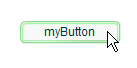

|

ActionScript 3.0 syntax
The syntax of a language is the set of rules you must follow
when writing code.
Case sensitivity
ActionScript 3.0 is a case-sensitive language. Identifiers
that differ only in case are considered different identifiers. For
example, the following code creates two different variables:
var sampleVariable:int;
var SampleVariable:int;
Semicolons
The semicolon character (
;
) is used to
terminate a statement. If you omit the semicolon, the compiler assumes
that each line of code represents a single statement. Terminating
each statement with a semicolon is good practice and makes your
code easier to read.
Parentheses
You can use
parentheses
(
()
)
in three ways in ActionScript 3.0. First, you can use parentheses
to change the order of operations in an expression. Operations that are
grouped inside parentheses are always executed first. For example,
parentheses are used to alter the order of operations in the following
code:
trace(2 + 3 * 4); // 14
trace((2 + 3) * 4); // 20
Second, you can use parentheses with the comma operator (
,
)
to evaluate a series of expressions and return the result of the
final expression. This technique is shown in the following example:
var a:int = 2;
var b:int = 3;
trace((a++, b++, a+b)); // 7
Third, you can use parentheses to pass one or more parameters
to functions or methods. In the following example, a String value
is passed to the
trace()
function:
trace("hello"); // hello
Code blocks
One or more lines of code enclosed in curly brackets (
{ }
)
is called a block. Code is grouped together and organized into blocks
in ActionScript 3.0. The bodies of most programming constructs like
classes, functions, and loops are contained inside blocks.
function sampleFunction():void{
var sampleVariable:String = "Hello, world.";
trace(sampleVariable);
}
for(var i:uint=10; i>0; i--){
trace(i);
}
Whitespace
Any spacing in code—spaces, tabs, line breaks, and so on—is
referred to as whitespace. The compiler ignores extra whitespace
that is used to make code easier to read. For example, the following
two examples are equivalent:
for(var i:uint=0; i<10; i++){
trace(i);
}
for(var i:uint=0; i<10; i++){trace(i);}
Comments
As you write
ActionScript, you can leave notes to yourself or others. For example, use
comments to explain how certain lines of code work or why you made
a particular choice. Code comments are a tool you can use to write
text that the computer ignores in your code. ActionScript 3.0 code
supports two types of comments: single-line comments and multiline
comments. The compiler ignores text that is marked as a comment.
Single-line comments
begin
with two forward slash characters (
//
) and continue until
the end of the line. For example, the following code contains a
single-line comment:
// a single line comment
Multiline or block comments begin
with a forward slash and asterisk (
/*
) and end
with an asterisk and forward slash (
*/
).
/* This is multiline comment that can span
more than one line of code. */
Another common use of comments is to temporarily “turn off” one
or more lines of code. For example, use comments to figure out why
certain ActionScript code isn’t working the way you expect. You
can also use comments to test a different way of doing something.
Literals
A
literal
is any fixed value that appears directly
in your code. The following examples are literals:
17
"hello"
-3
9.4
null
undefined
true
false
Literals can also be grouped to form compound literals. The following
example shows a compound literal being passed as a parameter to
the Array class constructor.
var myStrings:Array = new Array(["alpha", "beta", "gamma"]);
var myNumbers:Array = new Array([1,2,3,5,8]);
Keywords and reserved words
Reserved words
are words that you cannot use as
identifiers in your code because the words are reserved for use
by ActionScript. Reserved words include
lexical keywords
,
which are removed from the program namespace by the compiler. The compiler
reports an error if you use a lexical keyword as an identifier.
The following table lists ActionScript 3.0 lexical keywords.
|
as
|
if
|
return
|
|
break
|
implements
|
super
|
|
case
|
import
|
switch
|
|
catch
|
in
|
this
|
|
class
|
instanceof
|
throw
|
|
const
|
interface
|
to
|
|
default
|
internal
|
true
|
|
delete
|
is
|
try
|
|
do
|
native
|
typeof
|
|
else
|
new
|
use
|
|
extends
|
null
|
var
|
|
false
|
package
|
void
|
|
finally
|
private
|
while
|
|
for
|
protected
|
with
|
|
function
|
public
|
|
There is a small set of keywords, called
syntactic keywords
,
that can be used as identifiers, but that have special meaning in
certain contexts. The following table lists ActionScript 3.0 syntactic
keywords.
|
each
|
include
|
override
|
|
get
|
dynamic
|
static
|
|
set
|
final
|
|
|
namespace
|
native
|
|
There are also several identifiers that are sometimes referred
to as
future reserved words
. These identifiers are not currently
reserved in ActionScript 3.0. However, Adobe recommends avoiding
these words because a subsequent version of the language may include
them as keywords.
|
abstract
|
export
|
throws
|
|
boolean
|
float
|
to
|
|
byte
|
goto
|
transient
|
|
cast
|
intrinsic
|
type
|
|
char
|
long
|
virtual
|
|
debugger
|
prototype
|
volatile
|
|
double
|
short
|
|
|
enum
|
synchronized
|
|
Slash syntax
Slash syntax
is not supported in ActionScript 3.0. Slash syntax was used in earlier versions
of ActionScript to indicate the path of a movie clip or variable.
Variables
Almost everything you do in programming requires variables.
A variable is a name that relates to a location in the computer’s
memory that contains a value. Any time the computer sees a variable
name in your code, the computer looks in its memory and uses the
value it finds there. For example, if you have two variables named
firstVariable
and
secondVariable
,
each containing a number, to add those two numbers you write the
statement:
firstVariable + secondVariable
If
firstVariable
contained 5 and
secondVariable
contained
43, the arithmetic above results in 48.
A memory location can only hold one value at any given time.
Therefore, a variable only refers to one value at any given time.
That value can vary as your program runs. If
secondVariable
changes
to 23, summing the two variables would result in 28.
Naming limitations and conventions
Each variable must have a unique name. In ActionScript
3.0, you can name variables using words that remind you what the
variables are. Once you properly name a variable, you only have
to call the variable by name when you want to use it.
Each programming language has its own rules about naming variables.
For example, some languages limit name length or prohibit certain
characters or words. If you break one of these rules, an error occurs
and your code does not run.
Naming limitations for variables in ActionScript 3.0
-
Variable names cannot be a reserved word or keyword. For
more information, see
ActionScript 3.0 syntax
-
Variable names must start with a letter, an underscore, or
a dollar sign
-
Variable names cannot use special characters (except
_
and
$
in
certain situations)
-
Variable names must be unique
In addition to observing the limitations of the language, programmers
also follow conventions when naming their variables. Some conventions
are considered standard practices within a professional community
and therefore have shared meaning. Managers, development teams,
or clients sometimes dictate conventions. Programmers also develop
naming conventions as part of their own personal coding style.
Unlike failure to observe the naming limitations of a language,
failure to follow conventions does not prompt errors. However, following
naming conventions can actually be more important to a successful development
process.
Naming conventions for variables in ActionScript 3.0
-
Use camel case: Start with a lowercase letter and include
uppercase letters, for example
totalCost
or
dailyTotalsArray
-
Use an underscore (
_
)only to start the name
of a private variable
-
Use a dollar (
$
) sign only to start the
name of a static variable
-
Use descriptive variable names so that the content of any
variable is obvious, no matter where the variable appears in code
Access control attributes
You control access to variables, classes, functions, and
methods using access control attributes. Access control attributes
help achieve encapsulation. Encapsulation is an important concept
in object-oriented programming; for more information, see
Encapsulation
.
You use these
access control attribute keywords
when
you declare variables to control access in ActionScript 3.0
|
Access control attribute keyword
|
Access
|
|
public
|
available to any caller
|
|
private
|
available only to the class that defines
it
|
|
protected
|
available only to the class that defines
it and to any subclasses of that class
|
|
internal
|
available to any caller within the same package
|
Variable declaration
Creating a variable is called variable declaration. ActionScript
3.0 requires the use of a keyword—
var
—to signal
that you are declaring a variable. Including the keyword
var
,
there are four parts to (non-local) variable declaration in ActionScript
3.0:
-
access control attribute keyword
-
var
-
variable name
-
data type
Here are some examples of variable declaration:
public var userName:String;
private var correctAnswer:Boolean;
internal var userAge:uint;
protected var predictedTemperature:int;
private var productPrice:Number;
Note:
For more information
on data types, see
Data types
.
Data assignment
Putting data into a variable is called assignment. It uses
the assignment operator =. Use the assignment operator with a variable
name on the left and the data on the right. You can assign data
anytime after a variable has been declared.
The following example declares a variable named userAge to hold
an integer and then assigns it the value of 21.
internal var userAge:int;
userAge = 21;
Because you can assign data anytime after a variable has been
declared, you can do it immediately after declaration within the
same statement.
public var userName:String = "Jane";
private var correctAnswer:Boolean = true;
internal var userAge:uint = 19;
protected var predictedTemperature:int = -5;
private var productPrice:Number = 5.99;
Assignment can take place any time after a variable has been
declared—at declaration, many lines later, or after an event occurs.
Assignment takes place when the data is known.
Constants
Constants are properties with a fixed value that cannot
be altered. You can assign a value to a constant only once, and
the assignment must occur in proximity to the declaration of the
constant. An error results if you attempt to change the data in
a constant.
Constants are declared using the
const
keyword
instead of
var
. By convention, constant names
are all caps with words separated by an underscore
Example: You are building an application that converts miles
to kilometers. Miles are multiplied by a conversion value to get
kilometers. If that conversion value changes, the conversions are
no longer correct. Use a constant to hold the conversion value.
const MILES_KM_CONVERSION_VALUE:Number = 1.61;
Data types
Data types
Computers handle different types of data differently. Possible
values, operations that can be performed, and storage methods vary
across the types of data a programming language supports. Assigning
the data type for a variable limits what the variable can contain,
what can be done to the value, and how it is stored.
Using data types can seem like an extra step because you must
plan how your application handles data before you start writing
code. However, when you use data types, your code is more predictable
and your applications are more stable. Data types are also invaluable
during the debugging process.
Think about the toy that helps toddlers learn to recognize shapes.
Star shaped blocks only fit in the star holes. Cubes only fit in
the square holes. Cylinders only fit in the circle holes. The box
gives toddlers an immediate error—the block doesn’t fit—when they
try to put the star into the square hole. Similarly, the computer
throws an error when you try to fit one type of data into a variable
that was typed with a different data type.
ActionScript 3.0 has many data types to use as the type for the
variables you create. A
primitive value
is a value that belongs
to one of the following data types:
String
,
Number
,
int
,
uint
,
Boolean
,
Null
,
and
void
.
-
String
: a textual value, like a name
or the text of a book chapter
-
Numeric: ActionScript 3.0 includes three specific data types
for numeric data:
-
Number
: any numeric
value, including values with or without a fraction
-
int
: an integer (a whole number without
a fraction)
-
uint
: an “unsigned” integer, meaning a whole
number that is not negative
-
Boolean
: a true-or-false value, such as
whether a switch is on or whether two values are equal
Primitive values are usually faster than complex values because
ActionScript 3.0 stores primitive values in a special way that makes
memory and speed optimizations possible.
Note:
For readers interested in the technical details,
ActionScript 3.0 stores primitive values internally as immutable
objects. The fact that they are stored as immutable objects means
that passing by reference is effectively the same as passing by
value. This cuts down on memory usage and increases execution speed,
because references are usually significantly smaller than the values
themselves.
A
complex value
is a value that is not a primitive value.
Data types that define sets of complex values include:
Object
,
Array
,
Date
,
Error
,
Function
,
RegExp
,
XML
,
and
XMLList
. All values in ActionScript 3.0, whether
they are primitive or complex
,
are objects.
The ActionScript 3.0 core classes include all of the primitive
and complex data types listed above. The core classes allow you
to create objects using literal values instead of using the
new
operator.
For example, you can create an array using a literal value or the
Array class constructor, as follows:
var someArray:Array = [1, 2, 3]; // literal value
var someArray:Array = new Array(1,2,3); // Array constructor
Type checking
Type checking can occur at either compile time or runtime.
Statically typed languages report type errors at compile time, which
requires type information to be known at compile time. Dynamically
typed languages type check at runtime which allows flexibility in
code structure. However, in runtime reporting, type errors are not
discovered until later. As a dynamically typed language, ActionScript
3.0 has runtime type checking. However, in
strict mode
, type
checking occurs at both compile time and runtime. In standard mode,
type checking occurs only at runtime.
Compile-time type checking
Compile-time type checking is favored as a project’s size
grows because catching type errors as early as possible becomes
more important than data type flexibility. By default, the ActionScript
compiler in Flash Professional and Flash Builder is set to run in
strict mode to catch errors early.
To provide compile-time type checking, the compiler must know
the data type information for the variables or expressions in your
code. To explicitly declare a data type for a variable, use the
colon operator (
:
) followed by the data type as
a suffix to the variable name. To associate a data type with a parameter,
use the colon operator followed by the data type. For example, the
following code adds data type information to the
sampleParameter
parameter
and declares a variable
sampleData
with an explicit
data type:
function runtimeTest(sampleParameter:String)
{
trace(sampleParameter);
}
var sampleData:String = "hello";
runtimeTest(sampleData);
In strict mode, the ActionScript compiler reports type mismatches
as compiler errors. For example, the following code declares a function
parameter
sampleParameter
, of type Object, but
later attempts to assign values of type String and Number to that
parameter. In strict mode, a compiler error results.
function dynamicTest(sampleParameter:Object)
{
if (sampleParameter is String)
{
var exampleString:String = sampleParameter; // compiler error in strict mode
trace("String: " + exampleString);
}
else if (sampleParameter is Number)
{
var exampleNumber:Number = sampleParameter; // compiler error in strict mode
trace("Number: " + exampleNumber);
}
}
Runtime type checking
Runtime type checking occurs in ActionScript 3.0 whether
you compile in strict mode or standard mode. Consider a situation
in which the value 3 is passed as an argument to a function that
expects an array. In strict mode, the compiler generates an error,
because the value 3 is not compatible with the data type
Array
.
If you run in standard mode, the compiler does not complain about
the type mismatch, but runtime type checking results in a runtime
error.
The following example shows a function named
typeTest()
that
expects an Array argument but is passed a value of 3. The incorrect
type causes a runtime error in standard mode, because the value
3 is not a member of the parameter’s declared data type (Array).
function typeTest(sampleParameter:Array)
{
trace(sampleParameter);
}
var exampleNumber:Number = 3;
typeTest(exampleNumber);
// run-time error in ActionScript 3.0 standard mode
There are also situations where you get a runtime type error
even when you are operating in strict mode. This error is possible
if you use strict mode, but opt out of compile-time type checking
by using an untyped variable. When you use an untyped variable,
you are not eliminating type checking but rather deferring it until
runtime. For example, if the
exampleNumber
variable
in the previous example does not have a declared data type, the
compiler cannot detect the type mismatch. However, a runtime error
occurs because ActionScript compares the runtime value of
exampleNumber
,
which is 3, with the type of
sampleParameter
, which
is set to the Array data type.
function typeTest(sampleParameter:Array)
{
trace(sampleParameter);
}
var exampleNumber = 3;
typeTest(exampleNumber);
// run-time error in ActionScript 3.0
The is operator
The
is
operator tests whether a variable
or expression is compatible with a given data type. It examines
the proper inheritance hierarchy and can be used to check whether
an object is an instance of a particular class. It can also check
whether an object is an instance of a class that implements a particular
interface. The following example creates an instance of the Sprite
class named
mySprite
. Then it uses the
is
operator
to test whether
mySprite
is an instance of the Sprite
and DisplayObject classes, and whether it implements the IEventDispatcher
interface:
var mySprite:Sprite = new Sprite();
trace(mySprite is Sprite); // true
trace(mySprite is DisplayObject);// true
trace(mySprite is IEventDispatcher); // true
The
is
operator checks the inheritance hierarchy
and properly reports that
mySprite
is compatible
with the Sprite and DisplayObject classes. The
is
operator
also checks whether
mySprite
inherits from any
classes that implement the IEventDispatcher interface. Because the
Sprite class inherits from the EventDispatcher class, which implements
the IEventDispatcher interface, the
is
operator
correctly reports that
mySprite
implements the
same interface.
Data type descriptions
The primitive data types include
Boolean
,
int
,
Null
,
Number
,
String
,
uint
,
and
void
. The ActionScript core classes also define
the following complex data types:
Object
,
Array
,
Date
,
Error
,
Function
,
RegExp
,
XML
,
and
XMLList
.
Boolean data type
The
Boolean
data
type includes two values:
true
and
false
.
No other values are valid for variables of Boolean type. The default
value of a Boolean variable that has been declared but not initialized
is
false
.
Number data type
In ActionScript 3.0, the
Number
data type can represent
all types of numbers—integers, unsigned integers, and floating‑point
numbers. It is the most flexible of numeric data types in ActionScript
3.0. However, to maximize performance, use the
Number
data
type only for floating-point numbers or for integer values larger
than the 32‑bit
int
and
uint
types
can store.
Storage of floating-point numbers
The
Number
data type uses the 64‑bit double-precision
format as specified by the IEEE Standard for Binary Floating‑Point
Arithmetic (IEEE-754). This standard dictates how floating-point
numbers are stored using the 64 available bits. One bit is used
to designate whether the number is positive or negative. Eleven
bits are used for the exponent, which is stored as base 2. The remaining
52 bits are used to store the
significand
(also called
mantissa
),
the number that is raised to the power indicated by the exponent.
By using some of its bits to store an exponent, the
Number
data
type can store floating-point numbers significantly larger than
if it used all of its bits for the significand. For example, if
the
Number
data type used all 64 bits to store
the significand, it could store a number as large as 2
65
-
1. By using 11 bits to store an exponent, the
Number
data
type can raise its significand to a power of 2
1023
.
Although this range of numbers is enormous, it comes at the cost
of precision. Because the
Number
data type uses
52 bits to store the significand, numbers that require more than
52 bits for accurate representation, such as the fraction 1/3, are
only approximations. If your application requires absolute precision
with decimal numbers, use software that implements decimal floating-point
arithmetic as opposed to binary floating-point arithmetic.
To store a floating-point number, include a decimal point in
the number. If you omit a decimal point, the number is stored as
an integer.
NaN and other special Number values
The default value of an unassigned
Number
variable
is
NaN
. The
NaN
value is also
the result of any operation that should return a number but does
not. For example, if you attempt to calculate the square root of
a negative number or divide 0 by 0, the result is
NaN
.
Other special
Number
values include positive infinity
and negative infinity.
Note:
The result of division by 0 is only
NaN
if
the divisor is also 0. Division by 0 produces infinity when the
dividend is positive or -infinity when the dividend is negative.
Int data type
The
int
data
type includes all positive and negative whole numbers from ‑2,147,483,648
(‑2
31
) through 2,147,483,647 (2
31
– 1) inclusive.
It is stored as a 32‑bit integer. If you do not need floating-point
numbers, use the
int
type instead of
Number
because
it is faster and more efficient. For values outside the range of
int
,
use the
Number
data type. The
int
type
is commonly used in counters and loops. The default value for unassigned
int
variables
is 0.
If you try to assign a floating-point value to an
int
variable,
ActionScript ignores the fractional (decimal) part.
Uint data type
The uint data
type includes all positive whole numbers from 0 through 4,294,967,295
(2
32
– 1) inclusive. It is stored as a 32‑bit integer.
The default value for unassigned
uint
variables
is 0. As with
int
, if you try to assign a floating‑point
value to a
uint
variable, ActionScript ignores
the fractional (decimal) part.
A
uint
value is always a simple binary translation
of the value. Use a
uint
for all bit math and when
working with hexadecimal values for color.
Null data type
The
Null
data type contains only one value,
null
.
This value is the default value for the
String
data
type and all classes that define complex data types, including the
Object
class.
None of the other primitive data types,
Boolean
,
Number
,
int
,
and
uint
, contain the value
null
.
At runtime, the value
null
is converted to the
appropriate default value if you attempt to assign
null
to variables
of type
Boolean
,
Number
,
int
,
or
uint
.
Do not confuse value
null
with the special value
undefined
.
When
null
and
undefined
are compared
with the equality (
==
) operator, they compare as equal.
However, when
null
and
undefined
are
compared with the strict equality (
===
) operator,
they compare as not equal.
String data type
The
String
data type represents a sequence
of 16‑bit characters. Strings are stored internally as Unicode characters,
using the UTF‑16 format. Strings are immutable values. An operation
on a
String
value returns a new instance of the
string. The default value for a variable declared with the
String
data
type is
null
. The value
nul
is
not the same as the empty string (
""
). The value
null
means
that the variable has no value stored in it. The empty string means
that the variable has a value that is a
String
containing
no characters.
void data type
The
void
data type contains only one value,
undefined
.
You can only assign a value of
undefined
to variables
that are untyped. Untyped variables are variables that either lack
any type annotation, or use the asterisk (
*
) symbol
for type annotation. You can use
void
only as a
return type annotation.
Object data type
The
Object
class defines the
Object
data
type. The
Object
class serves as the base class
for all class definitions in ActionScript. The default value for
instances of the
Object
class is
null
.
Type conversions
A type conversion is said to occur when a value of one
data type is transformed into a value of a different data type.
Type conversions can be either
implicit
or
explicit
.
Implicit conversion, also called
coercion
, is sometimes performed
at runtime. For example, if the value 2 is assigned to a
Boolean
typed
variable, the value 2 is converted to the
Boolean
value
true
before
assignment. Explicit conversion, also called
casting
, occurs
when your code instructs the compiler to treat a variable of one
data type as if it belongs to a different data type. When primitive
values are involved, casting actually converts values from one data
type to another. To cast an object to a different type, you wrap
the object name in parentheses and precede it with the name of the
new type. For example, the following code takes a
Boolean
value
and casts it to an integer:
var myBoolean:Boolean = true;
var myINT:int = int(myBoolean);
trace(myINT); // 1
Implicit conversions
Implicit conversions
happen at runtime in a number of contexts:
-
In assignment
statements
-
When values are passed as function arguments
-
When values are returned from functions
-
In expressions using certain operators, such as the addition
(
+
) operator
For user-defined types,
implicit conversions succeed when the value to be converted is an
instance of the destination class or a class that derives from the destination
class. If an implicit conversion is unsuccessful, an error occurs.
For example, the following code contains a successful implicit conversion
and an unsuccessful implicit conversion:
class A {}
class B extends A {}
var objA:A = new A();
var objB:B = new B();
var arr:Array = new Array();
objA = objB; // Conversion succeeds.
objB = arr; // Conversion fails.
For primitive types,
implicit conversions are handled by calling the same internal conversion
algorithms that are called by the explicit conversion functions.
Explicit conversions
It’s helpful to use
explicit conversions when you compile in strict mode, because there
are times when you do not want to generate a compile-time error.
Use explicit conversions when you know that coercion will convert
your values correctly at runtime. For example, when working with
data received from a form, cast certain string values to numeric
values. The following code generates a compile-time error even though
the code would run correctly in standard mode:
var quantityField:String = "3";
var quantity:int = quantityField; // compile time error in strict mode
If
you want to continue using strict mode, but would like the string
converted to an integer, you can use explicit conversion, as follows:
var quantityField:String = "3";
var quantity:int = int(quantityField); // Explicit conversion succeeds.
Casting to int, uint, and Number
You can
cast any data type into one of the three number types:
int
,
uint
,
and
Number
. If the number can’t be converted, the
default value of 0 is assigned for
int
and
uint
data
types, and the default value of
NaN
is assigned
for the
Number
data type. If you convert a
Boolean
value
to a number,
true
becomes the value 1 and
false
becomes
the value 0.
var exampleBoolean:Boolean = true;
var exampleUINT:uint = uint(exampleBoolean);
var exampleINT:int = int(exampleBoolean);
var exampleNumber:Number = Number(exampleBoolean);
trace(exampleUINT, exampleINT, exampleNumber); // 1 1 1
exampleBoolean = false;
exampleUINT = uint(exampleBoolean);
exampleINT = int(exampleBoolean);
exampleNumber = Number(exampleBoolean);
trace(exampleUINT, exampleINT, exampleNumber); // 0 0 0
String
values
that contain only digits can be successfully converted into one
of the number types. The number types can also convert strings that
look like negative numbers or strings that represent a hexadecimal
value (for example,
0x1A
). The conversion process
ignores leading and trailing white space characters in the string
value. You can also cast strings that look like floating-point numbers
using
Number()
. The inclusion of a decimal point
causes
uint()
and
int()
to return
an integer, truncating the decimal and the characters following
it. For example, the following string values can be cast into numbers:
trace(uint("5")); // 5
trace(uint("-5")); // 4294967291. It wraps around from MAX_VALUE
trace(uint(" 27 ")); // 27
trace(uint("3.7")); // 3
trace(int("3.7")); // 3
trace(int("0x1A")); // 26
trace(Number("3.7")); // 3.7
String
values
that contain non-numeric characters return 0 when cast with
int()
or
uint()
and
NaN
when
cast with
Number()
. The conversion process ignores
leading and trailing white space, but returns 0 or
NaN
if
a string has white space separating two numbers.
trace(uint("5a")); // 0
trace(uint("ten")); // 0
trace(uint("17 63")); // 0
Casting is not necessary
when a value of one numeric type is assigned to a variable of a
different numeric type. Even in strict mode, the numeric types are implicitly
converted to the other numeric types. In some cases, this implicit conversion
causes unexpected values to result when the range of a type is exceeded.
The following examples all compile in strict mode, though some generate
unexpected values:
var exampleUint:uint = -3; // Assign int/Number value to uint variable
trace(exampleUint); // 4294967293
var exampleNumber:Number = exampleUint; // Assign int/uint value to Number variable
trace(exampleNumber) // 4294967293
var exampleInt:int = Number.MAX_VALUE + 1; // Assign Number value to int variable
trace(exampleInt); // 0
exampleInt = uint.MAX_VALUE + 1; // Assign uint value to int variable
trace(exampleInt); // 0
The following table summarizes
the results of casting to the
Number
,
int
,
or
uint
data type from other data types.
|
Data type or value
|
Result of conversion to Number, int, or
uint
|
|
Boolean
|
If the value is
true
, 1;
otherwise, 0.
|
|
Date
|
The internal representation of the Date
object, which is the number of milliseconds since midnight January
1, 1970, universal time.
|
|
null
|
0
|
|
Object
|
If the instance is
null
and
converted to
Number
,
NaN
; otherwise,
0.
|
|
String
|
A number if the string can be converted
to a number; otherwise,
NaN
if converted to
Number
,
or 0 if converted to
int
or
uint
.
|
|
undefined
|
If converted to
Number
,
NaN
;
if converted to
int
or
uint
, 0.
|
Casting to Boolean
Casting to Boolean
from any of the numeric data types (
uint
,
int
,
and
Number
) results in
false
if
the numeric value is 0, and
true
otherwise. For
the
Number
data type, the value
NaN
also
results in
false
. The following example shows the
results of casting the numbers -1, 0, and 1:
var numberToCast:Number;
for (numberToCast = -1; numberToCast<2; numberToCast++)
{
trace("Boolean(" + numberToCast +") is " + Boolean(numberToCast));
}
The output from the example shows that, of the
three numbers, only 0 returns a value of
false
:
Boolean(-1) is true
Boolean(0) is false
Boolean(1) is true
Casting to
Boolean
from
a
String
value returns
false
if
the string is either
null
or an empty string (
""
).
Otherwise, it returns
true
.
var stringToCast:String; // Uninitialized string is null.
trace(Boolean(stringToCast)); // false
var emptyStringToCast:String = ""; // empty string
trace(Boolean(emptyStringToCast)); // false
var wsStringToCast:String = " "; // white space only
trace(Boolean(wsStringToCast)); // true
Casting to
Boolean
from
an instance of the Object class returns
false
if
the instance is
null
; otherwise, it returns
true
:
var objectToCast:Object; // Uninitialized object is null.
trace(Boolean(objectToCast)); // false
objectToCast = new Object(); // instantiate
trace(Boolean(objectToCast)); // true
Boolean
variables
get special treatment in strict mode in that you can assign values
of any data type to a
Boolean
variable without
casting. In other words, unlike almost all other data types, casting
to
Boolean
is not necessary to avoid strict mode
errors. The following examples all compile in strict mode and behave as
expected at runtime:
var objectToCast:Object = new Object();
var sampleBoolean:Boolean = objectToCast;
trace(sampleBoolean); // true
sampleBoolean = "random string";
trace(sampleBoolean); // true
sampleBoolean = new Array();
trace(sampleBoolean); // true
sampleBoolean = NaN;
trace(sampleBoolean); // false
The following
table summarizes the results of casting to the Boolean data type from
other data types:
|
Data type or value
|
Result of conversion to Boolean
|
|
String
|
false
if the value is
null
or
the empty string (
""
);
true
otherwise.
|
|
null
|
false
|
|
Number
,
int
,
or
uint
|
false
if the value is
NaN
or
0;
true
otherwise.
|
|
Object
|
false
if the instance is
null
;
true
otherwise.
|
Casting to String
Casting to the
String
data
type from any of the numeric data types returns a string representation
of the number. Casting to the
String
data type
from a
Boolean
value returns the string
"true"
if
the value is
true
, and returns the string
"false"
if
the value is
false
.
Casting to the
String
data
type from an instance of the
Object
class returns the
string
"null"
if the instance is
null
.
Otherwise, casting to the
String
type from the
Object
class
returns the string
"[object Object]"
.
Casting
to
String
from an instance of the
Array
class
returns a string made up of a comma-delimited list of all the array
elements. For example, the following cast to the
String
data
type returns one string containing all three elements of the array:
var sampleArray:Array = ["primary", "secondary", "tertiary"];
trace(String(sampleArray)); // primary,secondary,tertiary
Casting
to
String
from an instance of the
Date
class
returns a string representation of the date that the instance contains.
For example, the following example returns a string representation
of the
Date
class instance (the output shows result
for Pacific Daylight Time):
var sampleDate:Date = new Date(2005,6,1);
trace(String(sampleDate)); // Fri Jul 1 00:00:00 GMT-0700 2005
The
following table summarizes the results of casting to the String
data type from other data types.
|
Data type or value
|
Result of conversion to string
|
|
Array
|
A string made up of all array elements.
|
|
Boolean
|
"
true
" or "
false
"
|
|
Date
|
A string representation of the Date object.
|
|
null
|
"null"
|
|
Number
,
int
,
or
uint
|
A string representation of the number.
|
|
Object
|
If the instance is null,
"null"
;
otherwise,
"[object Object]".
|
The as operator
The
as
operator
attempts to perform a type cast. If it succeeds, the value of the expression
is returned. If the cast fails, null is returned. The following
example shows the results of using the
as
operator
in the simple case of checking whether a Sprite instance is a member
of the DisplayObject, IEventDispatcher, and Number data types.
var mySprite:Sprite = new Sprite();
trace(mySprite as Sprite); // [object Sprite]
trace(mySprite as DisplayObject); // [object Sprite]
trace(mySprite as IEventDispatcher); // [object Sprite]
trace(mySprite as Number); // null
When
you use the
as
operator, the operand on the right
must be a data type. An attempt to use an expression other than
a data type as the operand on the right results in an error.
Default values
A
default value
is the value that a variable contains
before you set its value. You
initialize
a variable when
you assign it a value for the first time. If you declare a variable,
but do not assign it a value, that variable is
uninitialized
.
The value of an uninitialized variable depends on its data type.
The following table describes the default values of variables, organized
by data type:
|
Data type
|
Default value
|
|
Boolean
|
false
|
|
int
|
0
|
|
Number
|
NaN
|
|
Object
|
null
|
|
String
|
null
|
|
uint
|
0
|
|
Not declared (equivalent to type annotation
*
)
|
undefined
|
|
All other classes, including user-defined
classes.
|
null
|
If you declare a variable, but do not declare its data type,
the default data type
*
applies, which actually
means that the variable is untyped. If you also do not initialize
an untyped variable with a value, its default value is
undefined
.
The value
null
is not a valid value for variables
of type
Boolean
,
Number
,
int
, or
uint
.
If you attempt to assign a value of
null
to a such
a variable, the value is converted to the default value for that
data type. For variables of type
Object
, you can
assign a value of
null
. If you attempt to assign
the value
undefined
to a variable of type
Object
,
the value is converted to
null
.
Operators
Operators and operands
Operators are special symbols (or occasionally words) that
are used to perform calculations and to compare, modify, or combine
values of variables, objects, properties, and expressions. They
take one or more operands and frequently return a value.
An
operand
is a value—a literal, a variable, or an expression—that
an operator uses as input. For example, in the following code, the
addition (
+
) and multiplication (
*
)
operators are used with three literal operands (2, 3, and 4
)
to
return a value. The assignment (
=
) operator then
assigns the returned value, 14, to the variable
sumNumber
.
var sumNumber:uint = 2 + 3 * 4; // sumNumber is now 14
Prefix operators
come before their operand. Logical NOT
(
!
) and negation (
-
) are examples
of prefix operators.
Postfix operators
come after their operands. Increment
(
++
) and decrement (
--
) are examples
of postfix operators.
Interfix operators
come between operands.
In
2 * y
, the multiplication operator is an interfix
operator.
Operators can be unary, binary, or ternary. A
unary
operator,
such as the increment operator (
++
), takes one
operand. A
binary
operator, like the division operator (
/
),
takes two operands. A
ternary
operator takes three operands.
It is important to provide the correct number of operands.
Some operators are
overloaded
, which means that they behave
differently depending on the type or quantity of operands passed
to them. The addition (
+
) operator is an example
of an overloaded operator that behaves differently depending on
the data type of the operands. If both operands are numbers, the addition
operator returns the sum of the values. If both operands are strings,
the addition operator returns the concatenation of the two operands.
The following example code shows how the operator behaves differently
depending on the operands:
trace(5 + 5); // 10
trace("Hello" + "world"); // Helloworld
trace("5" + "5"); // 55
Types of operators
Arithmetic operators
The additive and multiplicative operators (
+
,
-
,
*
,
/
)
take two operands and perform the appropriate calculation. The modulo
operator returns the remainder after a division operation. Increment
(
++
) and decrement (
--
) are unary operators
and therefore only require one operand. They either add (increment) or
subtract (decrement) 1 from the expression they are used on. They
can be used as either prefix or postfix operators.
|
Operator
|
Operation performed
|
|
+
|
Addition
: Adds numeric expressions
|
|
-
|
Subtraction
:
Negates or subtracts numeric expressions
|
|
*
|
Multiplication:
Multiplies two numerical expressions
|
|
/
|
Division
: Divides
expression1
by
expression2
|
|
%
|
Modulo
: Calculates the remainder
of
expression1
divided by
expression2
|
|
++
|
Increment
:
Adds 1 to a numeric expression
|
|
--
|
Decrement:
Subtracts 1 from a numeric expression
|
The increment (
++
) and decrement (
--
)
operators can be used as
prefix
or
postfix
operators
.
When used as prefix operators, the increment or decrement operation is
completed before the value of the overall expression is returned.
For example, the following code shows how the value of the expression
++xNum
is
returned after the value is incremented:
var xNum:Number = 0;
trace(++xNum); // 1
trace(xNum); // 1
When increment or decrement is used as a postfix operator, the
expression’s value is returned before the postfix operator is processed.
For example, the following code shows how the value of the expression
xNum++
is
returned before the value is incremented:
var xNum:Number = 0;
trace(xNum++); // 0
trace(xNum); // 1
Assignment and compound assignment operators
The assignment operator assigns the value of the expression
on the right to the operand on the left. The operand on the right
can be any expression that ActionScript 3.0 can evaluate. The operand
on the left must be a single variable, array element, or property.
Compound assignment operators perform arithmetic on a variable
and then store the result in that same variable.
|
Operator
|
Operation performed
|
Example
|
|
=
|
Assignment:
Assigns the value of
expression2
(the operand on
the right) to the variable, array element, or property in
expression1
(the
operand on the left)
|
var x:uint = 10;
// x is now 10
var y:uint = (5+7)/2;
// y is now 6
var text:String = "Hello";
// text is now Hello
|
|
+=
|
Addition assignment
: Assigns
expression1
the
value of
expression1
+
expression2
|
var x:uint = 5;
x += 5; // x is now 10
|
|
-=
|
Subtraction assignment
: Assigns
expression1
the
value of
expression1
-
expression2
|
var x:uint = 5;
x -= 5; // x is now 0
|
|
*=
|
Multiplication assignment
: Assigns
expression1
the
value of
expression1
*
expression2
|
var x:uint = 5;
x *= 5; // x is now 25
|
|
/=
|
Division assignment
: Assigns
expression1
the
value of
expression1
/
expression2
|
var x:uint = 5;
x /= 5; // x is now 1
|
|
%=
|
Modulo assignment
: Assigns
expression1
the
value of
expression1
%
expression2
|
var x:uint = 13;
x %= 5; // x is now 3
|
Equality and comparison operators
The equality operators take two operands, compare their
values, and return a Boolean value. The relational operators take
two operands, compare their values, and return a Boolean value.
|
Operator
|
Operation performed
|
Example
|
|
==
|
Equality
:
Tests two expressions for equality. The result is
true
if
the expressions are equal.
|
var a:uint = 13;
var b:uint = 13;
trace(a==b); // true
var c:String = "Hello";
var d:String = "World";
trace(c==d); // false
|
|
!=
|
Inequality
:
Tests for the exact opposite of the equality (
==
) operator.
If
expression1
is equal to
expression2
,
the result is
false
.
|
var a:uint = 13;
var b:uint = 13;
trace(a!=b); // false
var c:String = "Hello";
var d:String = "World";
trace(c==d); // true
|
|
===
|
Strict equality
: Tests two
expressions for equality, but does not perform automatic data conversion.
The result is
true
if both expressions, including
their data types, are equal.
|
var a:uint = 13;
var b:Number = 13;
trace(a===b); // false
var c:uint = 22;
var d:uint = 22;
trace(c===d); // true
|
|
!==
|
Strict inequality
: Tests for
the exact opposite of the strict equality (===) operator. If
expression1
is
equal to
expression2
, and their data types are
equal, the result is
false
.
|
var a:uint = 13;
var b:Number = 13;
trace(a!==b); // true
var c:uint = 22;
var d:uint = 22;
trace(c!==d); // false
|
|
<
|
Less than
: Compares two expressions and determines whether
expression1
is
less than
expression2
; if it is, the result is
true
|
var x:int = 27;
var y:int = 42;
var z:int = 101;
trace(x<y); // true
trace(z<y); // false
|
|
>
|
Greater than
: Compares two expressions and determines whether
expression1
is
greater than
expression2
; if it is, the result
is
true
|
var x:int = 27;
var y:int = 42;
var z:int = 101;
trace(x>y); // false
trace(z>y); // true
|
|
<=
|
Less than or equal to
: Compares
two expressions and determines whether
expression1
is
less than or equal to
expression2
; if it is, the
result is
true
|
var x:int = 27;
var y:int = 42;
var z:int = 42;
trace(x<=y); // true
trace(y<=z); // true
|
|
>=
|
Greater than or equal to
: Compares
two expressions and determines whether
expression1
is
greater than or equal to
expression2
; if it is,
the result is
true
|
var x:int = 27;
var y:int = 42;
var z:int = 42;
trace(x>=y); // false
trace(y>=z); // true
|
Logical operators
The logical operators take two operands and return a Boolean
result. They are frequently used to combine conditions.
|
Operator
|
Operation performed
|
|
!
|
Logical NOT
: Inverts the Boolean value of a variable or
expression
|
|
&&
|
Logical AND
: Returns
expression1
if it
is
false
or can be converted to
false
,
and
expression2
otherwise. If both operands are
of type Boolean, the result is
true
only if both
operands are true
|
|
||
|
Logical OR
: Returns expression1 if it is true or can be
converted to true, and expression2 otherwise. If both operands are
of type Boolean, the result is
true
if either or
both expressions are true; the result is
false
only
if both expressions are false.
|
|
&&=
|
Logical AND assignment
: Assigns
expression1
the
value of
expression1
&&
expression2
|
|
||=
|
Logical OR assignment
: Assigns
expression1
the
value of
expression1 || expression2
|
Bitwise logical operators
The bitwise logical operators take two operands and perform
bit-level logical operations.
|
Operator
|
Operation performed
|
|
~
|
Bitwise NOT
: Converts expression to a 32-bit signed integer,
and then applies a bitwise one's complement
|
|
&
|
Bitwise AND
: Converts
expression1
and
expression2
to
32-bit unsigned integers, and performs a Boolean AND operation on
each bit of the integer parameters
|
|
|
|
Bitwise OR
: Converts
expression1
and
expression2
to
32-bit unsigned integers, and places a 1 in each bit position where
the corresponding bits of either
expression1
or
expression2
are
1
|
|
^
|
Bitwise XOR:
Converts
expression1
and
expression2
to
32-bit unsigned integers, and places a 1 in each bit position where
the corresponding bits in
expression1
or
expression2
,
but not both, are 1
|
|
&=
|
Bitwise AND assignment
: Assigns
expression1
the
value of
expression1 & expression2
|
|
|=
|
Bitwise OR assignment
: Assigns
expression1
the
value of
expression1 | expression2
|
|
^=
|
Bitwise XOR assignment
: Assigns
expression1
the
value of
expression1 ^ expression2
|
Bitwise shift operators
The bitwise shift operators take two operands and shift
the bits of the first operand to the extent specified by the second
operand.
|
Operator
|
Operation performed
|
|
<<
|
Bitwise left shift
: Converts
expression1
and
shiftCount
to
32-bit integers, and shifts all the bits in expression1 to the left
by the number of places specified by the integer resulting from
the conversion of
shiftCount
|
|
>>
|
Bitwise right shift
: Converts
expression1
and
shiftCount
to
32-bit integers, and shifts all the bits in expression to the right
by the number of places specified by the integer that results from
the conversion of
shiftCount
|
|
>>>
|
Bitwise unsigned right shift
:
The same as the bitwise right shift (
>>
)
operator except that it does not preserve the sign of the original
expression because the bits on the left are always filled with 0
|
|
<<=
|
Bitwise left shift assignment
:
Performs a bitwise left shift operation and stores the contents
as a result in
expression1
|
|
>>=
|
Bitwise right shift assignment
:
Performs a bitwise right shift operation and stores the contents
as a result in
expression1
|
|
>>>=
|
Bitwise unsigned right shift assignment
:
Performs an unsigned bitwise right-shift operation and stores the
result in
expression1
|
Other operators
The primary operators include those operators used for
creating Array and Object literals, grouping expressions, calling
functions, instantiating class instances, and accessing properties.
The conditional operator is a ternary operator, which means that
it takes three operands. The conditional operator is a shorthand
method of applying the
if..else
conditional statement.
|
Operator
|
Operation performed
|
|
[]
|
Array access
: Initializes a new array or accesses elements
in an array
|
|
as
|
As
:
Evaluates whether an expression specified by the first operand is
a member of the data type specified by the second operand
|
|
?:
|
Conditional
:
Evaluates
expression1
, and if the value of
expression1
is
true
,
the result is the value of
expression2
; otherwise
the result is the value of
expression3
|
|
delete
|
Delete
-Destroys
the object property specified by reference; the result is
true
if
the property does not exist after the operation completes, and
false
otherwise
|
|
|
Dot
:
Accesses class variables and methods, gets and sets object properties,
and delimits imported packages or classes
|
|
in
|
In
:
Evaluates whether a property is part of a specific object
|
|
instanceof
|
Instance of
: Evaluates whether an expression's prototype
chain includes the prototype object for function
|
|
is
|
Is
:
Evaluates whether an object is compatible with a specific data type,
class, or interface
|
|
::
|
Name qualifier
: Identifies
the namespace of a property, a method, an XML property, or an XML
attribute.
|
|
new
|
New
:
Instantiates a class instance.
|
|
{x:y}
|
Object initializer
: Creates
an object and initializes it with the specified name and value property
pairs
|
|
()
|
Parentheses
:
Performs a grouping operation on one or more parameters, performs sequential
evaluation of expressions, or surrounds one or more parameters and
passes them as arguments to a function that precedes the parentheses
|
|
|
RegExp delimiter
: When used
before and after characters, indicates that the characters have
a literal value and are considered a regular expression (RegExp),
not a variable, string, or other ActionScript element
|
|
|
Type
:
Used for assigning a data type; this operator specifies the variable
type, function return type, or function parameter type
|
|
typeof
|
Type of
: Evaluates expression and returns a string
specifying the expression's data type
|
|
|
Void
:
Evaluates an expression and then discards its value, returning undefined
|
Operator precedence and associativity
Operator precedence and associativity determine the order
in which operators are processed. The compiler needs explicit instructions
about which operators to process first. Such instructions are collectively
referred to as
operator precedence
. Higher precedence operators
are processed before lower precedence operators. The order of operations
of arithmetic is maintained within the default operator precedence
of ActionScript 3.0. You can alter the default precedence using
the parentheses (
()
) operator. For example, the
following code alters the default precedence in the previous example
to force the compiler to process the addition operator before the
multiplication operator:
var sumNumber:uint = (2 + 3) * 4; // sumNumber is 20
If two or more operators of the same precedence appear in the
same expression, the compiler uses the rules of
associativity
to
determine which operator to process first. All of the binary operators,
except the assignment operators, are
left-associative
, which
means that operators on the left are processed before operators
on the right. The assignment operators and the conditional (
?:
) operator
are
right-associative
, which means that the operators on
the right are processed before operators on the left.
For example, consider the less-than (
<
) and
greater-than (
>
) operators, which have the same
precedence. If both operators are used in the same expression, the operator
on the left is processed first because both operators are left-associative. This
means that the following two statements produce the same output:
trace(3 > 2 < 1); // false
trace((3 > 2) < 1); // false
The greater-than operator is processed first, which results in
a value of
true
, because the operand 3 is greater
than the operand 2. The value
true
is then passed
to the less-than operator along with the operand 1. The following
code represents this intermediate state:
trace((true) < 1);
The less-than operator converts the value
true
to
the numeric value 1 and compares that numeric value to the second
operand 1 to return the value
false
.
trace(1 < 1); // false
You can alter the default left associativity with the parentheses
operator. You can instruct the compiler to process the less-than
operator first by enclosing that operator and its operands in parentheses.
The following example uses the parentheses operator to produce a
different output using the same numbers as the previous example:
trace(3 > (2 < 1)); // true
The less-than operator is processed first, which results in a
value of
false
because the operand 2 is not less
than the operand 1. The value
false
is then passed
to the greater-than operator along with the operand 3. The following code
represents this intermediate state:
trace(3 > (false));
The greater-than operator converts the value
false
to
the numeric value 0 and compares that numeric value to the other
operand 3 to return
true
.
trace(3 > 0); // true
The following table lists the operators for ActionScript 3.0
in order of decreasing precedence. Each row of the table contains
operators of the same precedence. Each row of operators has higher
precedence than the row appearing below it in the table.
|
Group
|
Operators
|
|
Primary
|
[] {x:y} () f(x) new x.y x[y] <></> @ :: ..
|
|
Postfix
|
x++ x--
|
|
Unary
|
++x --x + - ~ ! delete typeof void
|
|
Multiplicative
|
* / %
|
|
Additive
|
+ -
|
|
Bitwise shift
|
<< >> >>>
|
|
Relational
|
< > <= >= as in instanceof is
|
|
Equality
|
== != === !==
|
|
Bitwise AND
|
&
|
|
Bitwise XOR
|
^
|
|
Bitwise OR
|
|
|
|
Logical AND
|
&&
|
|
Logical OR
|
||
|
|
Conditional
|
?:
|
|
Assignment
|
= *= /= %= += -= <<= >>= >>>= &= ^= |=
|
|
Comma
|
,
|
Numbers and math
Types of numbers
ActionScript 3.0 can manipulate different types of numbers.
Understanding the different types of numbers and how they work is
advantageous for a programmer. You can select the appropriate numerical
data types when programming, know the limitations of each type within
the language, and find solutions to problems that can occur.
Natural numbers
Natural numbers are the numbers you are most familiar with.
You use them to count the things around you. A natural number is
zero and any number obtained by repeatedly adding 1—in other words,
0 and any positive, whole number. Examples of natural numbers are
100, 0, 45,645, 32.
Integers
Integers include all natural numbers plus all negative
whole numbers. Examples of integers are ‑24, ‑1, 100, 0, 45,645.
Real numbers
Any rational or irrational number is a real number. A
rational number is any number that can be expressed as the quotient
or fraction of two integers or with a decimal. Examples of rational
numbers are ‑249, ‑1, 0, 3/7, ‑2/5, and .342. Irrational numbers
are numbers that can’t accurately be expressed as a fraction or
with a decimal. The best-known irrational numbers are π, e, and
the √2. Floating-point numbers represent real numbers in computers.
Numerical data types in ActionScript 3.0
ActionScript 3.0 has different numerical data types to
work with the different types of numbers.
Number data type
In ActionScript 3.0, the
Number
data type can represent
all types of numbers—integers, unsigned integers, and floating‑point
numbers. It is the most flexible of numeric data types in ActionScript
3.0. However, to maximize performance, use the
Number
data
type only for floating-point numbers or for integer values larger
than the 32-bit
int
and
uint
types
can store.
Storage of floating-point numbers
The
Number
data type uses the 64‑bit double-precision
format as specified by the IEEE Standard for Binary Floating‑Point
Arithmetic (IEEE-754). This standard dictates how floating-point
numbers are stored using the 64 available bits. One bit is used
to designate whether the number is positive or negative. Eleven
bits are used for the exponent, which is stored as base 2. The remaining
52 bits are used to store the
significand
(also called
mantissa
),
the number that is raised to the power indicated by the exponent.
By using some of its bits to store an exponent, the
Number
data
type can store floating-point numbers significantly larger than
if it used all of its bits for the significand. For example, if
the
Number
data type used all 64 bits to store
the significand, it could store a number as large as 2
65
-
1. By using 11 bits to store an exponent, the
Number
data
type can raise its significand to a power of 2
1023
.
Although this range of numbers is enormous, it comes at the cost
of precision. Because the
Number
data type uses
52 bits to store the significand, numbers that require more than
52 bits for accurate representation, such as the fraction 1/3, are
only approximations. If your application requires absolute precision
with decimal numbers, use software that implements decimal floating-point
arithmetic as opposed to binary floating-point arithmetic.
To store a floating-point number, include a decimal point in
the number. If you omit a decimal point, the number is stored as
an integer.
NaN and other special Number values
The default value of an unassigned
Number
variable
is
NaN
. The
NaN
value is also
the result of any operation that should return a number but does
not. For example, if you attempt to calculate the square root of
a negative number or divide 0 by 0, the result is
NaN
.
Other special
Number
values include positive infinity
and negative infinity.
Note:
The result of division by 0 is only
NaN
if
the divisor is also 0. Division by 0 produces infinity when the
dividend is positive or -infinity when the dividend is negative.
Int data type
The
int
data
type includes all positive and negative whole numbers from ‑2,147,483,648
(‑2
31
) through 2,147,483,647 (2
31
– 1) inclusive.
It is stored as a 32‑bit integer. If you do not need floating-point
numbers, use the
int
type instead of
Number
because
it is faster and more efficient. For values outside the range of
int
,
use the
Number
data type. The
int
type
is commonly used in counters and loops. The default value for unassigned
int
variables
is 0.
If you try to assign a floating-point value to an
int
variable,
ActionScript ignores the fractional (decimal) part.
Uint data type
The uint data
type includes all positive whole numbers from 0 through 4,294,967,295
(2
32
– 1) inclusive. It is stored as a 32‑bit integer.
The default value for unassigned
uint
variables
is 0. As with
int
, if you try to assign a floating‑point
value to a
uint
variable, ActionScript ignores
the fractional (decimal) part.
A
uint
value is always a simple binary translation
of the value. Use a
uint
for all bit math and when
working with hexadecimal values for color.
Math class
ActionScript 3.0 includes a core class dedicated to doing
mathematical functions. The Math class
contains constants and methods that are used to perform arithmetic
and trigonometric calculations. All the properties and methods of
the Math class are static. Call them using the syntax
Math.method(
parameter
)
or
Math.constant
.
All constants are defined with the maximum precision of double-precision
IEEE-754 floating-point numbers.
Dates
Working with dates and times
Timing might
not be everything, but it's usually a key factor in software applications.
ActionScript 3.0 provides powerful ways to manage calendar dates,
times, and time intervals. Two main classes provide most of this
timing functionality: the Date class and the new Timer class in
the flash.utils package.
Dates and times are a common type of information used in ActionScript programs.
For instance, you might need to know the current day of the week
or to measure how much time a user spends on a particular screen,
among many other possibilities. In ActionScript, you can use the
Date class to represent a single moment in time, including date
and time information. Within a Date instance are values for the
individual date and time units, including year, month, date, day
of the week, hour, minutes, seconds, milliseconds, and time zone.
For more advanced uses, ActionScript also includes the Timer class,
which you can use to perform actions after a certain delay or at
repeated intervals.
Controlling time intervals
When
you develop applications using Adobe Flash CS4 Professional, you
have access to the timeline, which provides a steady, frame-by-frame
progression through your application. In pure ActionScript projects,
however, you must rely on other timing mechanisms.
Loops versus timers
In some programming languages, you must devise your own timing
schemes using loop statements like
for
or
do..while.
Loop statements generally execute as fast as the local machine
allows, which means that the application runs faster on some machines
and slower on others. If your application needs a consistent timing
interval, you need to tie it to an actual calendar or clock time.
Many applications, such as games, animations, and real-time controllers,
need regular, time-driven ticking mechanisms that are consistent
from machine to machine.
The ActionScript 3.0 Timer class provides a powerful solution.
Using the ActionScript 3.0 event model, the Timer class dispatches
timer events whenever a specified time interval is reached.
The Timer class
The preferred way to handle timing functions in ActionScript
3.0 is to use the Timer class (flash.utils.Timer), which can be
used to dispatch events whenever an interval is reached.
To start a
timer, you first create an instance of the Timer class, telling
it how often to generate a timer event and how many times to do
so before stopping.
For example, the following code creates a Timer instance that
dispatches an event every second and continues for 60 seconds:
var oneMinuteTimer:Timer = new Timer(1000, 60);
The Timer object
dispatches a TimerEvent object each time the given interval is reached.
A TimerEvent object’s event type is
timer
(defined
by the constant
TimerEvent.TIMER
). A TimerEvent
object contains the same properties as a standard Event object.
If the Timer instance is set to a fixed number of intervals,
it will also dispatch a
timerComplete
event (defined
by the constant
TimerEvent.TIMER_COMPLETE
) when
it reaches the final interval.
Here is a small sample application showing the Timer class in
action:
package
{
import flash.display.Sprite;
import flash.events.TimerEvent;
import flash.utils.Timer;
public class ShortTimer extends Sprite
{
public function ShortTimer()
{
// creates a new five-second Timer
var minuteTimer:Timer = new Timer(1000, 5);
// designates listeners for the interval and completion events
minuteTimer.addEventListener(TimerEvent.TIMER, onTick);
minuteTimer.addEventListener(TimerEvent.TIMER_COMPLETE, onTimerComplete);
// starts the timer ticking
minuteTimer.start();
}
public function onTick(event:TimerEvent):void
{
// displays the tick count so far
// The target of this event is the Timer instance itself.
trace("tick " + event.target.currentCount);
}
public function onTimerComplete(event:TimerEvent):void
{
trace("Time's Up!");
}
}
}
When the ShortTimer class is created, it creates a Timer instance
that will tick once per second for five seconds. Then it adds two
listeners to the timer: one that listens to each tick, and one that
listens for the
timerComplete
event.
Next, it starts the timer ticking, and from that point forward,
the
onTick()
method executes at one-second intervals.
The
onTick()
method simply displays the current
tick count. After five seconds have passed, the
onTimerComplete()
method
executes, telling you that the time is up.
When you run this sample, you should see the following lines
appear in your console or trace window at the rate of one line per
second:
tick 1
tick 2
tick 3
tick 4
tick 5
Time's Up!
Timing functions in the flash.utils package
ActionScript
3.0 contains a number of timing functions similar to those that
were available in ActionScript 2.0. These functions are provided
as package-level functions in the flash.utils package, and they
operate just as they did in ActionScript 2.0.
|
Function
|
Description
|
|
clearInterval(id:uint):void
|
Cancels a specified
setInterval()
call.
|
|
clearTimeout(id:uint):void
|
Cancels a specified
setTimeout()
call.
|
|
getTimer():int
|
Returns the number of milliseconds that
have elapsed since Adobe® Flash® Player or Adobe® AIR™ was initialized.
|
|
setInterval(closure:Function, delay:Number, ... arguments):uint
|
Runs a function at a specified interval
(in milliseconds).
|
|
setTimeout(closure:Function, delay:Number, ... arguments):uint
|
Runs a specified function after a specified
delay (in milliseconds).
|
These functions remain in ActionScript 3.0 for backward compatibility.
Adobe does not recommend that you use them in new ActionScript 3.0
applications. In general, it is easier and more efficient to use
the Timer class in your applications.
Date and time example: Simple analog clock
A
simple analog clock example illustrates these two date and time
concepts:
-
Getting the current date and time and extracting values
for the hours, minutes, and seconds
-
Using a Timer to set the pace of an application
To
get the application files for this sample, see
www.adobe.com/go/learn_programmingAS3samples_flash
.
The SimpleClock application files can be found in the folder Samples/SimpleClock.
The application consists of the following files:
|
File
|
Description
|
|
SimpleClockApp.mxml
or
SimpleClockApp.fla
|
The main application file in Flash (FLA)
or Flex (MXML).
|
|
com/example/programmingas3/simpleclock/SimpleClock.as
|
The main application file.
|
|
com/example/programmingas3/simpleclock/AnalogClockFace.as
|
Draws a round clock face and hour, minute,
and seconds hands based on the time.
|
Defining the SimpleClock class
The clock example is simple, but it’s a good idea to organize
even simple applications well so you could easily expand them in
the future. To that end, the SimpleClock application uses the SimpleClock
class to handle the startup and time-keeping tasks, and then uses
another class named AnalogClockFace to actually display the time.
Here is the code that defines and initializes the SimpleClock
class (note that in the Flash version, SimpleClock extends the Sprite
class instead):
public class SimpleClock extends UIComponent
{
/**
* The time display component.
*/
private var face:AnalogClockFace;
/**
* The Timer that acts like a heartbeat for the application.
*/
private var ticker:Timer;
The class has two important properties:
-
The face
property, which is an instance
of the AnalogClockFace class
-
The ticker
property, which is an instance
of the Timer class
The SimpleClock class uses a default constructor.
The
initClock()
method takes care of the real setup
work, creating the clock face and starting the Timer instance ticking.
Creating the clock face
The next lines in the SimpleClock code create the clock face
that is used to display the time:
/**
* Sets up a SimpleClock instance.
*/
public function initClock(faceSize:Number = 200)
{
// creates the clock face and adds it to the display list
face = new AnalogClockFace(Math.max(20, faceSize));
face.init();
addChild(face);
// draws the initial clock display
face.draw();
The size of the face can be passed in to the
initClock()
method.
If no
faceSize
value is passed, a default size
of 200 pixels is used.
Next, the application initializes the face and then adds it to
the display list using the
addChild()
method inherited
from the DisplayObjectContainer class. Then it calls the
AnalogClockFace.draw()
method
to display the clock face once, showing the current time.
Starting the timer
After creating the clock face, the
initClock()
method
sets up a timer:
// creates a Timer that fires an event once per second
ticker = new Timer(1000);
// designates the onTick() method to handle Timer events
ticker.addEventListener(TimerEvent.TIMER, onTick);
// starts the clock ticking
ticker.start();
First this method instantiates a Timer instance that will dispatch
an event once per second (every 1000 milliseconds). Since no second
repeatCount
parameter
is passed to the
Timer()
constructor, the Timer
will keep repeating indefinitely.
The
SimpleClock.onTick()
method will execute
once per second when the
timer
event is received:
public function onTick(event:TimerEvent):void
{
// updates the clock display
face.draw();
}
The
AnalogClockFace.draw()
method simply draws
the clock face and hands.
Displaying the current time
Most of the code in the AnalogClockFace class involves setting
up the clock face’s display elements. When the AnalogClockFace is
initialized, it draws a circular outline, places a numeric text
label at each hour mark, and then creates three Shape objects, one
each for the hour hand, the minute hand, and the second hand on
the clock.
Once the SimpleClock application is running, it calls the
AnalogClockFace.draw()
method
each second, as follows:
/**
* Called by the parent container when the display is being drawn.
*/
public override function draw():void
{
// stores the current date and time in an instance variable
currentTime = new Date();
showTime(currentTime);
}
This method saves the current time in a variable, so the time
can’t change in the middle of drawing the clock hands. Then it calls
the
showTime()
method to display the hands, as
the following shows:
/**
* Displays the given Date/Time in that good old analog clock style.
*/
public function showTime(time:Date):void
{
// gets the time values
var seconds:uint = time.getSeconds();
var minutes:uint = time.getMinutes();
var hours:uint = time.getHours();
// multiplies by 6 to get degrees
this.secondHand.rotation = 180 + (seconds * 6);
this.minuteHand.rotation = 180 + (minutes * 6);
// Multiply by 30 to get basic degrees, then
// add up to 29.5 degrees (59 * 0.5)
// to account for the minutes.
this.hourHand.rotation = 180 + (hours * 30) + (minutes * 0.5);
}
First, this method extracts the values for the hours, minutes,
and seconds of the current time. Then it uses these values to calculate
the angle for each hand. Since the second hand makes a full rotation
in 60 seconds, it rotates 6 degrees each second (360/60). The minute
hand rotates the same amount each minute.
The hour hand updates every minute, too, so it can show some
progress as the minutes tick by. It rotates 30 degrees each hour
(360/12), but it also rotates half a degree each minute (30 degrees
divided by 60 minutes).
Managing calendar dates and times
All of the calendar date and time management
functions in ActionScript 3.0 are concentrated in the top-level
Date class. The Date class contains methods and properties that
let you handle dates and times in either Coordinated Universal Time
(UTC) or in local time specific to a time zone. UTC is a standard
time definition that is essentially the same as Greenwich Mean Time
(GMT).
Creating Date objects
The Date class boasts one of the most versatile constructor methods
of all the core classes. You can invoke it four different ways.
First,
if given no parameters, the
Date()
constructor
returns a Date object containing the current date and time, in local
time based on your time zone. Here’s an example:
var now:Date = new Date();
Second, if given a
single numeric parameter, the
Date()
constructor
treats that as the number of milliseconds since January 1, 1970,
and returns a corresponding Date object. Note that the millisecond
value you pass in is treated as milliseconds since January 1, 1970,
in UTC. However, the Date object shows values in your local time
zone, unless you use the UTC-specific methods to retrieve and display
them. If you create a new Date object using a single milliseconds
parameter, make sure you account for the time zone difference between
your local time and UTC. The following statements create a Date
object set to midnight on the day of January 1, 1970, in UTC:
var millisecondsPerDay:int = 1000 * 60 * 60 * 24;
// gets a Date one day after the start date of 1/1/1970
var startTime:Date = new Date(millisecondsPerDay);
Third, you can pass multiple numeric parameters to the
Date()
constructor.
It treats those parameters as the year, month, day, hour, minute,
second, and millisecond, respectively, and returns a corresponding
Date object. Those input parameters are assumed to be in local time
rather than UTC. The following statements get a Date object set
to midnight at the start of January 1, 2000, in local time:
var millenium:Date = new Date(2000, 0, 1, 0, 0, 0, 0);
Fourth, you can pass a single string parameter to the
Date()
constructor.
It will try to parse that string into date or time components and
then return a corresponding Date object. If you use this approach,
it’s a good idea to enclose the
Date()
constructor
in a
try..catch
block to trap any parsing errors.
The
Date()
constructor accepts a number of different
string formats (which are listed in the
ActionScript 3.0 Reference for the Adobe
Flash Platform
). The following statement initializes a new
Date object using a string value:
var nextDay:Date = new Date("Mon May 1 2006 11:30:00 AM");
If the
Date()
constructor cannot successfully
parse the string parameter, it will not raise an exception. However,
the resulting Date object will contain an invalid date value.
Getting time unit values
You can extract the values for various
units of time within a Date object using properties or methods of
the Date class. Each of the following properties gives you the value
of a time unit in the Date object:
-
The
fullYear
property
-
The
month
property, which
is in a numeric format with 0 for January up to 11 for December
-
The
date
property, which
is the calendar number of the day of the month, in the range of
1 to 31
-
The
day
property, which
is the day of the week in numeric format, with 0 standing for Sunday
-
The
hours
property, in
the range of 0 to 23
-
The
minutes
property
-
The
seconds
property
-
The
milliseconds
property
In
fact, the Date class gives you a number of ways to get each of these
values. For example, you can get the month value of a Date object
in four different ways:
-
The
month
property
-
The
getMonth()
method
-
The
monthUTC
property
-
The
getMonthUTC()
method
All
four ways are essentially equivalent in terms of efficiency, so
you can use whichever approach suits your application best.
The
properties just listed all represent components of the total date
value. For example, the milliseconds property will never be greater
than 999, since when it reaches 1000 the seconds value increases
by 1 and the milliseconds property resets to 0.
If you want to get the value of the Date
object in terms of milliseconds since January 1, 1970 (UTC), you
can use the
getTime()
method. Its counterpart, the
setTime()
method,
lets you change the value of an existing Date object using milliseconds
since January 1, 1970 (UTC).
Performing date and time arithmetic
You can perform addition and subtraction on dates and times with
the Date class. Date values are kept internally in terms of milliseconds,
so you should convert other values to milliseconds before adding
them to or subtracting them from Date objects.
If your application
will perform a lot of date and time arithmetic, you might find it
useful to create constants that hold common time unit values in
terms of milliseconds, like the following:
public static const millisecondsPerMinute:int = 1000 * 60;
public static const millisecondsPerHour:int = 1000 * 60 * 60;
public static const millisecondsPerDay:int = 1000 * 60 * 60 * 24;
Now it is easy to perform date arithmetic using standard time
units. The following code sets a date value to one hour from the
current time using the
getTime()
and
setTime()
methods:
var oneHourFromNow:Date = new Date();
oneHourFromNow.setTime(oneHourFromNow.getTime() + millisecondsPerHour);
Another way to set a date value is to create a new Date object
using a single milliseconds parameter. For example, the following
code adds 30 days to one date to calculate another:
// sets the invoice date to today's date
var invoiceDate:Date = new Date();
// adds 30 days to get the due date
var dueDate:Date = new Date(invoiceDate.getTime() + (30 * millisecondsPerDay));
Next, the
millisecondsPerDay
constant is multiplied
by 30 to represent 30 days’ time and the result is added to the
invoiceDate
value
and used to set the
dueDate
value.
Converting between time zones
Date and time arithmetic comes in handy when
you want to convert dates from one time zone to another. So does
the
getTimezoneOffset()
method, which returns the
value in minutes by which the Date object’s time zone differs from
UTC. It returns a value in minutes because not all time zones are
set to even-hour increments—some have half-hour offsets from neighboring
zones.
The following example uses the time zone offset to convert a
date from local time to UTC. It does the conversion by first calculating
the time zone value in milliseconds and then adjusting the Date
value by that amount:
// creates a Date in local time
var nextDay:Date = new Date("Mon May 1 2006 11:30:00 AM");
// converts the Date to UTC by adding or subtracting the time zone offset
var offsetMilliseconds:Number = nextDay.getTimezoneOffset() * 60 * 1000;
nextDay.setTime(nextDay.getTime() + offsetMilliseconds);
Strings
Working with strings
The String class contains methods that let you work with text
strings. Strings are important in working with many objects. The
methods described here are useful for working with strings used
in objects such as TextField, StaticText, XML, ContextMenu, and
FileReference objects.
Strings are sequences of characters.
ActionScript 3.0 supports ASCII and Unicode characters.
Basics of strings
In programming parlance, a string is a text value—a sequence
of letters, numbers, or other characters strung together into a
single value. For instance, this line of code creates a variable
with the data type String and assigns a literal string value to
that variable:
var albumName:String = "Three for the money";
As this example shows, in ActionScript you can denote a string
value by surrounding text with double or single quotation marks.
Here are several more examples of strings:
"Hello"
"555-7649"
"http://www.adobe.com/"
Any time you manipulate a piece of text in ActionScript, you
are working with a string value. The ActionScript String class is
the data type you can use to work with text values. String instances
are frequently used for properties, method parameters, and so forth
in many other ActionScript classes.
Important concepts and terms
The following reference list contains important
terms related to strings that you will encounter:
-
ASCII
-
A system for representing text characters and symbols in
computer programs. The ASCII system supports the 26-letter English
alphabet, plus a limited set of additional characters.
-
Character
-
The smallest unit of text data (a single letter or symbol).
-
Concatenation
-
Joining multiple string values together by adding one to
the end of the other, creating a new string value.
-
Empty string
-
A string that contains no text, white space, or other characters, written
as
""
. An empty string value is different from
a String variable with a null value—a null String variable is a
variable that does not have a String instance assigned to it, whereas
an empty string has an instance with a value that contains no characters.
-
String
-
A textual value (sequence of characters).
-
String literal (or “literal string”)
-
A string value written explicitly in code, written as a text
value surrounded by double quotation marks or single quotation marks.
-
Substring
-
A string that is a portion of another string.
-
Unicode
-
A standard system for representing text characters and symbols
in computer programs. The Unicode system allows for the use of any
character in any writing system.
Creating strings
The String
class is used to represent string (textual) data in ActionScript
3.0. ActionScript strings support both ASCII and Unicode characters.
The simplest way to create a string is to use a string literal.
To declare a string literal, use straight double quotation mark
(
"
) or single quotation mark (
'
)
characters. For example, the following two strings are equivalent:
var str1:String = "hello";
var str2:String = 'hello';
You can also declare a string by using the
new
operator,
as follows:
var str1:String = new String("hello");
var str2:String = new String(str1);
var str3:String = new String(); // str3 == ""
The following two strings are equivalent:
var str1:String = "hello";
var str2:String = new String("hello");
To use single quotation
marks (
'
) within a string literal defined with
single quotation mark (
'
) delimiters, use the backslash
escape character (
\
). Similarly, to use double
quotation marks (
"
) within a string literal defined
with double quotation marks (
"
) delimiters, use
the backslash escape character (
\
). The following
two strings are equivalent:
var str1:String = "That's \"A-OK\"";
var str2:String = 'That\'s "A-OK"';
You may choose to use single quotation marks or double quotation
marks based on any single or double quotation marks that exist in
a string literal, as in the following:
var str1:String = "ActionScript <span class='heavy'>3.0</span>";
var str2:String = '<item id="155">banana</item>';
Keep in mind that ActionScript distinguishes between a straight
single quotation mark (
'
) and a left or right single
quotation mark (
'
or
'
). The
same is true for double quotation marks. Use straight quotation
marks to delineate string literals. When pasting text from another
source into ActionScript, be sure to use the correct characters.
As the following table shows, you can use
the backslash escape character (
\
) to define other
characters in string literals:
|
Escape sequence
|
Character
|
|
\b
|
Backspace
|
|
\f
|
Form feed
|
|
\n
|
Newline
|
|
\r
|
Carriage return
|
|
\t
|
Tab
|
|
\u
nnnn
|
The Unicode character with the character
code specified by the hexadecimal number
nnnn
; for example,
\u263a
is
the smiley character.
|
|
\\x
nn
|
The ASCII character with the character code
specified by the hexadecimal number
nn
|
|
\'
|
Single quotation mark
|
|
\"
|
Double quotation mark
|
|
\\
|
Single backslash character
|
The length property
Every string has a
length
property,
which is equal to the number of characters in the string:
var str:String = "Adobe";
trace(str.length); // output: 5
An empty string and a null string both have a length of 0, as
the following example shows:
var str1:String = new String();
trace(str1.length); // output: 0
str2:String = '';
trace(str2.length); // output: 0
Working with characters in strings
Every
character in a string has an index position in the string (an integer).
The index position of the first character is 0. For example, in
the following string, the character
y
is in position
0 and the character
w
is in position 5:
"yellow"
You can examine individual characters in
various positions in a string using the
charAt()
method
and the
charCodeAt()
method, as in this example:
var str:String = "hello world!";
for (var i:int = 0; i < str.length; i++)
{
trace(str.charAt(i), "-", str.charCodeAt(i));
}
When you run this code, the following output is produced:
h - 104
e - 101
l - 108
l - 108
o - 111
- 32
w - 119
o - 111
r - 114
l - 108
d - 100
! - 33
You can also use character codes to define
a string using the
fromCharCode()
method, as the
following example shows:
var myStr:String = String.fromCharCode(104,101,108,108,111,32,119,111,114,108,100,33);
// Sets myStr to "hello world!"
Comparing strings
You
can use the following operators to compare strings:
<
,
<=
,
!=
,
==
,
=>
,
and
>
. These operators can be used with conditional
statements, such as
if
and
while
,
as the following example shows:
var str1:String = "Apple";
var str2:String = "apple";
if (str1 < str2)
{
trace("A < a, B < b, C < c, ...");
}
When using these operators with strings, ActionScript considers
the character code value of each character in the string, comparing
characters from left to right, as in the following:
trace("A" < "B"); // true
trace("A" < "a"); // true
trace("Ab" < "az"); // true
trace("abc" < "abza"); // true
Use the
==
and
!=
operators
to compare strings with each other and to compare strings with other
types of objects, as the following example shows:
var str1:String = "1";
var str1b:String = "1";
var str2:String = "2";
trace(str1 == str1b); // true
trace(str1 == str2); // false
var total:uint = 1;
trace(str1 == total); // true
Obtaining string representations of other objects
You can obtain a String representation
for any kind of object. All objects have a
toString()
method
for this purpose:
var n:Number = 99.47;
var str:String = n.toString();
// str == "99.47"
When using the
+
concatenation operator with
a combination of String objects and objects that are not strings,
you do not need to use the
toString()
method. For
details on concatenation, see the next section.
The
String()
global function
returns the same value for a given object as the value returned
by the object calling the
toString()
method.
Concatenating strings
Concatenation of strings means taking two strings and joining
them sequentially into one. For example, you can use the
+
operator
to concatenate two strings:
var str1:String = "green";
var str2:String = "ish";
var str3:String = str1 + str2; // str3 == "greenish"
You can also use the
+=
operator to the produce
the same result, as the following example shows:
var str:String = "green";
str += "ish"; // str == "greenish"
Additionally, the String class includes a
concat()
method,
which can be used as follows:
var str1:String = "Bonjour";
var str2:String = "from";
var str3:String = "Paris";
var str4:String = str1.concat(" ", str2, " ", str3);
// str4 == "Bonjour from Paris"
If you use the
+
operator (or the
+=
operator)
with a String object and an object that is
not
a string,
ActionScript automatically converts the nonstring object to a String
object in order to evaluate the expression, as shown in this example:
var str:String = "Area = ";
var area:Number = Math.PI * Math.pow(3, 2);
str = str + area; // str == "Area = 28.274333882308138"
However, you can use parentheses for grouping to provide context
for the
+
operator, as the following example shows:
trace("Total: $" + 4.55 + 1.45); // output: Total: $4.551.45
trace("Total: $" + (4.55 + 1.45)); // output: Total: $6
Finding substrings and patterns in strings
Substrings
are sequential characters within a string. For example, the string
"abc"
has
the following substrings:
""
,
"a"
,
"ab"
,
"abc"
,
"b"
,
"bc"
,
"c"
. You
can use ActionScript methods to locate substrings of a string.
Patterns are defined in ActionScript by strings or by regular
expressions. For example, the following regular expression defines
a specific pattern—the letters A, B, and C followed by a digit character
(the forward slashes are regular expression delimiters):
/ABC\d/
ActionScript includes methods for finding patterns in strings
and for replacing found matches with replacement substrings. These
methods are described in the following sections.
Regular expressions can define intricate patterns. For more information,
see Using
regular expressions.
Finding a substring by character position
The
substr()
and
substring()
methods
are similar. Both return a substring of a string. Both take two
parameters. In both methods, the first parameter is the position
of the starting character in the given string. However, in the
substr()
method,
the second parameter is the
length
of the substring to return,
and in the
substring()
method, the second parameter
is the position of the character at the
end
of the substring
(which is not included in the returned string). This example shows
the difference between these two methods:
var str:String = "Hello from Paris, Texas!!!";
trace(str.substr(11,15)); // output: Paris, Texas!!!
trace(str.substring(11,15)); // output: Pari
The
slice()
method functions similarly to the
substring()
method.
When given two non-negative integers as parameters, it works exactly
the same. However, the
slice()
method can take
negative integers as parameters, in which case the character position
is taken from the end of the string, as shown in the following example:
var str:String = "Hello from Paris, Texas!!!";
trace(str.slice(11,15)); // output: Pari
trace(str.slice(-3,-1)); // output: !!
trace(str.slice(-3,26)); // output: !!!
trace(str.slice(-3,str.length)); // output: !!!
trace(str.slice(-8,-3)); // output: Texas
You can combine non-negative and negative integers as the parameters
of the
slice()
method.
Finding the character position of a matching substring
You can use the
indexOf()
and
lastIndexOf()
methods
to locate matching substrings within a string, as the following
example shows:
var str:String = "The moon, the stars, the sea, the land";
trace(str.indexOf("the")); // output: 10
Notice that the
indexOf()
method is case-sensitive.
You can specify a second parameter to indicate the index position
in the string from which to start the search, as follows:
var str:String = "The moon, the stars, the sea, the land"
trace(str.indexOf("the", 11)); // output: 21
The
lastIndexOf()
method finds the last occurrence
of a substring in the string:
var str:String = "The moon, the stars, the sea, the land"
trace(str.lastIndexOf("the")); // output: 30
If you include a second parameter with the
lastIndexOf()
method,
the search is conducted from that index position in the string working
backward (from right to left):
var str:String = "The moon, the stars, the sea, the land"
trace(str.lastIndexOf("the", 29)); // output: 21
Creating an array of substrings segmented by a delimiter
You can use the
split()
method
to create an array of substrings, which is divided based on a delimiter.
For example, you can segment a comma-delimited or tab-delimited
string into multiple strings.
The following example shows how to split an array into substrings
with the ampersand (&) character as the delimiter:
var queryStr:String = "first=joe&last=cheng&title=manager&StartDate=3/6/65";
var params:Array = queryStr.split("&", 2); // params == ["first=joe","last=cheng"]
The second parameter of the
split()
method,
which is optional, defines the maximum size of the array that is
returned.
You can also use a regular expression as the delimiter character:
var str:String = "Give me\t5."
var a:Array = str.split(/\s+/); // a == ["Give","me","5."]
For more information, see Using
regular expressions and the
ActionScript 3.0 Reference for the Adobe
Flash Platform
.
Finding patterns in strings and replacing substrings
The
String class includes the following methods for working with patterns
in strings:
These methods are described in the following sections.
You can use strings or regular expressions to define patterns
used in these methods. For more information on regular expressions,
see Using
regular expressions.
Finding matching substrings
The
search()
method
returns the index position of the first substring that matches a
given pattern, as shown in this example:
var str:String = "The more the merrier.";
// (This search is case-sensitive.)
trace(str.search("the")); // output: 9
You can also
use regular expressions to define the pattern to match, as this example
shows:
var pattern:RegExp = /the/i;
var str:String = "The more the merrier.";
trace(str.search(pattern)); // 0
The output of the
trace()
method
is 0, because the first character in the string is index position
0. The
i
flag is set in the regular expression,
so the search is not case-sensitive.
The
search()
method
finds only one match and returns its starting index position, even
if the
g
(global) flag is set in the regular expression.
The
following example shows a more intricate regular expression, one
that matches a string in double quotation marks:
var pattern:RegExp = /"[^"]*"/;
var str:String = "The \"more\" the merrier.";
trace(str.search(pattern)); // output: 4
str = "The \"more the merrier.";
trace(str.search(pattern)); // output: -1
// (Indicates no match, since there is no closing double quotation mark.)
The
match()
method
works similarly. It searches for a matching substring. However,
when you use the global flag in a regular expression pattern, as
in the following example,
match()
returns an array
of matching substrings:
var str:String = "bob@example.com, omar@example.org";
var pattern:RegExp = /\w*@\w*\.[org|com]+/g;
var results:Array = str.match(pattern);
The
results
array
is set to the following:
["bob@example.com","omar@example.org"]
For
more information on regular expressions, see Using
regular expressions.
Replacing matched substrings
You can use the
replace()
method
to search for a specified pattern in a string and replace matches
with the specified replacement string, as the following example
shows:
var str:String = "She sells seashells by the seashore.";
var pattern:RegExp = /sh/gi;
trace(str.replace(pattern, "sch")); //sche sells seaschells by the seaschore.
Note
that in this example, the matched strings are not case-sensitive
because the
i
(
ignoreCase
) flag
is set in the regular expression, and multiple matches are replaced
because the
g
(
global
) flag is
set. For more information, see Using regular
expressions.
You can include the following
$
replacement
codes in the replacement string. The replacement text shown
in the following table is inserted in place of the
$
replacement
code:
|
$ Code
|
Replacement Text
|
|
$$
|
$
|
|
$&
|
The matched substring.
|
|
$`
|
The portion of the string that precedes
the matched substring. This code uses the straight left single quotation
mark character (
`
), not the straight single quotation
mark (
'
) or the left curly single quotation mark
(
'
).
|
|
$'
|
The portion of the string that follows the
matched substring. This code uses the straight single quotation
mark (
'
).
|
|
$
n
|
The
n
th captured parenthetical group
match, where n is a single digit, 1-9, and $n is not followed by
a decimal digit.
|
|
$
nn
|
The
nn
th captured parenthetical group
match, where
nn
is a two-digit decimal number, 01–99. If
the
nn
th capture is undefined, the replacement text is an
empty string.
|
For
example, the following shows the use of the
$2
and
$1
replacement
codes, which represent the first and second capturing group matched:
var str:String = "flip-flop";
var pattern:RegExp = /(\w+)-(\w+)/g;
trace(str.replace(pattern, "$2-$1")); // flop-flip
You
can also use a function as the second parameter of the
replace()
method. The
matching text is replaced by the returned value of the function.
var str:String = "Now only $9.95!";
var price:RegExp = /\$([\d,]+.\d+)+/i;
trace(str.replace(price, usdToEuro));
function usdToEuro(matchedSubstring:String, capturedMatch1:String, index:int, str:String):String
{
var usd:String = capturedMatch1;
usd = usd.replace(",", "");
var exchangeRate:Number = 0.853690;
var euro:Number = parseFloat(usd) * exchangeRate;
const euroSymbol:String = String.fromCharCode(8364);
return euro.toFixed(2) + " " + euroSymbol;
}
When you use a function as the second parameter
of the
replace()
method, the following arguments
are passed to the function:
-
The matching portion of
the string.
-
Any capturing parenthetical group matches. The number of
arguments passed this way will vary depending on the number of parenthetical
matches. You can determine the number of parenthetical matches by
checking
arguments.length - 3
within the function
code.
-
The index position in the string where the match begins.
-
The complete string.
Converting strings between uppercase and lowercase
As the following example shows, the
toLowerCase()
method
and the
toUpperCase()
method convert alphabetical
characters in the string to lowercase and uppercase, respectively:
var str:String = "Dr. Bob Roberts, #9."
trace(str.toLowerCase()); // dr. bob roberts, #9.
trace(str.toUpperCase()); // DR. BOB ROBERTS, #9.
After these methods are executed, the source string remains unchanged.
To transform the source string, use the following code:
str = str.toUpperCase();
These methods work with extended characters, not simply a–z and
A–Z:
var str:String = "José Barça";
trace(str.toUpperCase(), str.toLowerCase()); // JOSÉ BARÇA josé barça
Functions
Functions
Functions
are named blocks of code that carry out
specific tasks and can be reused in your program. There are two
types of functions in ActionScript 3.0:
methods
and
function closures
.
The context in which the function is defined determines whether
a function is a called a method or a function. A function is called a
method if you define it as part of a class definition or attach
it to an instance of an object. A function is called a function
if it is defined in any other way.
Keep in mind that a good function does only one task. When a
function performs multiple tasks, it becomes difficult to debug
and its reusability is reduced.
For example, pretend you are developing an application that allows
the user to select which shape to draw and the shape’s color and
then draws the user’s selection on the screen. You should write
five functions:
-
A function to ask the user to select
a shape
-
A function to handle the data of the user’s shape selection
-
A function to ask the user to select a color
-
A function to handle the data of the user’s color selection
-
A function to use the shape and color data to draw the selection
on the screen
Could you put all of the code into one function? Technically,
yes. But what happens when you test the application and nothing
gets drawn on the screen? Which part of your one long function
doesn’t work? By writing five separate functions, you could easily
test each function individually to find the bug. What if you decide
that one of the shapes does not have a color selection option?
If you had written one long function, you must rewrite the entire
function to change it. With separate functions, you could not call
the color selection function when the user selects that one shape.
Keeping your functions focused on a single task makes your life
as a programmer easier.
Basic function concepts
Defining functions
Creating a function is called function definition. ActionScript
3.0 requires the use of a keyword—
function
—to signal
that you are defining a function. Include the following six parts
to define a function in ActionScript 3.0:
-
access control
attribute keyword
-
function
-
function name
-
function parameters, in a comma-delimited list enclosed in
parentheses (optional)
-
return type
-
function body—the ActionScript code to be executed when
the function is called, enclosed in curly brackets
The following code defines a function named
myTraceFunction
that
does not return any data. This function does not have a parameter.
private function myTraceFunction():void{
trace("Hello world");
}
myTraceFunction(); // Hello world
The following code defines a function named
myMathFunction
that
does return an integer. This function requires a parameter to complete
the equation.
public function myMathFunction(intParameter:int):int{
return(intParameter * 5);
}
myMathFunction(5); //returns the int value 25
The following code defines a function named
anotherMathFunction
that returns
an integer. This function has an optional parameter with a default
value of 2. The first function call shown does not pass a value,
therefore, the default value is used. The second function call does
pass a value.
private function anotherMathFunction(intParamter:int = 2):int{
return(intParameter * 10);
}
anotherMathFunction(); //returns the int value 20
anotherMathFunction(5); //retunrs the int value 50
Calling functions
A function doesn’t do anything until it is called. The
computer only executes the code inside the
{ }
when
the function is called. You call a function by using its name followed
by the parentheses operator (
()
). You use the parentheses operator
to enclose any function arguments you want to send to the function. For
example, the
trace()
function is a top-level function
in ActionScript 3.0. It displays the parameter passed to it in the
console window when the code is debugged:
trace("Use trace to help debug your code");
If you are calling a function with no parameters, an empty pair
of parentheses is required. For example, use the
Math.random()
method,
which takes no parameters, to generate a random number:
var randomNum:Number = Math.random();
Function parameters and arguments
Sometimes functions need data to successfully complete
their defined tasks. When defining a function, the needed data
is referred to as a
parameter
. When the data is being used
within the function body, it is also referred to as a parameter.
The actual data sent to a function at the time of a function call,
is referred to as an
argument
. Two different names are used
to distinguish where the data is.
To create parameters for a function, declare a list of parameters
and their data types in the parenthesis in a function definition.
Separate the parameters with commas. Not all functions require
data—only declare parameters when a function needs data to complete
its task.
If a function has parameters defined, providing arguments at
the time the function is called is required.
Default parameter values
In ActionScript
3.0, you can declare
default parameter values
for a function.
If you assign a value to the parameter in the function definition,
the parameter becomes optional. If a call to a function with default
parameter values omits a parameter with a default value, the default
value for that parameter is used. The values assigned as default
values must be compile-time constants. List optional parameters
after required parameters in the parameter list.
For example,
the following code creates a function with three parameters, two
of which have default values. When the function is called with only
one parameter, the default values for the parameters are used.
private function optionalParameterExample(x:int, y:int = 3, z:int = 5):void {
trace(x, y, z);
}
optionalParameterExample(1); // 1 3 5
Passing arguments by value or by reference
Primitive
values—Boolean, Number, int, uint, and String—are
passed by value
into
a function. When an argument is passed by value, the value is copied
into a local variable for use within the function. The original
value is unaffected and remains unchanged regardless of what happens
within the function.
For example, the following code creates
a function named
passPrimitives()
that defines
two parameters named
firstPrimParam
, an int, and
secondPrimParam
,
a String. The function is called with the arguments
firstPrimValue
and
secondPrimValue
. Because
the arguments are primitives, they are passed by value. Within the
passPrimitives()
function,
the value of
firstPrimParam
is incremented and
the value of
secondPrimParam
appends string characters.
The values of
firstPrimValue
and
secondPrimValue
are
unaffected as shown in the last
trace
statement.
public function passPrimitives(firstPrimParam:int, secondPrimParam:String):void{
firstPrimParam++;
secondPrimParam+="test";
trace(firstPrimParam, secondPrimParam);
}
var firstPrimValue:int = 10;
var secondPrimValue:String = "Hello world";
trace(firstPrimValue, secondPrimValue);// 10 Hello world
passPrimitives(firstPrimValue, secondPrimValue); // 11 Hello world test
trace(firstPrimValue, secondPrimValue);// 10 Hello world
Complex
data types are
passed by reference
into a function. When
an argument is passed by reference, only a reference to the argument
is passed. A copy of the actual argument is not made. When the function
runs, the code in the function body will change the object that
is passed.
For example, the following code creates an object
named
objVar
with two properties,
x
and
y
.
The object is passed as an argument to the
passByRef()
function.
Because the object is not a primitive type, the object is passed
by reference. Changes made to the parameters within the function
affect the object properties outside the function.
public function passByRef(objParam:Object):void {
objParam.x++;
objParam.y++;
trace(objParam.x, objParam.y);
}
var objVar:Object = {x:10, y:15};
trace(objVar.x, objVar.y); // 10 15
passByRef(objVar); // 11 16
trace(objVar.x, objVar.y); // 11 16
The
objParam
parameter
references the same object as the global
objVar
variable.
As you can see from the
trace
statements in the
example, changes to the
x
and
y
properties
of the
objParam
object are reflected in the
objVar
object.
The ... (rest) parameter
The
...
(rest)
parameter accepts a variable number of arguments which will be stored
as an Array. Follow
...
(rest) with the name of
the argument list. Use that name in the function body. This parameter
declaration must be the last parameter specified.
The following
example shows the
traceArgs()
function using the
...
(rest) parameter
public function traceArgs(... args):void {
for (var i:int = 0; i < args.length; i++){
trace(args[i]);
}
}
traceArgs(10, 25, 40);
// output:
// 10
// 25
// 40
The
...
(rest) parameter
can also be used with other parameters, as long as it is the last
parameter listed. The following example modifies the
traceArgs()
function
so that its first parameter,
firstParam
, is of
type int, and the second parameter uses the
...
parameter.
The output does not include the first value, because the first argument
is no longer part of the array created by the
...
(rest)
parameter.
public function traceArgs(firstParam:int, ... args){
for (var i:int = 0; i < args.length; i++){
trace(args[i]);
}
}
traceArgs(10, 25, 40);
// output:
// 25
// 40
Returning values from functions
Some functions simply perform a task. If you are asked
to raise your hand, you raise your hand. You do not say anything
or do anything but raise your hand. Functions can be similar, only
doing a task.
Other functions do a task and return data. If you are asked
to tell someone your name, you say (task) your name (returned data).
Functions that return data work in the same way as you did when
asked your name. Typically the data a function returns is the result
of a calculation or conditional test.
A function’s return type informs the compiler what type of data
the function returns upon its completion. A type error occurs if
the function does not return data of the declared type. Use the
void
return
type for functions that perform a task but do not return data. The
function in the following example does not return data. It has a
void
return
type.
private function myTraceFunction():void{
trace("Hello world");
}
myTraceFunction(); // Hello world
To return a value from your function, use the
return
statement
followed by the expression or literal value that you want to return.
For example, the following code returns an expression representing
the parameter:
public function doubledValue(baseNum:int):int {
return (baseNum * 2);
}
The
return
statement terminates the function.
Any statements written after a
return
statement
are not executed, as follows:
public function doubledValue(baseNum:int):int {
return (baseNum * 2);
trace("after return"); // This trace statement will not be executed.
}
Function scope
In ActionScript, all variables and functions exist within
a specific scope. Scope determines a variable’s or function’s accessibility
from different parts of the program. If your code attempts to access
a variable or function that is out of scope, the compiler will not
recognize it and throw an error. Variables or functions that have
a global scope are accessible from anywhere in the code. Local scope
limits accessibility to within the scope the variable or function
is defined.
Function closures
A
function closure
is
an object that contains a snapshot of a function and its
lexical environment
.
A function’s lexical environment includes all the variables, properties,
methods, and objects in the function’s scope chain, along with their values.
Function closures are created any time a function is executed apart
from an object or a class. Because function closures retain the
scope in which they were defined, interesting results occur when
a function is passed as an argument into a different scope.
For
example, the following code creates two functions:
foo()
,
which returns a nested function named
rectArea()
that
calculates the area of a rectangle, and
bar()
,
which calls
foo()
and stores the returned function
closure in a variable named
myProduct
. Even though
the
bar()
function defines its own local variable
x
(with
a value of 2), when the function closure
myProduct()
is
called, it retains the variable
x
(with a value
of 40) defined in function
foo().
The
bar()
function
therefore returns the value
160
instead of
8
.
function foo():Function {
var x:int = 40;
function rectArea(y:int):int // function closure defined {
return x * y
}
return rectArea;
}
function bar():void {
var x:int = 2;
var y:int = 4;
var myProduct:Function = foo();
trace(myProduct(4)); // function closure called
}
bar(); // 160
Functions as objects
Functions passed as arguments to another function are passed
by reference and not by value. When you pass a function as an argument,
you use only the identifier and not the parentheses operator that
you use to call the method. For example, the following code passes
a function named
clickListener()
as an argument
to the
addEventListener()
method:
addEventListener(MouseEvent.CLICK, clickListener);
Functions have properties and methods, just as any other object
can. Every function has a read-only property named
length
that
stores the number of parameters defined for the function. The code
below shows the
length
property being used.
function traceLength(x:uint, y:uint):void {
trace("arguments expected: " + traceLength.length);
}
traceLength(3, 5);
/* output:
arguments expected: 2
Anonymous functions
ActionScript supports anonymous functions (also called
function expressions). These functions are called anonymous because
they have no name. Anonymous functions were widely used in versions
of ActionScript before version 3.0.
Creating anonymous functions
Creating
an anonymous function and storing it in a variable is similar to
defining a function statement. Include the following nine parts
to define an anonymous function in ActionScript 3.0:
-
var
-
variable name
-
Colon operator
:
-
Function
class to indicate the data type
-
The assignment operator
=
-
function
-
function parameters, in a comma-delimited list enclosed in
parentheses (optional)
-
return type
-
function body—the ActionScript code to be executed when
the function is called, enclosed in curly brackets
In
the following example, an anonymous function is assigned to a variable named
traceParameter
:
var traceParameter:Function = function (aParam:String){
trace(aParam);
};
traceParameter("hello"); // hello
Choosing between function statements and anonymous functions
Unlike defined functions (also called function
statements), anonymous functions are expressions rather than statements.
Therefore, an anonymous function cannot stand on its own as a function
statement can. It can only be used as a part of a statement, usually
an assignment statement. A summary of the difference between anonymous
functions and defined functions is in the following table.
|
Anonymous function
|
Defined function
|
|
Cannot be used as a method
|
Can be used as a method of an object
|
|
Exists only in the scope in which it is
defined
|
Exists within the object it is defined in
|
|
Can only be called in the scope in which
it is defined
|
Can be called at any point in the code
|
|
Can be reassigned a new value or deleted
|
Cannot be deleted or changed
|
As a rule, use a function statement
unless specific circumstances call for the use of an expression.
Function statements are easier to read than assignment statements
that contain function expressions. Function statements make your
code more concise; they are less confusing than function expressions,
which require you to use both the
var
and
function
keywords.
There
are some circumstances in which anonymous functions are useful.
Use an anonymous function for functions that are used only once
and then discarded. If the functionality of a function must change
at runtime, use an anonymous function. If a function is only useful
within another function, use an anonymous function. When working
in a functional programming paradigm, use anonymous functions.
Take
into account two subtle differences between defined functions and anonymous
functions when choosing which technique to use. First, anonymous functions
do not exist independently as objects with regard to memory management
and garbage collection. If the object to which an anonymous function
is attached goes out of scope, you no longer have access to the anonymous
function. If the object is deleted, the memory that the anonymous function
uses becomes eligible for garbage collection.
Second, defined
functions exist throughout the scope in which they are defined, including
in statements that appear before the function definition. Anonymous functions
are defined only for subsequent statements. For example, the following
code successfully calls the
scopeTest()
function
before it is defined:
statementTest(); // statementTest
public function statementTest():void{
trace("statementTest");
}
Anonymous functions are not available before
they are defined, so the following code results in a runtime error:
expressionTest(); // run-time error
var expressionTest:Function = function ():void{
trace("expressionTest");
}
Display objects and display list
Basics of display programming
Each application built with ActionScript
3.0 has a hierarchy of displayed objects known as the
display list
,
illustrated below. The display list contains all the visible elements
in the application.
As the illustration shows, display elements fall into one or
more of the following groups:
-
The Stage
The
Stage is the base container of display objects. Each application
has one Stage object, which contains all on-screen display objects.
The Stage is the top-level container and is at the top of the display
list hierarchy:
Each SWF file has an associated ActionScript
class, known as
the main class of the SWF file
. When a SWF
file opens in Flash Player or Adobe AIR, Flash Player or AIR calls
the constructor function for that class and the instance that is created
(which is always a type of display object) is added as a child of
the Stage object. The main class of a SWF file always extends the
Sprite class (for more information, see Advantages
of the display list approach).
You can access the
Stage through the
stage
property of any DisplayObject instance.
For more information, see Setting
Stage properties.
-
Display objects
In ActionScript
3.0, all elements that appear on screen in an application are types
of
display objects
. The flash.display package includes a
DisplayObject
class, which is a base
class extended by a number of other classes. These different classes
represent different types of display objects, such as vector shapes,
movie clips, and text fields, to name a few. For an overview of
these classes, see Advantages
of the display list approach.
-
Display object containers
Display
object containers are special types of display objects that, in
addition to having their own visual representation, can also contain
child objects that are also display objects.
The
DisplayObjectContainer
class is a
subclass of the DisplayObject class. A DisplayObjectContainer object
can contain multiple display objects in its
child
list
.
For example, the following illustration shows a type of DisplayObjectContainer
object known as a Sprite that contains various display objects:
-
A.
-
A SimpleButton object. This type of display object
has different “up,” “down,” and “over” states.
-
B.
-
A Bitmap
object. In this case, the Bitmap object was loaded from an external
JPEG through a Loader object.
-
C.
-
A Shape
object. The “picture frame” contains a rounded rectangle that is
drawn in ActionScript. This Shape object has a Drop Shadow filter
applied to it.
-
D.
-
A TextField object.
In
the context of discussing display objects, DisplayObjectContainer
objects are also known as
display object containers
or simply
containers
.
As noted earlier, the Stage is a display object container.
Although
all visible display objects inherit from the DisplayObject class,
the type of each is of a specific subclass of DisplayObject class.
For example, there is a constructor function for the Shape class
or the Video class, but there is no constructor function for the
DisplayObject class.
Important concepts and terms
The following
reference list contains important terms that you will encounter when
programming ActionScript graphics:
-
Alpha
-
The color value representing the amount of transparency (or
more correctly, the amount of opacity) in a color. For example,
a color with an alpha channel value of 60% only shows 60% of its
full strength, and is 40% transparent.
-
Bitmap graphic
-
A graphic that is defined in the computer as a grid (rows
and columns) of colored pixels. Commonly bitmap graphics include
digital photos and similar images.
-
Blending mode
-
A specification of how the contents of two overlapping images should
interact. Commonly an opaque image on top of another image simply blocks
the image underneath so that it isn’t visible at all; however, different blending
modes cause the colors of the images to blend together in different ways
so the resulting content is some combination of the two images.
-
Display list
-
The hierarchy of display objects that will be rendered as
visible screen content by Flash Player and AIR. The Stage is the
root of the display list, and all the display objects that are attached
to the Stage or one of its children form the display list (even
if the object isn’t actually rendered, for example if it’s outside
the boundaries of the Stage).
-
Display object
-
An object which represents some type of visual content in
Flash Player or AIR. Only display objects can be included in the
display list, and all display object classes are subclasses of the
DisplayObject class.
-
Display object container
-
A special type of display object which can contain child
display objects in addition to (generally) having its own visual
representation.
-
Main class of the SWF file
-
The class that defines the behavior for the outermost display
object in a SWF file, which conceptually is the class for the SWF file
itself. For instance, in a SWF created in Flash authoring, the main
class is the document class. It has a “main timeline” which contains
all other timelines; the main class of the SWF file is the class
of which the main timeline is an instance.
-
Masking
-
A technique of hiding from view certain parts of an image
(or conversely, only allowing certain parts of an image to display).
The portions of the mask image become transparent, so content underneath
shows through. The term is related to painter’s masking tape that
is used to prevent paint from being applied to certain areas.
-
Stage
-
The visual container that is the base or background of all
visual content in a SWF.
-
Transformation
-
An adjustment to a visual characteristic of a graphic, such
as rotating the object, altering its scale, skewing or distorting
its shape, or altering its color.
-
Vector graphic
-
A graphic that is defined in the computer as lines and shapes drawn
with particular characteristics (such as thickness, length, size,
angle, and position).
Core display classes
The
ActionScript 3.0 flash.display package includes classes for visual
objects that can appear in Flash Player or AIR. The following illustration
shows the subclass relationships of these core display object classes.
The illustration shows the class inheritance of display object
classes. Note that some of these classes, specifically StaticText,
TextField, and Video, are not in the flash.display package, but
they still inherit from the DisplayObject class.
All classes that extend the DisplayObject class inherit its methods
and properties. For more information, see Properties
and methods of the DisplayObject class.
You can instantiate objects of the following classes contained
in the flash.display package:
-
Bitmap—You
use the Bitmap class to define bitmap objects, either loaded from
external files or rendered through ActionScript. You can load bitmaps from
external files through the Loader class. You can load GIF, JPG,
or PNG files. You can also create a BitmapData object with custom
data and then create a Bitmap object that uses that data. You can
use the methods of the BitmapData class to alter bitmaps, whether
they are loaded or created in ActionScript. For more information,
see Loading
display objects and Working
with bitmaps.
-
Loader—You use the Loader class to load external assets (either
SWF files or graphics). For more information, see Loading
display content dynamically.
-
Shape—You use
the Shape class to create vector graphics, such as rectangles, lines,
circles, and so on. For more information, see Using
the drawing API.
-
SimpleButton—A
SimpleButton object is the ActionScript representation of a button
symbol created in the Flash authoring tool. A SimpleButton instance has
four button states: up, down, over, and hit test (the area that
responds to mouse and keyboard events).
-
Sprite—A Sprite
object can contain graphics of its own, and it can contain child
display objects. (The Sprite class extends the DisplayObjectContainer class).
For more information, see Working
with display object containers and Using
the drawing API.
-
MovieClip—A
MovieClip object is the ActionScript form of a movie clip symbol created
in the Flash authoring tool. In practice, a MovieClip is similar
to a Sprite object, except that it also has a timeline. For more
information, see Working with
movie clips.
The following classes, which are not in the flash.display package,
are subclasses of the DisplayObject class:
-
The TextField
class, included in the flash.text package, is a display object for text
display and input. For more information, see Basics
of Working with text.
-
The TextLine class, included in the flash.text.engine package,
is the display object used to display lines of text composed by
the Flash Text Engine and the Text Layout Framework. For more information,
see Using
the Flash Text Engine and Using
the Text Layout Framework.
-
The Video class, included in the flash.media package, is
the display object used for displaying video files. For more information,
see Working
with video.
The following classes in the flash.display package extend the
DisplayObject class, but you cannot create instances of them. Instead,
they serve as parent classes for other display objects, combining
common functionality into a single class.
-
AVM1Movie—The
AVM1Movie class is used to represent loaded SWF files that are authored
in ActionScript 1.0 and 2.0.
-
DisplayObjectContainer—The
Loader, Stage, Sprite, and MovieClip classes each extend the DisplayObjectContainer
class. For more information, see Working
with display object containers.
-
InteractiveObject—InteractiveObject
is the base class for all objects used to interact with the mouse
and keyboard. SimpleButton, TextField, Loader, Sprite, Stage, and
MovieClip objects are all subclasses of the InteractiveObject class. For
more information on creating mouse and keyboard interaction, see Capturing
user input.
-
MorphShape—These
objects are created when you create a shape tween in the Flash authoring
tool. You cannot instantiate them using ActionScript, but they can
be accessed from the display list.
-
Stage—The Stage class extends the DisplayObjectContainer
class. There is one Stage instance for an application, and it is
at the top of the display list hierarchy. To access the Stage, use
the
stage
property of any DisplayObject instance.
For more information, see Setting
Stage properties.
Also,
the StaticText class, in the flash.text package, extends the DisplayObject class,
but you cannot create an instance of it in code. Static text fields
are created only in Flash.
The following classes are not display objects or display object
containers, and do not appear in the display list, but do display
graphics on the stage. These classes draw into a rectangle, called
a viewport, positioned relative to the stage.
-
StageVideo—The StageVideo class displays video content,
using hardware acceleration, when possible. This class is available
starting in Flash Player 10.2 and AIR 2.5 (in the AIR for TV profiles).
For more information, see Using
the StageVideo class for hardware-accelerated rendering.
-
StageWebView—The StageWebView class displays HTML content.
This class is available starting in AIR 2.5. For more information,
see StageWebView
objects.
The following fl.display classes provide functionality that parallels
the flash.display.Loader and LoaderInfo classes. Use these classes
instead of their flash.display counterparts if you are developing
in the Flash Professional environment (CS5.5 or later). In that
environment, these classes help solve issues involving TLF with
RSL preloading. For more information, see Using
the ProLoader and ProLoaderInfo classes.
Working with display objects
Now that you understand the basic concepts of the Stage, display
objects, display object containers, and the display list, this section
provides you with some more specific information about working with
display objects in ActionScript 3.0.
Properties and methods of the DisplayObject class
All
display objects are subclasses of the DisplayObject class, and as
such they inherit the properties and methods of the DisplayObject
class. The properties inherited are basic properties that apply
to all display objects. For example, each display object has an
x
property
and a
y
property that specifies the object’s position
in its display object container.
You
cannot create a DisplayObject instance using the DisplayObject class constructor.
You must create another type of object (an object that is a subclass of
the DisplayObject class), such as a Sprite, to instantiate an object
with the
new
operator. Also, if you want to create
a custom display object class, you must create a subclass of one
of the display object subclasses that has a usable constructor function
(such as the Shape class or the Sprite class). For more information,
see the
DisplayObject
class description in
the
ActionScript 3.0 Reference for the Adobe
Flash Platform
.
Adding display objects to the display list
When
you instantiate a display object, it will not appear on-screen (on
the Stage) until you add the display object instance to a display
object container that is on the display list. For example, in the
following code, the
myText
TextField object would
not be visible if you omitted the last line of code. In the last
line of code, the
this
keyword must refer to a
display object container that is already added to the display list.
import flash.display.*;
import flash.text.TextField;
var myText:TextField = new TextField();
myText.text = "Buenos dias.";
this.addChild(myText);
When you add any visual element to the Stage, that element becomes
a
child
of the Stage object. The first SWF file loaded in
an application (for example, the one that you embed in an HTML page)
is automatically added as a child of the Stage. It can be an object
of any type that extends the Sprite class.
Any display objects that you create
without
using ActionScript—for
example, by adding an MXML tag in a Flex MXML file or by placing
an item on the Stage in Flash Professional—are added to the display
list. Although you do not add these display objects through ActionScript,
you can access them through ActionScript. For example, the following
code adjusts the width of an object named
button1
that
was added in the authoring tool (not through ActionScript):
button1.width = 200;
Working with display object containers
If
a DisplayObjectContainer object is deleted from the display list,
or if it is moved or transformed in some other way, each display
object in the DisplayObjectContainer is also deleted, moved, or
transformed.
A display object container is itself a type of display object—it
can be added to another display object container. For example, the
following image shows a display object container,
pictureScreen
,
that contains one outline shape and four other display object containers
(of type PictureFrame):
View full size graphic
-
A.
-
A shape defining the border of the pictureScreen display
object container
-
B.
-
Four display
object containers that are children of the pictureScreen object
In order to have a display object appear in the display list,
you must add it to a display object container that is on the display
list. You do this by using the
addChild()
method
or the
addChildAt()
method of the container object. For
example, without the final line of the following code, the
myTextField
object
would not be displayed:
var myTextField:TextField = new TextField();
myTextField.text = "hello";
this.root.addChild(myTextField);
In this code sample,
this.root
points to the
MovieClip display object container that contains the code. In your
actual code, you may specify a different container.
Use the
addChildAt()
method to add the child
to a specific position in the child list of the display object container.
These zero-based index positions in the child list relate to the
layering (the front-to-back order) of the display objects. For example,
consider the following three display objects. Each object was created from
a custom class called Ball.
The layering of these display objects in their container can
be adjusted using the
addChildAt()
method. For
example, consider the following code:
ball_A = new Ball(0xFFCC00, "a");
ball_A.name = "ball_A";
ball_A.x = 20;
ball_A.y = 20;
container.addChild(ball_A);
ball_B = new Ball(0xFFCC00, "b");
ball_B.name = "ball_B";
ball_B.x = 70;
ball_B.y = 20;
container.addChild(ball_B);
ball_C = new Ball(0xFFCC00, "c");
ball_C.name = "ball_C";
ball_C.x = 40;
ball_C.y = 60;
container.addChildAt(ball_C, 1);
After executing this code, the display objects are positioned
as follows in the
container
DisplayObjectContainer
object. Notice the layering of the objects.
To reposition an object to the top of the display list, simply
re-add it to the list. For example, after the previous code, to
move
ball_A
to the top of the stack, use this line
of code:
container.addChild(ball_A);
This code effectively removes
ball_A
from its
location in
container
’s display list, and re-adds
it to the top of the list—which has the end result of moving it
to the top of the stack.
You can use the
getChildAt()
method to verify
the layer order of the display objects. The
getChildAt()
method
returns child objects of a container based on the index number you
pass it. For example, the following code reveals names of display
objects at different positions in the child list of the
container
DisplayObjectContainer
object:
trace(container.getChildAt(0).name); // ball_A
trace(container.getChildAt(1).name); // ball_C
trace(container.getChildAt(2).name); // ball_B
If you remove a display object from the parent container’s child
list, the higher elements on the list each move down a position
in the child index. For example, continuing with the previous code,
the following code shows how the display object that was at position
2 in the
container
DisplayObjectContainer moves to
position 1 if a display object that is lower in the child list is
removed:
container.removeChild(ball_C);
trace(container.getChildAt(0).name); // ball_A
trace(container.getChildAt(1).name); // ball_B
The
removeChild()
and
removeChildAt()
methods
do not delete a display object instance entirely. They simply remove
it from the child list of the container. The instance can still
be referenced by another variable. (Use the
delete
operator
to completely remove an object.)
Because a display object has only one parent container, you can
add an instance of a display object to only one display object container.
For example, the following code shows that the display object
tf1
can
exist in only one container (in this case, a Sprite, which extends
the DisplayObjectContainer class):
tf1:TextField = new TextField();
tf2:TextField = new TextField();
tf1.name = "text 1";
tf2.name = "text 2";
container1:Sprite = new Sprite();
container2:Sprite = new Sprite();
container1.addChild(tf1);
container1.addChild(tf2);
container2.addChild(tf1);
trace(container1.numChildren); // 1
trace(container1.getChildAt(0).name); // text 2
trace(container2.numChildren); // 1
trace(container2.getChildAt(0).name); // text 1
If you add a display object that is contained in one display
object container to another display object container, it is removed
from the first display object container’s child list.
In addition to the methods described above, the DisplayObjectContainer
class defines several methods for working with child display objects,
including the following:
-
contains()
: Determines whether a display
object is a child of a DisplayObjectContainer.
-
getChildByName()
: Retrieves a display object
by name.
-
getChildIndex()
: Returns the index position
of a display object.
-
setChildIndex()
: Changes the position of
a child display object.
-
swapChildren()
: Swaps the front-to-back
order of two display objects.
-
swapChildrenAt()
: Swaps the front-to-back
order of two display objects, specified by their index values.
For more information, see the relevant entries in the
ActionScript 3.0 Reference for the Adobe
Flash Platform
.
Recall that a display object that is off the display list—one
that is not included in a display object container that is a child
of the Stage—is known as an
off-list
display object.
Traversing the display list
As you’ve
seen, the display list is a tree structure. At the top of the tree
is the Stage, which can contain multiple display objects. Those
display objects that are themselves display object containers can
contain other display objects, or display object containers.
The DisplayObjectContainer class includes properties and methods
for traversing the display list, by means of the child lists of
display object containers. For example, consider the following code,
which adds two display objects,
title
and
pict
,
to the
container
object (which is a Sprite, and
the Sprite class extends the DisplayObjectContainer class):
var container:Sprite = new Sprite();
var title:TextField = new TextField();
title.text = "Hello";
var pict:Loader = new Loader();
var url:URLRequest = new URLRequest("banana.jpg");
pict.load(url);
pict.name = "banana loader";
container.addChild(title);
container.addChild(pict);
The
getChildAt()
method returns the child of
the display list at a specific index position:
trace(container.getChildAt(0) is TextField); // true
You can also access child objects by name. Each display object
has a name property, and if you don’t assign it, Flash Player or
AIR assigns a default value, such as
"instance1"
.
For example, the following code shows how to use the
getChildByName()
method
to access a child display object with the name
"banana loader"
:
trace(container.getChildByName("banana loader") is Loader); // true
Using the
getChildByName()
method can result
in slower performance than using the
getChildAt()
method.
Since a display object container can contain other display object
containers as child objects in its display list, you can traverse
the full display list of the application as a tree. For example,
in the code excerpt shown earlier, once the load operation for the
pict
Loader
object is complete, the
pict
object will have one
child display object, which is the bitmap, loaded. To access this
bitmap display object, you can write
pict.getChildAt(0)
.
You can also write
container.getChildAt(0).getChildAt(0)
(since
container.getChildAt(0) == pict
).
The following function provides an indented
trace()
output
of the display list from a display object container:
function traceDisplayList(container:DisplayObjectContainer, indentString:String = ""):void
{
var child:DisplayObject;
for (var i:uint=0; i < container.numChildren; i++)
{
child = container.getChildAt(i);
trace(indentString, child, child.name);
if (container.getChildAt(i) is DisplayObjectContainer)
{
traceDisplayList(DisplayObjectContainer(child), indentString + " ")
}
}
}
Adobe Flex
If you use Flex, you should know that
Flex defines many component display object classes, and these classes
override the display list access methods of the DisplayObjectContainer
class. For example, the Container class of the mx.core package overrides
the
addChild()
method and other methods of the
DisplayObjectContainer class (which the Container class extends).
In the case of the
addChild()
method, the class
overrides the method in such a way that you cannot add all types
of display objects to a Container instance in Flex. The overridden
method, in this case, requires that the child object that you are
adding be a type of mx.core.UIComponent object.
Setting Stage properties
The
Stage class overrides most properties and methods of the DisplayObject class.
If you call one of these overridden properties or methods, Flash
Player and AIR throw an exception. For example, the Stage object
does not have
x
or
y
properties,
since its position is fixed as the main container for the application.
The
x
and
y
properties refer to
the position of a display object relative to its container, and
since the Stage is not contained in another display object container,
these properties do not apply.
Note:
Some properties and methods of the Stage class
are only available to display objects that are in the same security
sandbox as the first SWF file loaded. For details, see Stage
security.
Controlling the playback frame rate
Controlling Stage scaling
When the portion of the screen representing
Flash Player or AIR is resized, the runtime automatically adjusts
the Stage contents to compensate. The Stage class’s
scaleMode
property
determines how the Stage contents are adjusted. This property can
be set to four different values, defined as constants in the flash.display.StageScaleMode
class:
-
StageScaleMode.EXACT_FIT
scales the
SWF to fill the new stage dimensions without regard for the original
content aspect ratio. The scale factors might not be the same for
width and height, so the content can appear squeezed or stretched
if the aspect ratio of the stage is changed.
-
StageScaleMode.SHOW_ALL
scales the SWF to
fit entirely within the new stage dimensions without changing the
content aspect ratio. This scale mode displays all of the content,
but can result in “letterbox” borders, like the black bars that
appear when viewing a wide-screen movie on a standard television.
-
StageScaleMode.NO_BORDER
scales the SWF
to entirely fill the new stage dimensions without changing the aspect
ratio of the content. This scale mode makes full use of the stage
display area, but can result in cropping.
-
StageScaleMode.NO_SCALE
— does not scale
the SWF. If the new stage dimensions are smaller, the content is
cropped; if larger, the added space is blank.
In the
StageScaleMode.NO_SCALE
scale
mode only, the stage
Width
and stage
Height
properties
of the Stage class can be used to determine the actual pixel dimensions
of the resized stage. (In the other scale modes, the
stageWidth
and
stageHeight
properties
always reflect the original width and height of the SWF.) In addition,
when
scaleMode
is set to
StageScaleMode.NO_SCALE
and
the SWF file is resized, the Stage class’s
resize
event
is dispatched, allowing you to make adjustments accordingly.
Consequently,
having
scaleMode
set to
StageScaleMode.NO_SCALE
allows
you to have greater control over how the screen contents adjust
to the window resizing if you desire. For example, in a SWF containing
a video and a control bar, you might want to make the control bar
stay the same size when the Stage is resized, and only change the
size of the video window to accommodate the Stage size change. This
is demonstrated in the following example:
// videoScreen is a display object (e.g. a Video instance) containing a
// video; it is positioned at the top-left corner of the Stage, and
// it should resize when the SWF resizes.
// controlBar is a display object (e.g. a Sprite) containing several
// buttons; it should stay positioned at the bottom-left corner of the
// Stage (below videoScreen) and it should not resize when the SWF
// resizes.
import flash.display.Stage;
import flash.display.StageAlign;
import flash.display.StageScaleMode;
import flash.events.Event;
var swfStage:Stage = videoScreen.stage;
swfStage.scaleMode = StageScaleMode.NO_SCALE;
swfStage.align = StageAlign.TOP_LEFT;
function resizeDisplay(event:Event):void
{
var swfWidth:int = swfStage.stageWidth;
var swfHeight:int = swfStage.stageHeight;
// Resize the video window.
var newVideoHeight:Number = swfHeight - controlBar.height;
videoScreen.height = newVideoHeight;
videoScreen.scaleX = videoScreen.scaleY;
// Reposition the control bar.
controlBar.y = newVideoHeight;
}
swfStage.addEventListener(Event.RESIZE, resizeDisplay);
Setting the stage scale mode for AIR windows
The stage
scaleMode
property
determines how the stage scales and clips child display objects
when a window is resized. Only the
noScale
mode
should be used in AIR. In this mode, the stage is not scaled. Instead,
the size of the stage changes directly with the bounds of the window.
Objects may be clipped if the window is resized smaller.
The
stage scale modes are designed for use in a environments such as
a web browser where you don't always have control over the size
or aspect ratio of the stage. The modes let you choose the least
bad compromise when the stage does not match the ideal size or aspect
ratio of your application. In AIR, you always have control of the
stage, so in most cases re-laying out your content or adjusting the
dimensions of your window will give you better results than enabling
stage scaling.
In the browser and for the initial AIR window,
the relationship between the window size and the initial scale factor
is read from the loaded SWF file. However, when you create a NativeWindow
object, AIR chooses an arbitrary relationship between the window
size and the scale factor of 72:1. Thus, if your window is 72x72
pixels, a 10x10 rectangle added to the window is drawn the correct
size of 10x10 pixels. However, if the window is 144x144 pixels,
then a 10x10 pixel rectangle is scaled to 20x20 pixels. If you insist
on using a
scaleMode
other than
noScale
for
a window stage, you can compensate by setting the scale factor of any
display objects in the window to the ratio of 72 pixels to the current
width and height of the stage. For example, the following code calculates
the required scale factor for a display object named
client
:
if(newWindow.stage.scaleMode != StageScaleMode.NO_SCALE){
client.scaleX = 72/newWindow.stage.stageWidth;
client.scaleY = 72/newWindow.stage.stageHeight;
}
Note:
Flex and HTML windows automatically set the stage
scaleMode
to
noScale
.
Changing the
scaleMode
disturbs the automatic layout
mechanisms used in these types of windows.
Working with full-screen mode
Full-screen
mode allows you to set a movie’s stage to fill a viewer’s entire
monitor without any container borders or menus. The Stage class’s
displayState
property
is used to toggle full-screen mode on and off for a SWF. The
displayState
property
can be set to one of the values defined by the constants in the
flash.display.StageDisplayState class. To turn on full-screen mode,
set the
displayState
property to
StageDisplayState.FULL_SCREEN
:
stage.displayState = StageDisplayState.FULL_SCREEN;
In Flash Player, full-screen mode can only be initiated through
ActionScript in response to a mouse click (including right-click)
or keypress. AIR content running in the application security sandbox
does not require that full-screen mode be entered in response to
a user gesture.
To exit full-screen mode, set the
displayState
property
to
StageDisplayState.NORMAL
.
stage.displayState = StageDisplayState.NORMAL;
In addition, a user can choose to leave full-screen mode by switching
focus to a different window or by using one of several key combinations:
the Esc key (all platforms), Control-W (Windows), Command-W (Mac),
or Alt-F4 (Windows).
Enabling full-screen mode in Flash Player
To enable full-screen
mode for a SWF file embedded in an HTML page, the HTML code to embed
Flash Player must include a
param
tag and
embed
attribute
with the name
allowFullScreen
and value
true
,
like this:
<object>
...
<param name="allowFullScreen" value="true" />
<embed ... allowfullscreen="true" />
</object>
In the Flash authoring tool, select
File -> Publish Settings and in the Publish Settings dialog box,
on the HTML tab, select the Flash Only - Allow Full Screen template.
In
Flex, ensure that the HTML template includes
<object>
and
<embed>
tags that
support full screen.
If you are using JavaScript in a web
page to generate the SWF-embedding tags, you must alter the JavaScript
to add the
allowFullScreen param
tag and attribute.
For example, if your HTML page uses the
AC_FL_RunContent()
function
(which is used in HTML pages generated by Flash Professional and
Flash Builder), you should add the
allowFullScreen
parameter
to that function call as follows:
AC_FL_RunContent(
...
'allowFullScreen','true',
...
); //end AC code
This does not apply to SWF files
running in the stand-alone Flash Player.
Note:
If you set the
Window Mode (wmode in the HTML) to Opaque Windowless (opaque) or
Transparent Windowless (transparent), the full-screen window is
always opaque
There are also security-related restrictions
for using full-screen mode with Flash Player in a browser. These
restrictions are described in Flash
Player security.
Full screen stage size and scaling
The
Stage.fullScreenHeight
and
Stage.fullScreenWidth
properties
return the height and the width of the monitor that’s used when going
to full-screen size, if that state is entered immediately. These
values can be incorrect if the user has the opportunity to move
the browser from one monitor to another after you retrieve these
values but before entering full-screen mode. If you retrieve these
values in the same event handler where you set the
Stage.displayState
property
to
StageDisplayState.FULL_SCREEN
, the values are
correct.For users with multiple monitors, the SWF content expands
to fill only one monitor. Flash Player and AIR use a metric to determine
which monitor contains the greatest portion of the SWF, and uses
that monitor for full-screen mode. The fullScreenHeight and fullScreenWidth
properties only reflect the size of the monitor that is used for full-screen
mode. For more information, see
Stage.fullScreenHeight
and
Stage.fullScreenWidth
in
the
ActionScript 3.0 Reference for the Adobe Flash
Platform
.
Stage scaling behavior for full-screen mode
is the same as under normal mode; the scaling is controlled by the
Stage class’s
scaleMode
property. If the
scaleMode
property
is set to
StageScaleMode.NO_SCALE
, the Stage’s
stageWidth
and
stageHeight
properties
change to reflect the size of the screen area occupied by the SWF
(the entire screen, in this case); if viewed in the browser the
HTML parameter for this controls the setting.
You can use the Stage class’s
fullScreen
event
to detect and respond when full-screen mode is turned on or off.
For example, you might want to reposition, add, or remove items
from the screen when entering or leaving full-screen mode, as in
this example:
import flash.events.FullScreenEvent;
function fullScreenRedraw(event:FullScreenEvent):void
{
if (event.fullScreen)
{
// Remove input text fields.
// Add a button that closes full-screen mode.
}
else
{
// Re-add input text fields.
// Remove the button that closes full-screen mode.
}
}
mySprite.stage.addEventListener(FullScreenEvent.FULL_SCREEN, fullScreenRedraw);
As
this code shows, the event object for the
fullScreen
event
is an instance of the flash.events.FullScreenEvent class, which
includes a
fullScreen
property indicating whether
full-screen mode is enabled (
true
) or not (
false
).
Keyboard support in full-screen mode
When
Flash Player runs in a browser, all keyboard-related ActionScript,
such as keyboard events and text entry in TextField instances, is
disabled in full-screen mode. The exceptions (the keys that are
enabled) are:
-
Selected non-printing keys, specifically
the arrow keys, space bar, and tab key
-
Keyboard shortcuts that terminate full-screen mode: Esc (Windows
and Mac), Control-W (Windows), Command-W (Mac), and Alt-F4
These
restrictions are not present for SWF content running in the stand-alone Flash
Player or in AIR. AIR supports an interactive full-screen mode that
allows keyboard input.
Hardware scaling in full-screen mode
You
can use the Stage class’s
fullScreenSourceRect
property
to set Flash Player or AIR to scale a specific region of the stage
to full-screen mode. Flash Player and AIR scale in hardware, if
available, using the graphics and video card on a user's computer,
and generally display content more quickly than software scaling.
To
take advantage of hardware scaling, you set the whole stage or part
of the stage to full-screen mode. The following ActionScript 3.0
code sets the whole stage to full-screen mode:
import flash.geom.*;
{
stage.fullScreenSourceRect = new Rectangle(0,0,320,240);
stage.displayState = StageDisplayState.FULL_SCREEN;
}
When this property is set to a valid rectangle
and the
displayState
property is set to full-screen
mode, Flash Player and AIR scale the specified area. The actual Stage
size in pixels within ActionScript does not change. Flash Player
and AIR enforce a minimum limit for the size of the rectangle to
accommodate the standard “Press Esc to exit full-screen mode” message.
This limit is usually around 260 by 30 pixels but can vary depending
on platform and Flash Player version.

The
fullScreenSourceRect
property
can only be set when Flash Player or AIR is not in full-screen mode.
To use this property correctly, set this property first, then set
the
displayState
property to full-screen mode.
To
enable scaling, set the
fullScreenSourceRect
property
to a rectangle object.
stage.fullScreenSourceRect = new Rectangle(0,0,320,240);
To
disable scaling, set the
fullScreenSourceRect
property
to
null
.
stage.fullScreenSourceRect = null;
To
take advantage of all hardware acceleration features with Flash
Player, enable it through the Flash Player Settings dialog box.
To load the dialog box, right-click (Windows) or Control-click (Mac)
inside Flash Player content in your browser. Select the Display
tab, which is the first tab, and click the checkbox: Enable hardware
acceleration.
Direct and GPU-compositing window modes
Flash
Player 10 introduces two window modes, direct and GPU compositing, which
you can enable through the publish settings in the Flash authoring
tool. These modes are not supported in AIR. To take advantage of
these modes, you must enable hardware acceleration for Flash Player.
Direct
mode uses the fastest, most direct path to push graphics to the
screen, which is advantageous for video playback.
GPU Compositing
uses the graphics processing unit on the video card to accelerate
compositing. Video compositing is the process of layering multiple
images to create a single video image. When compositing is accelerated
with the GPU it can improve the performance of YUV conversion, color
correction, rotation or scaling, and blending. YUV conversion refers
to the color conversion of composite analog signals, which are used
for transmission, to the RGB (red, green, blue) color model that
video cameras and displays use. Using the GPU to accelerate compositing
reduces the memory and computational demands that are otherwise
placed on the CPU. It also results in smoother playback for standard-definition
video.
Be cautious in implementing these window modes. Using
GPU compositing can be expensive for memory and CPU resources. If
some operations (such as blend modes, filtering, clipping or masking)
cannot be carried out in the GPU, they are done by the software.
Adobe recommends limiting yourself to one SWF file per HTML page
when using these modes and you should not enable these modes for banners.
The Flash Test Movie facility does not use hardware acceleration
but you can use it through the Publish Preview option.
Setting
a frame rate in your SWF file that is higher than 60, the maximum
screen refresh rate, is useless. Setting the frame rate from 50
through 55 allows for dropped frames, which can occur for various
reasons from time to time.
Using direct mode requires Microsoft
DirectX 9 with VRAM 128 MB on Windows and OpenGL for Apple Macintosh,
Mac OS X v10.2 or higher. GPU compositing requires Microsoft DirectX
9 and Pixel Shader 2.0 support on Windows with 128 MB of VRAM. On
Mac OS X and Linux, GPU compositing requires OpenGL 1.5 and several
OpenGL extensions (framebuffer object, multitexture, shader objects, shading
language, fragment shader).
You can activate
direct
and
gpu
acceleration
modes on a per-SWF basis through the Flash Publish Settings dialog
box, using the Hardware Acceleration menu on the Flash tab. If you
choose None, the window mode reverts to
default
,
transparent
,
or
opaque
, as specified by the Window Mode setting
on the HTML tab.
Choosing a DisplayObject subclass
With
several options to choose from, one of the important decisions you’ll
make when you’re working with display objects is which display object
to use for what purpose. Here are some guidelines to help you decide.
These same suggestions apply whether you need an instance of a class
or you’re choosing a base class for a class you’re creating:
-
If you don’t need an object that can be a container for
other display objects (that is, you just need one that serves as
a stand-alone screen element), choose one of these DisplayObject
or InteractiveObject subclasses, depending on what it will be used
for:
-
Bitmap for displaying a bitmap image.
-
TextField for adding text.
-
Video for displaying video.
-
Shape for a “canvas” for drawing content on-screen. In particular,
if you want to create an instance for drawing shapes on the screen,
and it won’t be a container for other display objects, you’ll gain
significant performance benefits using Shape instead of Sprite or
MovieClip.
-
MorphShape, StaticText, or SimpleButton for items created
by the Flash authoring tool. (You can’t create instances of these
classes programmatically, but you can create variables with these
data types to refer to items created using the Flash authoring tool.)
-
If you need a variable to refer to the main Stage, use the
Stage class as its data type.
-
If you need a container for loading an external SWF file
or image file, use a Loader instance. The loaded content will be
added to the display list as a child of the Loader instance. Its
data type will depend on the nature of the loaded content, as follows:
-
A loaded image will be a Bitmap instance.
-
A loaded SWF file written in ActionScript 3.0 will be a Sprite
or MovieClip instance (or an instance of a subclass of those classes,
as specified by the content creator).
-
A loaded SWF file written in ActionScript 1.0 or ActionScript
2.0 will be an AVM1Movie instance.
-
If you need an object to serve as a container for other display
objects (whether or not you’ll also be drawing onto the display
object using ActionScript), choose one of the DisplayObjectContainer
subclasses:
-
Sprite if the object will be created using
only ActionScript, or as the base class for a custom display object
that will be created and manipulated solely with ActionScript.
-
MovieClip if you’re creating a variable to refer to a movie
clip symbol created in the Flash authoring tool.
-
If you are creating a class that will be associated with
a movie clip symbol in the Flash library, choose one of these DisplayObjectContainer
subclasses as your class’s base class:
Packages
Packages
Most software projects contain many classes. Sometimes
a project contains hundreds, if not thousands, of classes. Organizing
those classes into related groups is standard practice and helpful.
You use packages to organize your classes into related groups. The
compiler also uses packages to define the full name for the classes
they contain and to add a level of access control.
Organization and hierarchy
Organize your classes into related groups. If you were
building an application that draws, performs special calculations,
and uses custom user interface components, place all of your drawing
classes in a
draw
package, your calculations classes
into a
calculations
package, and your user interface
component classes in a
ui
package.
You can also include embedded dots (dot syntax) in your package
name to create nested packages. Dot syntax allows you to create
a hierarchical organization of packages. A good example of this
practice is the
flash.display
package provided
by ActionScript 3.0. The
display
package is nested
inside the
flash
package.
The organization and hierarchy you create in code is also visible
on your file system. Your class files exist in folders with the
same names and nested structure as your packages.
Fully qualified names and uniqueness
Each class has a class name and a
fully qualified
name.
The class name is the name defined in the
class
statement.
The compiler creates the fully qualified name at compile time. The
fully qualified name combines the package name with the class name
using dot syntax. In the following example, the name of the package is
samples
.
The name of the class is
SampleCode
. Because the
class is inside the samples package, the fully qualified name of
the class is
samples.SampleCode
.
package samples {
public class SampleCode {
public var sampleGreeting:String;
public function SampleCode() {
}
public function sampleFunction() {
trace(sampleGreeting + " from sampleFunction()");
}
}
}
The compiler also qualifies the names of any properties or methods,
so that
sampleGreeting
and
sampleFunction()
become
samples.SampleCode.sampleGreeting
and
samples.SampleCode.sampleFunction()
,
respectively.
Fully qualified names resolve name conflicts that could occur
when using libraries, frameworks, or code written by multiple developers.
Multiple classes with the same class name are not uncommon when
code is shared. Without packages, the compiler does not know which
class to use. If each of those classes is in a different package,
the fully qualified name for each class is unique. The naming conflict
is avoided. In the previous example code, the class SampleCode was
created inside the samples package. In the example code below, a
SampleCode
class
is created inside the
langref
package
package langref {
public class SampleCode {}
}
Use the fully qualified names of both SampleCode classes to avoid
a name conflict:
package {
import samples.SampleCode;
import langref.SampleCode;
public class TestApplication {
var firstExampleVar:samples.SampleCode = new samples.SampleCode();
var secondExampleVar:langref.SampleCode = new langref.SampleCode();
public function TestApplication(){ }
}
}
To further avoid naming conflicts when using shared code, use
unique names for packages. Developers often place packages in a
structure that uses a reversed domain name for the naming scheme.
Domain names are unique so using them as part of the package naming
scheme guarantees packages names are unique. For example, if you
were deploying your application to
http://www.example.com
,
you would create a
com
package that contained an
example
package
that contained all other packages. The
SampleCode
class
in the
samples
packages in the example above now
has a fully qualified name of
com.example.samples.SampleCode
:
package com.example.samples {
public class SampleCode {
public var sampleGreeting:String;
public function SampleCode() {
}
public function sampleFunction() {
trace(sampleGreeting + " from sampleFunction()");
}
}
}
Access control
You control where your code is available by using access
control attributes when declaring variables and defining functions.
You control where classes are available by using access control
attributes with packages.
When a package is created,
internal
is the default
access control attribute keyword applied to all members of that
package.
internal
package members are
only visible to other members of that package. Use the
public
access control
attribute keyword to make package members available outside the package.
For example, the following package contains two classes, SampleCode and
CodeFormatter:
// SampleCode.as file
package samples
{
public class SampleCode {}
}
// CodeFormatter.as file
package samples
{
class CodeFormatter {}
}
The SampleCode class is visible outside the package because it
is declared as a
public
class. The CodeFormatter
class, however, is visible only within the samples package itself.
If you attempt to access the CodeFormatter class outside the samples
package, an error results, as the following example shows:
package examples{
import samples.SampleCode;
import samples.CodeFormatter;
public class UsingPackages {
var mySample:SampleCode = new SampleCode(); // okay, public class
var myFormatter:CodeFormatter = new CodeFormatter(); // error
public function UsingPackages(){
}
}
}
Creating packages
You use the
package
statement to declare
a package in ActionScript 3.0. In the following example, the
samples
package
is declared. It contains the class SampleCode.
package samples {
public class SampleCode {
public function SampleCode() {
}
}
}
In ActionScript 3.0 files, only one public class can be contained
in the package block. The name of the file and the name of the class
are the same. The file path corresponds to the package. The example
code directly above would exist in a file named SampleCode.as which
is in a package named samples.
You can also declare variables, functions, or namespaces at the
top level of a package. Two limitations exist if you choose to make
package declarations. First, the only access control attributes
available at that level are
public
and
internal
.
Second, only one package-level declaration per file can use the
public
attribute,
whether that declaration is a class, variable, function, or namespace.
The name of the file must match the name of the one
public
item.
Importing packages
To use a class that is inside a package, import either
the entire package or the specific class using an
import
statement.
The import statement tells the computer where to find the class
definitions. If you try to use a class without importing it, an
error results. Consider the SampleCode class example from above.
The class resides in a package named samples. Use the following
import
statement
to import the SampleCode class:
import samples.SampleCode;
Place the
import
statements inside the package
block but outside the
class
block.
package {
import samples.SampleCode;
import samples.SampleShape;
public class ExampleClass {
public var mySample:SampleCode = new Sample Code();
public var myShape:SampeShape = new Sample Shape();
public function ExampleClass(){
}
}
}
Use the wildcard operator (
*
) to import all
of the classes in a particular package:
package {
import samples.*;
public class ExampleClass {
public function ExampleClass(){
var mySample:SampleCode = new Sample Code();
var myShape:SampeShape = new Sample Shape();
}
}
}
Note:
Imported classes are not automatically included in your compiled
SWF file. Only classes that are used in executable code are compiled
and included. Your compiled SWF file does not include classes that
have been imported but not used.
Note:
Programmers with a C++ background often confuse
the
import
statement with
#include
.
The
#include
directive is necessary in C++ because
C++ compilers process one file at a time and don’t look in other
files for class definitions unless a header file is explicitly included.
ActionScript 3.0 has an
include
directive, but
it is not designed to import classes and packages. To import classes
or packages in ActionScript 3.0, use the
import
statement
and place the source file that contains the package in the class
path.
Namespaces
A namespace is a set of unique names. You use namespaces
to control the visibility of identifiers, such as property and method
names. You create a namespace every time you create a package, but
you can also explicitly define a namespace and apply it to code
regardless of the code’s package. Namespaces allow you to break
out of the organization imposed by packages and overrule the limitations
of access control attributes.
Defining namespaces
Namespaces contain one value, the Uniform Resource Identifier
(URI), which is sometimes called the
namespace name
. A URI
allows you to ensure that your namespace definition is unique.
You create a namespace by declaring a namespace definition in
one of two ways. You can either define a namespace with an explicit
URI or you can omit the URI. The following example shows how to
define a namespace using a URI:
namespace flash_proxy = "http://www.adobe.com/flash/proxy";
The URI serves as a unique identification string for that namespace.
If you omit the URI, as in the following example, the compiler creates
a unique internal identification string in place of the URI. You
do not have access to this internal identification string.
namespace flash_proxy;
Once you define a namespace, with or without a URI, that namespace
cannot be redefined in the same scope. An attempt to define a namespace
that has been defined earlier in the same scope results in a compiler
error.
If a namespace is defined within a package or a class, the namespace
is not visible outside that package or class unless the appropriate
access control specifier is used. For example, the following code
shows the
flash_proxy
namespace defined within
the flash.utils package. The lack of an access control attribute keyword
means that the
flash_proxy
namespace is visible
only to code within the flash.utils package:
package flash.utils
{
namespace flash_proxy;
}
The following code uses the
public
attribute
to make the
flash_proxy
namespace visible to code
outside the package:
package flash.utils
{
public namespace flash_proxy;
}
Applying namespaces
Applying a namespace means placing a definition into a
namespace. Definitions that can be placed into namespaces include
functions, variables, and constants (you cannot place a class into
a custom namespace).
Consider, for example, a function declared using the
public
access
control namespace. Using the
public
attribute in
a function definition places the function into the public namespace,
which makes the function available to all code. Once you have defined
a namespace, you can use it the same way you would use the
public
attribute,
and the definition is available to code that can reference your
custom namespace. For example, if you define a namespace
example1
,
you can add a method called
myFunction()
using
example1
as an
attribute, as the following example shows:
namespace example1;
class someClass
{
example1 myFunction() {}
}
Declaring the
myFunction()
method using the
namespace
example1
as an attribute means that the
method belongs to the
example1
namespace.
Keep in mind the following when applying namespaces:
-
You can apply only one namespace to each declaration.
-
There is no way to apply a namespace attribute to more than
one definition at a time. If you want to apply your namespace to
ten different functions, you must add your namespace as an attribute
to each of the ten function definitions.
-
If you apply a namespace, you cannot also specify an access
control specifier because namespaces and access control specifiers
are mutually exclusive. In other words, you cannot declare a function
or property as
public
,
private
,
protected,
or
internal
in
addition to applying your namespace.
Referencing namespaces
You do not need to explicitly reference a namespace when
you use a method or property declared with any of the access control
attributes—
public
,
private
,
protected
,
and
internal
—because the context controls access to
these special namespaces. For example, definitions placed into the
private
namespace
are automatically available to code within the same class. For namespaces
that you define, however, such context sensitivity does not exist.
To use a method or property that you have placed into a custom namespace,
you must reference the namespace.
You can reference namespaces with the
use namespace
directive
or you can qualify the name with the namespace using the name qualifier
(
::
) punctuator. Referencing a namespace with the
use namespace
directive
“opens” the namespace, so that it can apply to any identifiers that
are not qualified. For example, if you have defined the
example1
namespace,
you can access names in that namespace by using
use namespace example1
:
use namespace example1;
myFunction();
You can open more than one namespace at a time. Once you open
a namespace with
use namespace
, it remains open
throughout the block of code in which it was opened. There is no
way to explicitly close a namespace.
Having more than one open namespace, however, increases the likelihood
of name conflicts. If you prefer not to open a namespace, you can
avoid the
use namespace
directive by qualifying
the method or property name with the namespace and the name qualifier
punctuator. For example, the following code shows how you can qualify
the name
myFunction()
with the
example1
namespace:
example1::myFunction();
Using namespaces
You can find a real-world example of a namespace that is
used to prevent name conflicts in the flash.utils.Proxy class that
is part of ActionScript 3.0. The Proxy class, which is the replacement
for the
Object.__resolve
property from ActionScript
2.0, allows you to intercept references to undefined properties
or methods before an error occurs. All of the methods of the Proxy
class reside in the
flash_proxy
namespace to prevent
name conflicts.
To better understand how the
flash_proxy
namespace
is used, first understand how to use the Proxy class. The functionality
of the Proxy class is available only to classes that inherit from
it. In other words, if you want to use the methods of the Proxy
class on an object, the object’s class definition must extend the
Proxy class. For example, if you want to intercept attempts to call
an undefined method, extend the Proxy class and then override the
callProperty()
method
of the Proxy class.
You may recall that implementing namespaces is usually a three-step
process of defining, applying, and then referencing a namespace.
Because you never explicitly call any of the Proxy class methods,
however, the
flash_proxy
namespace is only defined
and applied, but never referenced. ActionScript 3.0 defines the
flash_proxy
namespace
and applies it in the Proxy class. Your code only needs to apply
the
flash_proxy
namespace to classes that extend the
Proxy class.
The
flash_proxy
namespace is defined in the
flash.utils package in a manner similar to the following:
package flash.utils
{
public namespace flash_proxy;
}
The namespace is applied to the methods of the Proxy class as
shown in the following excerpt from the Proxy class:
public class Proxy
{
flash_proxy function callProperty(name:*, ... rest):*
flash_proxy function deleteProperty(name:*):Boolean
...
}
As the following code shows, first import both the Proxy class
and the
flash_proxy
namespace. Then, declare your
class such that it extends the Proxy class (you must also add the
dynamic
attribute
if you are compiling in strict mode). When you override the
callProperty()
method,
use the
flash_proxy
namespace.
package
{
import flash.utils.Proxy;
import flash.utils.flash_proxy;
dynamic class MyProxy extends Proxy
{
flash_proxy override function callProperty(name:*, ...rest):*
{
trace("method call intercepted: " + name);
}
}
}
If you create an instance of the MyProxy class and call an undefined
method, such as the
testing()
method called in
the following example, your Proxy object intercepts the method call
and executes the statements inside the overridden
callProperty()
method
(in this case, a simple
trace()
statement).
var mySample:MyProxy = new MyProxy();
mySample.testing(); // method call intercepted: testing
There are two advantages to having the methods of the Proxy class
inside the
flash_proxy
namespace. First, having
a separate namespace reduces clutter in the public interface of
any class that extends the Proxy class. (There are about a dozen
methods in the Proxy class that you can override, all of which are
not designed to be called directly. Placing all of them in the public
namespace could be confusing.) Second, use of the
flash_proxy
namespace
avoids name conflicts in case your Proxy subclass contains instance
methods with names that match any of the Proxy class methods. For
example, you may want to name one of your own methods
callProperty()
.
The following code is acceptable, because your version of the
callProperty()
method
is in a different namespace:
dynamic class MyProxy extends Proxy
{
public function callProperty() {}
flash_proxy override function callProperty(name:*, ...rest):*
{
trace("method call intercepted: " + name);
}
}
Namespaces can also be helpful when you want to provide access
to methods or properties in a way that cannot be accomplished with
the four access control specifiers (
public
,
private
,
internal
,
and
protected
). For example, you may have a few
utility methods that are spread out across several packages. You want
these methods available to all of your packages, but you don’t want
the methods to be public. To accomplish this, you can create a namespace
and use it as your own special access control specifier.
The following example uses a
user-defined namespace to group two functions that reside in different
packages. By grouping them into the same namespace, you can make
both functions visible to a class or package through a single
use namespace
statement.
This example uses four files to demonstrate the technique. All
of the files must be within your classpath. The first file, myInternal.as,
is used to define the
myInternal
namespace. Because
the file is in a package named example, you must place the file
into a folder named example. The namespace is marked as
public
so
that it can be imported into other packages.
// myInternal.as in folder example
package example
{
public namespace myInternal = "http://www.adobe.com/2006/actionscript/examples";
}
The second and third files, Utility.as and Helper.as, define
the classes that contain methods that should be available to other
packages. The Utility class is in the example.alpha package, which
means that the file should be placed inside a folder named alpha
that is a subfolder of the example folder. The Helper class is in
the example.beta package, which means that the file should be placed
inside a folder named beta that is also a subfolder of the example
folder. Both of these packages, example.alpha and example.beta,
must import the namespace before using it.
// Utility.as in the example/alpha folder
package example.alpha
{
import example.myInternal;
public class Utility
{
private static var _taskCounter:int = 0;
public static function someTask()
{
_taskCounter++;
}
myInternal static function get taskCounter():int
{
return _taskCounter;
}
}
}
// Helper.as in the example/beta folder
package example.beta
{
import example.myInternal;
public class Helper
{
private static var _timeStamp:Date;
public static function someTask()
{
_timeStamp = new Date();
}
myInternal static function get lastCalled():Date
{
return _timeStamp;
}
}
}
The fourth file, NamespaceUseCase.as, is the main application
class, and should be a sibling to the example folder. In Flash Professional,
this class would be used as the document class for the FLA. The
NamespaceUseCase class also imports the
myInternal
namespace
and uses it to call the two static methods that reside in the other
packages. The example uses static methods only to simplify the code.
Both static and instance methods can be placed in the
myInternal
namespace.
// NamespaceUseCase.as
package
{
import flash.display.MovieClip;
import example.myInternal; // import namespace
import example.alpha.Utility;// import Utility class
import example.beta.Helper;// import Helper class
public class NamespaceUseCase extends MovieClip
{
public function NamespaceUseCase()
{
use namespace myInternal;
Utility.someTask();
Utility.someTask();
trace(Utility.taskCounter); // 2
Helper.someTask();
trace(Helper.lastCalled); // [time someTask() was last called]
}
}
}
Loops
Looping
Looping statements allow you to perform a specific block
of code repeatedly using a series of values or variables. Adobe
recommends that you always enclose the block of code in curly brackets
(
{}
). Although you can omit the curly brackets if
the block of code contains only one statement, this practice is
not recommended for the same reason that it is not recommended for
conditionals: it increases the likelihood that statements added
later are inadvertently excluded from the block of code. If you
later add a statement that you want to include in the block of code,
but forget to add the necessary curly brackets, the statement are
not executed as part of the loop.
for
The
for
loop allows you to
iterate through a variable for a specific range of values. You must
supply three expressions in a
for
statement: a
variable that is set to an initial value, a conditional statement
that determines when the looping ends, and an expression that changes
the value of the variable with each loop. For example, the following
code loops five times. The value of the variable
i
starts
at 0 and ends at 4, and the output is the numbers 0 through 4, each
on its own line.
var i:int;
for (i = 0; i < 5; i++)
{
trace(i);
}
for..in
The
for..in
loop iterates
through the properties of an object, or the elements of an array.
For example, you can use a
for..in
loop to iterate
through the properties of a generic object (object properties are
not kept in any particular order, so properties may appear in a
seemingly random order):
var myObj:Object = {x:20, y:30};
for (var i:String in myObj)
{
trace(i + ": " + myObj[i]);
}
// output:
// x: 20
// y: 30
You can also iterate through the elements of an array:
var myArray:Array = ["one", "two", "three"];
for (var i:String in myArray)
{
trace(myArray[i]);
}
// output:
// one
// two
// three
What you cannot do is iterate through the properties of an object
if it is an instance of a sealed class (including built-in classes
and user-defined classes). You can only iterate through the properties
of a dynamic class. Even with instances of dynamic classes, you
can only iterate through properties that are added dynamically.
for each..in
The
for each..in
loop
iterates through the items of a collection, which can be tags in
an XML or XMLList object, the values held by object properties,
or the elements of an array. For example, as the following excerpt
shows, you can use a
for each..in
loop to iterate
through the properties of a generic object, but unlike the
for..in
loop,
the iterator variable in a
for each..in
loop contains
the value held by the property instead of the name of the property:
var myObj:Object = {x:20, y:30};
for each (var num in myObj)
{
trace(num);
}
// output:
// 20
// 30
You can iterate through an XML or XMLList object, as the following
example shows:
var myXML:XML = <users>
<fname>Jane</fname>
<fname>Susan</fname>
<fname>John</fname>
</users>;
for each (var item in myXML.fname)
{
trace(item);
}
/* output
Jane
Susan
John
*/
You can also iterate through the elements of an array, as this
example shows:
var myArray:Array = ["one", "two", "three"];
for each (var item in myArray)
{
trace(item);
}
// output:
// one
// two
// three
You cannot iterate through the properties of an object if the
object is an instance of a sealed class. Even for instances of dynamic
classes, you cannot iterate through any fixed properties, which
are properties defined as part of the class definition.
while
The
while
loop is like an
if
statement
that repeats as long as the condition is
true
.
For example, the following code produces the same output as the
for
loop
example:
var i:int = 0;
while (i < 5)
{
trace(i);
i++;
}
One disadvantage of using a
while
loop instead
of a
for
loop is that infinite loops are easier
to write with
while
loops. The
for
loop
example code does not compile if you omit the expression that increments
the counter variable, but the
while
loop example
does compile if you omit that step. Without the expression that
increments
i
, the loop becomes an infinite loop.
do..while
The
do..while
loop is a
while
loop
that guarantees that the code block is executed at least once, because
the condition is checked after the code block is executed. The following
code shows a simple example of a
do..while
loop that
generates output even though the condition is not met:
var i:int = 5;
do
{
trace(i);
i++;
} while (i < 5);
// output: 5
Conditionals
Conditionals
ActionScript
3.0 provides three basic conditional statements that you can use
to control program flow.
if..else
The
if..else
conditional
statement allows you to test a condition and execute a block of
code if that condition exists, or execute an alternative block of
code if the condition does not exist. For example, the following
code tests whether the value of
x
exceeds 20, generates
a
trace()
function if it does, or generates a different
trace()
function
if it does not:
if (x > 20)
{
trace("x is > 20");
}
else
{
trace("x is <= 20");
}
If you do not want to execute an alternative block of code, you
can use the
if
statement without the
else
statement.
if..else if
You can test for more than one condition using the
if..else if
conditional statement.
For example, the following code not only tests whether the value
of
x
exceeds 20, but also tests whether the value
of
x
is negative:
if (x > 20)
{
trace("x is > 20");
}
else if (x < 0)
{
trace("x is negative");
}
If an
if
or
else
statement
is followed by only one statement, the statement does not need to
be enclosed in curly brackets. For example, the following code does
not use curly brackets:
if (x > 0)
trace("x is positive");
else if (x < 0)
trace("x is negative");
else
trace("x is 0");
However, Adobe recommends that you always use curly brackets,
because unexpected behavior can occur if statements are later added
to a conditional statement that lacks curly brackets. For example,
in the following code the value of
positiveNums
increases
by 1 whether or not the condition evaluates to
true
:
var x:int;
var positiveNums:int = 0;
if (x > 0)
trace("x is positive");
positiveNums++;
trace(positiveNums); // 1
switch
The
switch
statement
is useful if you have several execution paths that depend on the
same condition expression. It provides functionality similar to
a long series of
if..else if
statements, but is
somewhat easier to read. Instead of testing a condition for a Boolean
value, the
switch
statement evaluates an expression
and uses the result to determine which block of code to execute. Blocks
of code begin with a
case
statement and end with
a
break
statement. For example, the following
switch
statement
prints the day of the week, based on the day number returned by
the
Date.getDay()
method:
var someDate:Date = new Date();
var dayNum:uint = someDate.getDay();
switch(dayNum)
{
case 0:
trace("Sunday");
break;
case 1:
trace("Monday");
break;
case 2:
trace("Tuesday");
break;
case 3:
trace("Wednesday");
break;
case 4:
trace("Thursday");
break;
case 5:
trace("Friday");
break;
case 6:
trace("Saturday");
break;
default:
trace("Out of range");
break;
}
Arrays (basic)
Working with arrays
Arrays allow you to store multiple values in a single data structure.
You can use simple indexed arrays that store values using fixed
ordinal integer indexes or complex associative arrays that store
values using arbitrary keys. Arrays can also be multidimensional,
containing elements that are themselves arrays. Finally, you can
use a Vector for an array whose elements are all instances of the
same data type.
Basics of arrays
Often
in programming you’ll need to work with a set of items rather than
a single object. For example, in a music player application, you
might want to have a list of songs waiting to be played. You wouldn’t
want to have to create a separate variable for each song on that
list. It would be preferable to have all the Song objects together
in a bundle, and be able to work with them as a group.
An array is a programming element that acts as a container for
a set of items, such as a list of songs. Most commonly all the items
in an array are instances of the same class, but that is not a requirement
in ActionScript. The individual items in an
array are known as the array’s
elements
. You can think of
an array as a file drawer for variables. Variables can be added
as elements in the array, which is like placing a folder into the
file drawer. You can work with the array as a single variable (like
carrying the whole drawer to a different location). You can work with
the variables as a group (like flipping through the folders one
by one searching for a piece of information). You can also access
them individually (like opening the drawer and selecting a single
folder).
For example, imagine you’re creating a music player application
where a user can select multiple songs and add them to a playlist.
In your ActionScript code, you have a method named
addSongsToPlaylist()
,
which accepts a single array as a parameter. No matter how many
songs you want to add to the list (a few, a lot, or even only one),
you call the
addSongsToPlaylist()
method only one time,
passing it the array containing the Song objects. Inside the
addSongsToPlaylist()
method,
you can use a loop to go through the array’s elements (the songs)
one by one and actually add them to the playlist.
The most common type of ActionScript array is an
indexed array
.
In an indexed array each item is stored in a numbered slot (known
as an
index
). Items are accessed using the number, like an
address. Indexed arrays work well for most programming needs. The
Array class is one common class that’s used to represent an indexed
array.
Often, an indexed array is used to store multiple items of the
same type (objects that are instances of the same class). The Array
class doesn’t have any means for restricting the type of items it
contains. The Vector class is a type of indexed array in which all
the items in a single array are the same type. Using a Vector instance instead
of an Array instance can also provide performance improvements and other
benefits. The Vector class is available starting with Flash Player
10 and Adobe AIR 1.5.
A special use of an indexed array is a
multidimensional array
.
A multidimensional array is an indexed array whose elements are
indexed arrays (which in turn contain other elements).
Another type of array is an
associative array
, which uses
a string
key
instead of a numeric index to identify individual
elements. Finally, ActionScript 3.0 also includes the Dictionary
class, which represents a
dictionary
. A dictionary is an array
that allows you to use any type of object as a key to distinguish
between elements.
Important concepts and terms
The following
reference list contains important terms that you will encounter when
programming array and vector handling routines:
-
Array
-
An object that serves as a container to group multiple objects.
-
Array access ([]) operator
-
A pair of square brackets surrounding an index or key that
uniquely identifies an array element. This syntax is used after
an array variable name to specify a single element of the array
rather than the entire array.
-
Associative array
-
An array that uses string keys to identify individual elements.
-
Base type
-
The data type of the objects that a Vector instance is allowed
to store.
-
Dictionary
-
An array whose items consist of pairs of objects, known as
the key and the value. The key is used instead of a numeric index
to identify a single element.
-
Element
-
A single item in an array.
-
Index
-
The numeric “address” used to identify a single element in
an indexed array.
-
Indexed array
-
The standard type of array that stores each element in a numbered
position, and uses the number (index) to identify individual elements.
-
Key
-
The string or object used to identify a single element in
an associative array or a dictionary.
-
Multidimensional array
-
An array containing items that are arrays rather than single
values.
-
T
-
The standard convention that’s used in this documentation
to represent the base type of a Vector instance, whatever that base
type happens to be. The T convention is used to represent a class
name, as shown in the Type parameter description. (“T” stands for
“type,” as in “data type.”).
-
Type parameter
-
The syntax that’s used with the Vector class name to specify the
Vector’s base type (the data type of the objects that it stores).
The syntax consists of a period (
.
), then the data
type name surrounded by angle brackets (
<>
).
Put together, it looks like this:
Vector.<T>
.
In this documentation, the class specified in the type parameter
is represented generically as
T
.
-
Vector
-
A type of array whose elements are all instances of the same
data type.
Indexed arrays
Indexed arrays store a series of one or more
values organized such that each value can be accessed using an unsigned
integer value. The first index is always the number 0, and the index
increments by 1 for each subsequent element added to the array.
In ActionScript 3.0, two classes are used as indexed arrays: the Array
class and the Vector class.
Indexed arrays
use an unsigned 32-bit integer for the index number. The maximum
size of an indexed array is 2
32
- 1 or 4,294,967,295.
An attempt to create an array that is larger than the maximum size
results in a run-time error.
To access an individual element of
an indexed array, you use the array access (
[]
) operator
to specify the index position of the element you wish to access.
For example, the following code represents the first element (the
element at index 0) in an indexed array named
songTitles
:
songTitles[0]
The combination of the array variable name followed by the index
in square brackets functions as a single identifier. (In other words,
it can be used in any way a variable name can). You can assign a
value to an indexed array element by using the name and index on
the left side of an assignment statement:
songTitles[1] = "Symphony No. 5 in D minor";
Likewise, you can retrieve the value of an indexed array element
by using the name and index on the right side of an assignment statement:
var nextSong:String = songTitles[2];
You can also use a variable in the square brackets rather than
providing an explicit value. (The variable must contain a non-negative
integer value such as a uint, a positive int, or a positive integer
Number instance). This technique is commonly used to “loop over”
the elements in an indexed array and perform an operation on some
or all the elements. The following code listing demonstrates this
technique. The code uses a loop to access each value in an Array
object named
oddNumbers
. It uses the
trace()
statement
to print each value in the form “oddNumber[
index
] =
value
”:
var oddNumbers:Array = [1, 3, 5, 7, 9, 11];
var len:uint = oddNumbers.length;
for (var i:uint = 0; i < len; i++)
{
trace("oddNumbers[" + i.toString() + "] = " + oddNumbers[i].toString());
}
The Array class
The first type of indexed array is the
Array class. An Array instance can hold a value of any data type.
The same Array object can hold objects that are of different data
types. For example, a single Array instance can have a String value in
index 0, a Number instance in index 1, and an XML object in index
2.
The Vector class
Another
type of indexed array that’s available in ActionScript 3.0 is the
Vector class. A Vector instance is a
typed array
, which means
that all the elements in a Vector instance always have the same
data type.
Note:
The Vector class is available starting with
Flash Player 10 and Adobe AIR 1.5.
When you declare a Vector variable or
instantiate a Vector object, you explicitly specify the data type
of the objects that the Vector can contain. The specified data type
is known as the Vector’s
base type
. At run time and at compile
time (in strict mode), any code that sets the value of a Vector
element or retrieves a value from a Vector is checked. If the data
type of the object being added or retrieved doesn’t match the Vector’s
base type, an error occurs.
In
addition to the data type restriction, the Vector class has other
restrictions that distinguish it from the Array class:
-
A Vector is a dense array. An Array object may have values
in indices 0 and 7 even if it has no values in positions 1 through
6. However, a Vector must have a value (or
null
)
in each index.
-
A Vector can optionally be fixed-length. This means that
the number of elements the Vector contains can’t change.
-
Access to a Vector’s elements is bounds-checked. You can
never read a value from an index greater than the final element
(
length
- 1). You can never set a value with an
index more than one beyond the current final index. (In other words,
you can only set a value at an existing index or at index
[length]
.)
As a result of its restrictions, a Vector
has three primary benefits over an Array instance whose elements
are all instances of a single class:
-
Performance:
array element access and iteration are much faster when using a Vector
instance than when using an Array instance.
-
Type safety: in strict mode the compiler can identify data
type errors. Examples of such errors include assigning a value of
the incorrect data type to a Vector or expecting the wrong data
type when reading a value from a Vector. At run time, data types
are also checked when adding data to or reading data from a Vector
object. Note, however, that when you use the
push()
method
or
unshift()
method to add values to a Vector,
the arguments’ data types are not checked at compile time. When
using those methods the values are still checked at run time.
-
Reliability: runtime range checking (or fixed-length checking)
increases reliability significantly over Arrays.
Aside
from the additional restrictions and benefits, the Vector class
is very much like the Array class. The properties and methods of
a Vector object are similar—for the most part identical—to the properties
and methods of an Array. In most situations where you would use
an Array in which all the elements have the same data type, a Vector
instance is preferable.
Creating arrays
You can use several
techniques to create an Array instance or a Vector instance. However,
the techniques to create each type of array are somewhat different.
Creating an Array instance
You
create an Array object by calling the
Array()
constructor
or by using Array literal syntax.
The
Array()
constructor
function can be used in three ways. First, if you call the constructor
with no arguments, you get an empty array. You can use the
length
property
of the Array class to verify that the array has no elements. For
example, the following code calls the
Array()
constructor
with no arguments:
var names:Array = new Array();
trace(names.length); // output: 0
Second, if you use a number as the only parameter to the
Array()
constructor, an
array of that length is created, with each element’s value set to
undefined
. The
argument must be an unsigned integer between the values 0 and 4,294,967,295.
For example, the following code calls the
Array()
constructor with
a single numeric argument:
var names:Array = new Array(3);
trace(names.length); // output: 3
trace(names[0]); // output: undefined
trace(names[1]); // output: undefined
trace(names[2]); // output: undefined
Third, if you call the constructor and pass a list of elements
as parameters, an array is created, with elements corresponding
to each of the parameters. The following code passes three arguments
to the
Array()
constructor:
var names:Array = new Array("John", "Jane", "David");
trace(names.length); // output: 3
trace(names[0]); // output: John
trace(names[1]); // output: Jane
trace(names[2]); // output: David
You can also create arrays with Array literals.
An Array literal can be assigned directly to an array variable,
as shown in the following example:
var names:Array = ["John", "Jane", "David"];
Creating a Vector instance
You
create a Vector instance by calling the
Vector.<T>()
constructor.
You can also create a Vector by calling the
Vector.<T>()
global
function. That function converts a specified object to a Vector
instance. In Flash Professional CS5 and later, Flash Builder 4
and later, and Flex 4 and later, you can also create a
vector instance by using Vector literal syntax.
Any time you declare a Vector variable (or similarly, a Vector
method parameter or method return type) you specify the base type
of the Vector variable. You also specify the base type when you
create a Vector instance by calling the
Vector.<T>()
constructor.
Put another way, any time you use the term
Vector
in
ActionScript, it is accompanied by a base type.
You specify the
Vector’s base type using type parameter syntax. The type parameter
immediately follows the word
Vector
in the code.
It consists of a dot (
.
), then the base class name
surrounded by angle brackets (
<>
), as shown
in this example:
var v:Vector.<String>;
v = new Vector.<String>();
In the first line of the example, the variable
v
is
declared as a
Vector.<String>
instance. In
other words, it represents an indexed array that can only hold String
instances. The second line calls the
Vector()
constructor
to create an instance of the same Vector type (that is, a Vector
whose elements are all String objects). It assigns that object to
v
.
Using the Vector.<T>() constructor
If you use the
Vector.<T>()
constructor
without any arguments, it creates an empty Vector instance. You
can test that a Vector is empty by checking its
length
property.
For example, the following code calls the
Vector.<T>()
constructor
with no arguments:
var names:Vector.<String> = new Vector.<String>();
trace(names.length); // output: 0
If you know ahead
of time how many elements a Vector initially needs, you can pre-define
the number of elements in the Vector. To create a Vector with a
certain number of elements, pass the number of elements as the first
parameter (the
length
parameter). Because Vector
elements can’t be empty, the elements are filled with instances
of the base type. If the base type is a reference type that allows
null
values,
the elements all contain
null
. Otherwise, the elements
all contain the default value for the class. For example, a uint
variable can’t be
null
. Consequently, in the following
code listing the Vector named
ages
is created with
seven elements, each containing the value 0:
var ages:Vector.<uint> = new Vector.<uint>(7);
trace(ages); // output: 0,0,0,0,0,0,0
Finally, using
the
Vector.<T>()
constructor you can also
create a fixed-length Vector by passing
true
for
the second parameter (the
fixed
parameter). In
that case the Vector is created with the specified number of elements
and the number of elements can’t be changed. Note, however, that
you can still change the values of the elements of a fixed-length
Vector.
Using the Vector literal syntax constructor
In Flash Professional CS5
and later, Flash Builder 4 and later, and Flex 4
and later, you can pass a list of values to the
Vector.<T>()
constructor
to specify the Vector’s initial values:
// var v:Vector.<T> = new <T>[E0, ..., En-1 ,];
// For example:
var v:Vector.<int> = new <int>[0,1,2,];
The
following information applies to this syntax:
-
The
trailing comma is optional.
-
Empty items in the array are not supported; a statement such
as
var v:Vector.<int> = new <int>[0,,2,]
throws
a compiler error.
-
You can't specify a default length for the Vector instance.
Instead, the length is the same as the number of elements in the
initialization list.
-
You can't specify whether the Vector instance has a fixed
length. Instead, use the
fixed
property.
-
Data loss or errors can occur if items passed as values don't
match the specified type. For example:
var v:Vector.<int> = new <int>[4.2]; // compiler error when running in strict mode
trace(v[0]); //returns 4 when not running in strict mode
Using the Vector.<T>() global function
In addition to the
Vector.<T>()
and
Vector literal syntax constructors, you can also use the
Vector.<T>()
global
function to create a Vector object. The
Vector.<T>()
global
function is a conversion function. When you call the
Vector.<T>()
global
function you specify the base type of the Vector that the method
returns. You pass a single indexed array (Array or Vector instance)
as an argument. The method then returns a Vector with the specified
base type, containing the values in the source array argument. The
following code listing shows the syntax for calling the
Vector.<T>()
global
function:
var friends:Vector.<String> = Vector.<String>(["Bob", "Larry", "Sarah"]);
The
Vector.<T>()
global
function performs data type conversion on two levels. First, when
an Array instance is passed to the function, a Vector instance is returned.
Second, whether the source array is an Array or Vector instance
the function attempts to convert the source array’s elements to
values of the base type. The conversion uses standard ActionScript
data type conversion rules. For example, the following code listing
converts the String values in the source Array to integers in the
result Vector. The decimal portion of the first value (
"1.5"
)
is truncated, and the non-numeric third value (
"Waffles"
)
is converted to 0 in the result:
var numbers:Vector.<int> = Vector.<int>(["1.5", "17", "Waffles"]);
trace(numbers); // output: 1,17,0
If any of the source
elements can’t be converted, an error occurs.
When code calls
the
Vector.<T>()
global function, if an element
in the source array is an instance of a subclass of the specified
base type, the element is added to the result Vector (no error occurs).
Using the
Vector.<T>()
global function is
the only way to convert a Vector with base type
T
to
a Vector with a base type that’s a superclass of
T
.
Inserting array elements
The
most basic way to add an element to an indexed array is to use the
array access (
[]
) operator. To set the value of
an indexed array element, use the Array or Vector object name and
index number on the left side of an assignment statement:
songTitles[5] = "Happy Birthday";
If the Array or Vector doesn’t already have an element at that
index, the index is created and the value is stored there. If a
value exists at that index, the new value replaces the existing
one.
An Array object allows you to create an element at any index.
However, with a Vector object you can only assign a value to an
existing index or to the next available index. The next available
index corresponds to the Vector object’s
length
property.
The safest way to add a new element to a Vector object is to use
code like this listing:
myVector[myVector.length] = valueToAdd;
Three
of the Array and Vector class methods—
push()
,
unshift()
,
and
splice()
—allow you to insert elements into
an indexed array. The
push()
method appends one
or more elements to the end of an array. In other words, the last
element inserted into the array using the
push()
method
will have the highest index number. The
unshift()
method
inserts one or more elements at the beginning of an array, which
is always at index number 0. The
splice()
method
will insert any number of items at a specified index in the array.
The following example demonstrates all three methods. An array
named
planets
is created to store the names of
the planets in order of proximity to the Sun. First, the
push()
method
is called to add the initial item,
Mars
. Second,
the
unshift()
method is called to insert the item
that belongs at the front of the array,
Mercury
.
Finally, the
splice()
method is called to insert
the items
Venus
and
Earth
after
Mercury
,
but before
Mars
. The first argument sent to
splice()
,
the integer 1, directs the insertion to begin at index 1. The second argument
sent to
splice()
, the integer 0, indicates that
no items should be deleted. Finally, the third and fourth arguments
sent to
splice()
,
Venus
and
Earth
,
are the items to be inserted.
var planets:Array = new Array();
planets.push("Mars"); // array contents: Mars
planets.unshift("Mercury"); // array contents: Mercury,Mars
planets.splice(1, 0, "Venus", "Earth");
trace(planets); // array contents: Mercury,Venus,Earth,Mars
The
push()
and
unshift()
methods
both return an unsigned integer that represents the length of the
modified array. The
splice()
method returns an empty
array when used to insert elements, which may seem strange, but
makes more sense in light of the
splice()
method’s
versatility. You can use the
splice()
method not
only to insert elements into an array, but also to remove elements
from an array. When used to remove elements, the
splice()
method returns
an array containing the elements removed.
Note:
If a Vector object’s
fixed
property is
true
,
the total number of elements in the Vector can’t change. If you
try to add a new element to a fixed-length Vector using the techniques
described here, an error occurs.
Retrieving values and removing array elements
The simplest way to retrieve the value
of an element from an indexed array is to use the array access (
[]
)
operator. To retrieve the value of an indexed array element, use
the Array or Vector object name and index number on the right side of
an assignment statement:
var myFavoriteSong:String = songTitles[3];
It’s possible to attempt to retrieve a value from an Array or
Vector using an index where no element exists. In that case, an
Array object returns the value undefined and a Vector throws a RangeError
exception.
Three methods of the Array and
Vector classes—
pop()
,
shift()
,
and
splice()
—allow you to remove elements. The
pop()
method
removes an element from the end of the array. In other words, it
removes the element at the highest index number. The
shift()
method
removes an element from the beginning of the array, which means
that it always removes the element at index number 0. The
splice()
method,
which can also be used to insert elements, removes an arbitrary
number of elements starting at the index number specified by the
first argument sent to the method.
The following example uses all three methods to remove elements
from an Array instance. An Array named
oceans
is
created to store the names of large bodies of water. Some of the
names in the Array are lakes rather than oceans, so they need to
be removed.
First, the
splice()
method is used to remove
the items
Aral
and
Superior
, and
insert the items
Atlantic
and
Indian
.
The first argument sent to
splice()
, the integer
2, indicates that the operation should start with the third item
in the list, which is at index 2. The second argument, 2, indicates
that two items should be removed. The remaining arguments,
Atlantic
and
Indian
, are
values to be inserted at index 2.
Second, the
pop()
method is used to remove last
element in the array,
Huron
. And third, the
shift()
method
is used to remove the first item in the array,
Victoria
.
var oceans:Array = ["Victoria", "Pacific", "Aral", "Superior", "Indian", "Huron"];
oceans.splice(2, 2, "Arctic", "Atlantic"); // replaces Aral and Superior
oceans.pop(); // removes Huron
oceans.shift(); // removes Victoria
trace(oceans);// output: Pacific,Arctic,Atlantic,Indian
The
pop()
and
shift()
methods
both return the item that was removed. For an Array instance, the
data type of the return value is Object because arrays can hold
values of any data type. For a Vector instance, the data type of
the return value is the base type of the Vector. The
splice()
method
returns an Array or Vector containing the values removed. You can
change the
oceans
Array example so that the call
to
splice()
assigns the returned Array to a new
Array variable, as shown in the following example:
var lakes:Array = oceans.splice(2, 2, "Arctic", "Atlantic");
trace(lakes); // output: Aral,Superior
You may come across code that uses the
delete
operator
on an Array object element. The
delete
operator
sets the value of an Array element to
undefined
,
but it does not remove the element from the Array. For example, the
following code uses the
delete
operator on the
third element in the
oceans
Array, but the length
of the Array remains 5:
var oceans:Array = ["Arctic", "Pacific", "Victoria", "Indian", "Atlantic"];
delete oceans[2];
trace(oceans);// output: Arctic,Pacific,,Indian,Atlantic
trace(oceans[2]); // output: undefined
trace(oceans.length); // output: 5
You can truncate an Array or Vector using an
array’s
length
property. If you set the
length
property
of an indexed array to a length that is less than the current length
of the array, the array is truncated, removing any elements stored
at index numbers higher than the new value of
length
minus
1. For example, if the
oceans
array were sorted
such that all valid entries were at the beginning of the array,
you could use the
length
property to remove the
entries at the end of the array, as shown in the following code:
var oceans:Array = ["Arctic", "Pacific", "Victoria", "Aral", "Superior"];
oceans.length = 2;
trace(oceans); // output: Arctic,Pacific
Note:
If a Vector object’s
fixed
property is
true
,
the total number of elements in the Vector can’t change. If you
try to remove an element from or truncate a fixed-length Vector
using the techniques described here, an error occurs.
Sorting an array
There
are three methods—
reverse()
,
sort()
,
and
sortOn()
—that allow you to change the order
of an indexed array, either by sorting or reversing the order. All
of these methods modify the existing array. The following table
summarizes these methods and their behavior for Array and Vector
objects:
|
Method
|
Array behavior
|
Vector behavior
|
|
reverse()
|
Changes the order of the elements so that
the last element becomes the first element, the penultimate element
becomes the second, and so on
|
Identical to Array behavior
|
|
sort()
|
Allows you to sort the Array’s elements
in a variety of predefined ways, such as alphabetical or numeric
order. You can also specify a custom sorting algorithm.
|
Sorts the elements according to the custom sorting
algorithm that you specify
|
|
sortOn()
|
Allows you to sort objects that have one
or more common properties, specifying the property or properties
to use as the sort keys
|
Not available in the Vector class
|
The reverse() method
The
reverse()
method
takes no parameters and does not return a value, but allows you
to toggle the order of your array from its current state to the
reverse order. The following example reverses the order of the oceans
listed in the
oceans
array:
var oceans:Array = ["Arctic", "Atlantic", "Indian", "Pacific"];
oceans.reverse();
trace(oceans); // output: Pacific,Indian,Atlantic,Arctic
Basic sorting with the sort() method (Array class only)
For
an Array instance, the
sort()
method rearranges
the elements in an array using the
default sort order
. The
default sort order has the following characteristics:
-
The sort is case-sensitive, which means that uppercase characters
precede lowercase characters. For example, the letter D precedes
the letter b.
-
The sort is ascending, which means that lower character codes
(such as A) precede higher character codes (such as B).
-
The sort places identical values adjacent to each other but
in no particular order.
-
The sort is string-based, which means that elements are converted
to strings before they are compared (for example, 10 precedes 3
because the string
"1"
has a lower character code
than the string
"3"
has).
You
may find that you need to sort your Array without regard to case,
or in descending order, or perhaps your array contains numbers that
you want to sort numerically instead of alphabetically. The Array
class’s
sort()
method has an
options
parameter
that allows you to alter each characteristic of the default sort
order. The options are defined by a set of static constants in the
Array class, as shown in the following list:
-
Array.CASEINSENSITIVE
:
This option makes the sort disregard case. For example, the lowercase
letter b precedes the uppercase letter D.
-
Array.DESCENDING:
This reverses the default
ascending sort. For example, the letter B precedes the letter A.
-
Array.UNIQUESORT:
This causes the sort to
abort if two identical values are found.
-
Array.NUMERIC:
This causes numerical sorting,
so that 3 precedes 10.
The following example highlights
some of these options. An Array named
poets
is
created that is sorted using several different options.
var poets:Array = ["Blake", "cummings", "Angelou", "Dante"];
poets.sort(); // default sort
trace(poets); // output: Angelou,Blake,Dante,cummings
poets.sort(Array.CASEINSENSITIVE);
trace(poets); // output: Angelou,Blake,cummings,Dante
poets.sort(Array.DESCENDING);
trace(poets); // output: cummings,Dante,Blake,Angelou
poets.sort(Array.DESCENDING | Array.CASEINSENSITIVE); // use two options
trace(poets); // output: Dante,cummings,Blake,Angelou
Custom sorting with the sort() method (Array and Vector classes)
In addition to the basic sorting that’s available
for an Array object, you can also define a custom sorting rule.
This technique is the only form of the
sort()
method
that is available for the Vector class. To define a custom sort,
you write a custom sort function and pass it as an argument to the
sort()
method.
For
example, if you have a list of names in which each list element
contains a person’s full name, but you want to sort the list by
last name, you must use a custom sort function to parse each element
and use the last name in the sort function. The following code shows
how this can be done with a custom function that is used as a parameter
to the
Array.sort()
method:
var names:Array = new Array("John Q. Smith", "Jane Doe", "Mike Jones");
function orderLastName(a, b):int
{
var lastName:RegExp = /\b\S+$/;
var name1 = a.match(lastName);
var name2 = b.match(lastName);
if (name1 < name2)
{
return -1;
}
else if (name1 > name2)
{
return 1;
}
else
{
return 0;
}
}
trace(names); // output: John Q. Smith,Jane Doe,Mike Jones
names.sort(orderLastName);
trace(names); // output: Jane Doe,Mike Jones,John Q. Smith
The
custom sort function
orderLastName()
uses a regular
expression to extract the last name from each element to use for
the comparison operation. The function identifier
orderLastName
is
used as the sole parameter when calling the
sort()
method
on the
names
array. The sort function accepts two parameters,
a
and
b
,
because it works on two array elements at a time. The sort function’s
return value indicates how the elements should be sorted:
-
A return value of -1 indicates that the first parameter,
a
,
precedes the second parameter,
b
.
-
A return value of 1 indicates that the second parameter,
b
,
precedes the first,
a
.
-
A return value of 0 indicates that the elements have equal
sorting precedence.
The sortOn() method (Array class only)
The
sortOn()
method
is designed for Array objects with elements that contain objects.
These objects are expected to have at least one common property
that can be used as the sort key. The use of the
sortOn()
method
for arrays of any other type yields unexpected results.
Note:
The
Vector class does not include a
sortOn()
method.
This method is only available for Array objects.
The following
example revises the
poets
Array so that each element
is an object instead of a string. Each object holds both the poet’s
last name and year of birth.
var poets:Array = new Array();
poets.push({name:"Angelou", born:"1928"});
poets.push({name:"Blake", born:"1757"});
poets.push({name:"cummings", born:"1894"});
poets.push({name:"Dante", born:"1265"});
poets.push({name:"Wang", born:"701"});
You can use
the
sortOn()
method to sort the Array by the
born
property.
The
sortOn()
method defines two parameters,
fieldName
and
options
.
The
fieldName
argument must be specified as a string.
In the following example,
sortOn()
is called with
two arguments, "
born"
and
Array.NUMERIC
.
The
Array.NUMERIC
argument is used to ensure that
the sort is done numerically instead of alphabetically. This is
a good practice even when all the numbers have the same number of
digits because it ensures that the sort will continue to behave
as expected if a number with fewer or more digits is later added
to the array.
poets.sortOn("born", Array.NUMERIC);
for (var i:int = 0; i < poets.length; ++i)
{
trace(poets[i].name, poets[i].born);
}
/* output:
Wang 701
Dante 1265
Blake 1757
cummings 1894
Angelou 1928
*/
Sorting without modifying the original array (Array class only)
Generally, the
sort()
and
sortOn()
methods
modify an Array. If you wish to sort an Array without modifying
the existing array, pass the
Array.RETURNINDEXEDARRAY
constant
as part of the
options
parameter. This option directs
the methods to return a new Array that reflects the sort and to
leave the original Array unmodified. The Array returned by the methods
is a simple Array of index numbers that reflects the new sort order
and does not contain any elements from the original Array. For example,
to sort the
poets
Array by birth year without modifying
the Array, include the
Array.RETURNINDEXEDARRAY
constant
as part of the argument passed for the
options
parameter.
The
following example stores the returned index information in an Array
named
indices
and uses the
indices
array
in conjunction with the unmodified
poets
array
to output the poets in order of birth year:
var indices:Array;
indices = poets.sortOn("born", Array.NUMERIC | Array.RETURNINDEXEDARRAY);
for (var i:int = 0; i < indices.length; ++i)
{
var index:int = indices[i];
trace(poets[index].name, poets[index].born);
}
/* output:
Wang 701
Dante 1265
Blake 1757
cummings 1894
Angelou 1928
*/
Querying an array
Four
methods of the Array and Vector classes—
concat()
,
join()
,
slice()
, and
toString()
—all
query the array for information, but do not modify the array. The
concat()
and
slice()
methods
both return new arrays, while the
join()
and
toString()
methods
both return strings. The
concat()
method takes
a new array or list of elements as arguments and combines it with the
existing array to create a new array. The
slice()
method
has two parameters, aptly named
startIndex
and
an
endIndex
, and returns a new array containing
a copy of the elements “sliced” from the existing array. The slice begins
with the element at
startIndex
and ends with the
element just before
endIndex
. That bears repeating:
the element at
endIndex
is not included in the
return value.
The following example uses
concat()
and
slice()
to
create new arrays using elements of other arrays:
var array1:Array = ["alpha", "beta"];
var array2:Array = array1.concat("gamma", "delta");
trace(array2); // output: alpha,beta,gamma,delta
var array3:Array = array1.concat(array2);
trace(array3); // output: alpha,beta,alpha,beta,gamma,delta
var array4:Array = array3.slice(2,5);
trace(array4); // output: alpha,beta,gamma
You can use the
join()
and
toString()
methods
to query the array and return its contents as a string. If no parameters
are used for the
join()
method, the two methods
behave identically—they return a string containing a comma-delimited
list of all elements in the array. The
join()
method,
unlike the
toString()
method, accepts a parameter
named
delimiter
, which allows you to choose the
symbol to use as a separator between each element in the returned
string.
The following example creates an Array called
rivers
and
calls both
join()
and
toString()
to
return the values in the Array as a string. The
toString()
method
is used to return comma-separated values (
riverCSV
),
while the
join()
method is used to return values
separated by the
+
character.
var rivers:Array = ["Nile", "Amazon", "Yangtze", "Mississippi"];
var riverCSV:String = rivers.toString();
trace(riverCSV); // output: Nile,Amazon,Yangtze,Mississippi
var riverPSV:String = rivers.join("+");
trace(riverPSV); // output: Nile+Amazon+Yangtze+Mississippi
One
issue to be aware of with the
join()
method is
that any nested Array or Vector instances are always returned with
comma-separated values, no matter what separator you specify for
the main array elements, as the following example shows:
var nested:Array = ["b","c","d"];
var letters:Array = ["a",nested,"e"];
var joined:String = letters.join("+");
trace(joined); // output: a+b,c,d+e
Events
Working with objects
ActionScript is what’s known as
an object-oriented programming language. Object-oriented programming
is simply an approach to programming. It’s really nothing more than
a way to organize the code in a program, using objects.
Earlier the term “computer program” was defined as a series of
steps or instructions that the computer performs. Conceptually,
then, you can imagine a computer program as just a single long list
of instructions. However, in object-oriented programming, the program
instructions are divided among different objects. The code is grouped
into chunks of functionality, so related types of functionality
or related pieces of information are grouped in one container.
Adobe Flash Professional
If you’ve worked
with symbols in Flash Professional, you’re already used to working
with objects. Imagine you’ve defined a movie clip symbol such as
a drawing of a rectangle and you’ve placed a copy of it on the Stage.
That movie clip symbol is also (literally) an object in ActionScript;
it’s an instance of the MovieClip class.
There are various characteristics
of the movie clip that you can modify. When it’s selected you can
change values in the Property inspector like its x coordinate or
its width. You can also make various color adjustments like changing
its alpha (transparency) or applying a drop-shadow filter to it.
Other Flash Professional tools let you make more changes, like using
the Free Transform tool to rotate the rectangle. All of these ways
that you can modify a movie clip symbol in Flash Professional are
also available in ActionScript. You modify the movie clip in ActionScript
by changing the pieces of data that are all put together into a
single bundle called a MovieClip object.
In ActionScript
object-oriented programming, there are three types of characteristics
that any class can include:
-
Properties
-
Methods
-
Events
These elements are used to manage the pieces of data used by
the program and to decide what actions are carried out and in what
order.
Properties
A property represents one of
the pieces of data that are bundled together in an object. An example
song object can have properties named
artist
and
title
;
the MovieClip class has properties like
rotation
,
x
,
width
,
and
alpha
. You work with properties like individual
variables. In fact, you can think of properties as simply the “child”
variables contained in an object.
Here are some examples of ActionScript code that uses properties.
This line of code moves the MovieClip named
square
to
the x coordinate 100 pixels:
square.x = 100;
This code uses the rotation property to make the
square
MovieClip
rotate to match the rotation of the
triangle
MovieClip:
square.rotation = triangle.rotation;
This code alters the horizontal scale of the
square
MovieClip
making it one-and-a-half times wider than it used to be:
square.scaleX = 1.5;
Notice the common structure: you use a variable (
square
,
triangle
)
as the name of the object, followed by a period (
.
)
and then the name of the property (
x
,
rotation
,
scaleX
).
The period, known as the
dot operator
, is used to indicate
that you’re accessing one of the child elements of an object. The
whole structure together, “variable name-dot-property name,” is
used like a single variable, as a name for a single value in the
computer’s memory.
Methods
A
method
is an action that
an object can perform. For example, suppose you’ve made a movie
clip symbol in Flash Professional with several keyframes and animation
on its timeline. That movie clip can play, or stop, or be instructed
to move the playhead to a particular frame.
This code instructs the MovieClip named
shortFilm
to
start playing:
shortFilm.play();
This line makes the MovieClip named
shortFilm
stop
playing (the playhead stops in place, like pausing a video):
shortFilm.stop();
This code makes a MovieClip named
shortFilm
move
its playhead to Frame 1 and stop playing (like rewinding a video):
shortFilm.gotoAndStop(1);
Methods, like properties, are accessed by writing the object’s
name (a variable), then a period, and then the name of the method
followed by parentheses. The parentheses are the way that you indicate
that you are
calling
the method, or in other words, instructing
the object to perform that action. Sometimes values (or variables)
are placed in the parentheses, as a way to pass along additional
information that is necessary to carry out the action. These values
are known as method
parameters
. For example, the
gotoAndStop()
method
needs information about which frame to go to, so it requires a single
parameter in the parentheses. Other methods, like
play()
and
stop()
,
are self-explanatory, so they don’t require extra information. Nevertheless,
they are still written with parentheses.
Unlike properties (and variables), methods aren’t used as value
placeholders. However, some methods can perform calculations and
return a result that can be used like a variable. For example, the
Number class’s
toString()
method converts the numeric
value to its text representation:
var numericData:Number = 9;
var textData:String = numericData.toString();
For example, you would use the
toString()
method
if you wanted to display the value of a Number variable in a text
field on the screen. The TextField class’s
text
property
is defined as a String, so it can contain only text values. (The
text
property
represents the actual text content
displayed on the screen). This line of code converts the numeric
value in the variable
numericData
to text. It then makes
the value show up on the screen in the TextField object named
calculatorDisplay
:
calculatorDisplay.text = numericData.toString();
Events
A computer program is a series of
instructions that the computer carries out step-by-step. Some simple
computer programs consist of nothing more than a few steps that
the computer performs, at which point the program ends. However, ActionScript
programs are designed to keep running, waiting for user input or other
things to happen. Events are the mechanism that determines which instructions
the computer carries out and when.
In essence,
events
are things that happen that ActionScript
is aware of and can respond to. Many events are related to user
interaction, such as a user clicking a button or pressing a key
on the keyboard. There are also other types of events. For example,
if you use ActionScript to load an external image, there is an event that
can let you know when the image has finished loading. When an ActionScript
program is running, conceptually it just sits and waits for certain
things to happen. When those things happen, the specific ActionScript
code that you’ve specified for those events runs.
Basic event handling
The technique for specifying certain actions to perform
in response to particular events is known as
event handling
.
When you are writing ActionScript code to perform event handling,
there are three important elements you’ll want to identify:
-
The event source: Which object is the one the event is
going to happen to? For example, which button was clicked, or which
Loader object is loading the image? The event source is also known
as the
event target
. It has this name because it’s the object
where the computer targets the event (that is, where the event actually
happens).
-
The event: What is the thing that is going to happen, the
thing that you want to respond to? The specific event is important
to identify, because many objects trigger several events.
-
The response: What steps do you want performed when the event
happens?
Any time you write ActionScript code to handle events, it requires
these three elements. The code follows this basic structure (elements
in bold are placeholders you’d fill in for your specific case):
function eventResponse(eventObject:EventType):void
{
// Actions performed in response to the event go here.
}
eventSource.addEventListener(EventType.EVENT_NAME, eventResponse);
This code does two things. First, it defines a function, which
is the way to specify the actions you want performed in response
to the event. Next, it calls the
addEventListener()
method
of the source object. Calling
addEventListener()
essentially
“subscribes” the function to the specified event. When the event
happens, the function’s actions are carried out. Consider each of
these parts in more detail.
A
function
provides a way for you to group actions with
a single name that is like a shortcut name to carry out the actions.
A function is identical to a method except that it isn’t necessarily
associated with a specific class. (In fact, the term “method” could
be defined as a function that is associated with a particular class.) When
you're creating a function for event handling, you choose the name
for the function (named
eventResponse
in this case).
You also specify one parameter (named
eventObject
in
this example). Specifying a function parameter is like declaring
a variable, so you also have to indicate the data type of the parameter. (In
this example, the parameter's data type is
EventType
.)
Each type of event that you want to listen to has an ActionScript
class associated with it. The data type you specify for the function
parameter is always the associated class of the specific event you
want to respond to. For example, a
click
event
(triggered when the user clicks an item with the mouse) is associated
with the MouseEvent class. To write a listener function for a
click
event,
you define the listener function with a parameter with the data
type MouseEvent. Finally, between the opening and closing curly
brackets (
{
...
}
), you write
the instructions you want the computer to carry out when the event happens.
The event-handling function is written. Next you tell the event
source object (the object that the event happens to, for example
the button) that you want it to call your function when the event
happens. You register your function with the event source object
by calling the
addEventListener()
method of that
object (all objects that have events also have an
addEventListener()
method).
The
addEventListener()
method takes two parameters:
-
First, the name of the specific event you want to respond
to. Each event is affiliated with a specific class. Every event
class has a special value, which is like a unique name, defined
for each of its events. You use that value for the first parameter.
-
Second, the name of your event response function. Note that
a function name is written without parentheses when it’s passed
as a parameter.
The event-handling process
The following is a step-by-step description of the process
that happens when you create an event listener. In this case, it’s
an example of creating a listener function that is called when an
object named
myButton
is clicked.
The actual code written by the programmer is as follows:
function eventResponse(event:MouseEvent):void
{
// Actions performed in response to the event go here.
}
myButton.addEventListener(MouseEvent.CLICK, eventResponse);
Here is how this code would actually work when it’s running:
-
When the SWF file loads, the computer makes note of the
fact that there’s a function named
eventResponse()
.
-
The computer then runs the code (specifically, the lines
of code that aren’t in a function). In this case that’s only one
line of code: calling the
addEventListener()
method
on the event source object (named
myButton
) and
passing the
eventResponse
function as a parameter.
Internally,
myButton
keeps
a list of functions that are listening to each of its events. When
its
addEventListener()
method is called,
myButton
stores
the
eventResponse()
function in its list of event
listeners.
-
At some point, the user clicks the
myButton
object,
triggering its
click
event (identified as
MouseEvent.CLICK
in
the code).

At
that point, the following occurs:
-
An object is created
that’s an instance of the class associated with the event in question
(MouseEvent in this example). For many events, this object is an instance
of the Event class. For mouse events, it is a MouseEvent instance. For
other events, it is an instance of the class that’s associated with
that event. This object that’s created is known as the
event object
,
and it contains specific information about the event that happened:
what type of event it is, where it happened, and other event-specific
information if applicable.
-
The computer then looks at the list of event listeners stored
by
myButton
. It goes through these functions one
by one, calling each function and passing the event object to the
function as a parameter. Since the
eventResponse()
function
is one of
myButton
’s listeners, as part of this
process the computer calls the
eventResponse()
function.
-
When the
eventResponse()
function is called,
the code in that function runs, so your specified actions are carried
out.
Event-handling examples
Here are a few more concrete examples of event handling
code. These examples are meant to give you an idea of some of the
common event elements and possible variations available when you
write event-handling code:
-
Clicking a button to start the current movie clip playing.
In the following example,
playButton
is the instance
name of the button, and
this
is a special name
meaning “the current object”:
this.stop();
function playMovie(event:MouseEvent):void
{
this.play();
}
playButton.addEventListener(MouseEvent.CLICK, playMovie);
-
Detecting typing in a text field. In this example,
entryText
is
an input text field, and
outputText
is a dynamic
text field:
function updateOutput(event:TextEvent):void
{
var pressedKey:String = event.text;
outputText.text = "You typed: " + pressedKey;
}
entryText.addEventListener(TextEvent.TEXT_INPUT, updateOutput);
-
Clicking a button to navigate to a URL. In this case,
linkButton
is
the instance name of the button:
function gotoAdobeSite(event:MouseEvent):void
{
var adobeURL:URLRequest = new URLRequest("http://www.adobe.com/");
navigateToURL(adobeURL);
}
linkButton.addEventListener(MouseEvent.CLICK, gotoAdobeSite);
Creating object instances
Before you can use an object in
ActionScript, the object has to exist in the first place. One part
of creating an object is declaring a variable; however, declaring
a variable only creates an empty place in the computer’s memory.
Always assign an actual value to the variable (create an object
and store it in the variable) before you attempt to use or manipulate
it. The process of creating an object is known as
instantiating
the
object. In other words, you create an instance of a particular class.
One simple way to create an object instance doesn’t involve ActionScript
at all. In Flash Professional place a movie clip symbol, button
symbol, or text field on the Stage and assign it an instance name.
Flash Professional automatically declares a variable with that instance
name, creates an object instance, and stores that object in the
variable. Similarly, in Flex you create a component in MXML either by
coding an MXML tag or by placing the component on the editor in
Flash Builder Design mode. When you assign an ID to that component,
that ID becomes the name of an ActionScript variable containing
that component instance.
However, you don’t always want to create an object visually,
and for non-visual objects you can’t. There are several additional
ways you can create object instances using only ActionScript.
With several ActionScript data types, you can create an instance
using a
literal expression
, which is a value written directly
into the ActionScript code. Here are some examples:
-
Literal numeric value (enter the number directly):
var someNumber:Number = 17.239;
var someNegativeInteger:int = -53;
var someUint:uint = 22;
-
Literal String value (surround the text with double quotation
marks):
var firstName:String = "George";
var soliloquy:String = "To be or not to be, that is the question...";
-
Literal Boolean value (use the literal values
true
or
false
):
var niceWeather:Boolean = true;
var playingOutside:Boolean = false;
-
Literal Array value (wrap a comma-separated list of values
in square brackets):
var seasons:Array = ["spring", "summer", "autumn", "winter"];
-
Literal XML value (enter the XML directly):
var employee:XML = <employee>
<firstName>Harold</firstName>
<lastName>Webster</lastName>
</employee>;
ActionScript also defines literal expressions for the Array,
RegExp, Object, and Function data types.
The most common way to create an instance for any data type is
to use the
new
operator with the class name, as
shown here:
var raceCar:MovieClip = new MovieClip();
var birthday:Date = new Date(2006, 7, 9);
Creating an object using the
new
operator is
often described as “calling the class’s constructor.” A
constructor
is
a special method that is called as part of the process of creating
an instance of a class. Notice that when you create an instance in
this way, you put parentheses after the class name. Sometimes you
specify parameter values in the parentheses. These are two things
that you also do when calling a method.
Even for those data types that let you create instances using
a literal expression, you can also use the
new
operator
to create an object instance. For example, these two lines of code
do the same thing:
var someNumber:Number = 6.33;
var someNumber:Number = new Number(6.33);
It’s important to be familiar with the
new
ClassName
()
way
of creating objects. Many ActionScript data types don’t have a visual
representation. Consequently, they can’t be created by placing an
item on the Flash Professional Stage or the Design mode of Flash
Builder’s MXML editor. You can only create an instance of any of
those data types in ActionScript using the
new
operator.
Adobe Flash Professional
In Flash Professional,
the
new
operator can also be used to create an
instance of a movie clip symbol that is defined in the Library but
isn’t placed on the Stage.
Handling events
An
event-handling system allows programmers to respond to user input
and system events in a convenient way. The ActionScript 3.0 event
model is not only convenient, but also standards-compliant, and
well integrated with the display list. Based on the Document Object
Model (DOM) Level 3 Events Specification, an industry-standard event-handling
architecture, the new event model provides a powerful yet intuitive
event-handling tool for ActionScript programmers.
The ActionScript 3.0 event-handling system interacts closely
with the display list. To gain a basic understanding of the display
list, read Display
programming.
Basics of handling events
You can think of events as occurrences of any kind in your SWF
file that are of interest to you as a programmer. For example, most
SWF files support user interaction of some sort—whether it's something
as simple as responding to a mouse click or something more complex,
such as accepting and processing data entered into a form. Any such
user interaction with your SWF file is considered an event. Events
can also occur without any direct user interaction, such as when data
has finished loading from a server or when an attached camera has
become active.
In ActionScript
3.0, each event is represented by an event object, which is an instance
of the Event class or one of its subclasses. An event object not
only stores information about a specific event, but also contains
methods that facilitate manipulation of the event object. For example,
when Flash Player or AIR detects a mouse click, it creates an event
object (an instance of the MouseEvent class) to represent that particular
mouse click event.
After
creating an event object, Flash Player or AIR
dispatches
it,
which means that the event object is passed to the object that is
the target of the event. An object that serves as the destination
for a dispatched event object is called an
event target
.
For example, when an attached camera becomes active, Flash Player dispatches
an event object directly to the event target, which in this case
is the object that represents the camera. If the event target is
on the display list, however, the event object is passed down through
the display list hierarchy until it reaches the event target. In
some cases, the event object then “bubbles” back up the display
list hierarchy along the same route. This traversal of the display
list hierarchy is called the
event flow
.
You can “listen” for event objects
in your code using event listeners.
Event listeners
are the
functions or methods that you write to respond to specific events.
To ensure that your program responds to events, you must add event
listeners either to the event target or to any display list object
that is part of an event object’s event flow.
Any time you write event listener code, it follows this basic
structure (elements in bold are placeholders you’d fill in for your
specific case):
function eventResponse(eventObject:EventType):void
{
// Actions performed in response to the event go here.
}
eventTarget.addEventListener(EventType.EVENT_NAME, eventResponse);
This code does two things. First, it defines a function, which
is the way to specify the actions that will be performed in response
to the event. Next, it calls the
addEventListener()
method
of the source object, in essence “subscribing” the function to the
specified event so that when the event happens, the function’s actions
are carried out. When the event actually happens, the event target
checks its list of all the functions and methods that are registered
as event listeners. It then calls each one in turn, passing the
event object as a parameter.
You need to alter four things in this code to create your own
event listener. First, you must change the name of the function
to the name you want to use (this must be changed in two places,
where the code says
eventResponse
). Second, you must specify
the appropriate class name of the event object that is dispatched
by the event you want to listen for (
EventType
in the code),
and you must specify the appropriate constant for the specific event
(
EVENT_NAME
in the listing). Third, you must call the
addEventListener()
method
on the object that will dispatch the event (
eventTarget
in
this code). Optionally, you can change the name of the variable
used as the function’s parameter (
eventObject
in this code).
Important concepts and terms
The following
reference list contains important terms that you will encounter when
writing event-handling routines:
-
Bubbling
-
Bubbling occurs for some events so that a parent display
object can respond to events dispatched by its children.
-
Bubbling phase
-
The part of the event flow in which an event propagates up
to parent display objects. The bubbling phase occurs after the capture
and target phases.
-
Capture phase
-
The part of the event flow in which an event propagates down from
the most general target to the most specific target object. The
capture phase occurs before the target and bubbling phases.
-
Default behavior
-
Some events include a behavior that normally happens along with
the event, known as the default behavior. For example, when a user
types text in a text field, a text input event is raised. The default
behavior for that event is to actually display the character that
was typed into the text field—but you can override that default
behavior (if for some reason you don’t want the typed character
to be displayed).
-
Dispatch
-
To notify event listeners that an event has occurred.
-
Event
-
Something that happens to an object that the object can tell
other objects about.
-
Event flow
-
When events happen to an object on the display list (an object displayed
on the screen), all the objects that contain the object are notified
of the event and notify their event listeners in turn. This process
starts with the Stage and proceeds through the display list to the
actual object where the event occurred, and then proceeds back to
the Stage again. This process is known as the event flow.
-
Event object
-
An object that contains information about a particular event’s occurrence,
which is sent to all listeners when an event is dispatched.
-
Event target
-
The object that actually dispatches an event. For example,
if the user clicks a button that is inside a Sprite that is in turn
inside the Stage, all those objects dispatch events, but the event
target is the one where the event actually happened—in this case,
the clicked button.
-
Listener
-
An object or function that has registered itself with an
object, to indicate that it should be notified when a specific event
takes place.
-
Target phase
-
The point of the event flow at which an event has reached
the most specific possible target. The target phase occurs between
the capture and the bubbling phases.
The event flow
Flash Player or AIR dispatches event objects
whenever an event occurs. If the event target is not on the display
list, Flash Player or AIR dispatches the event object directly to
the event target. For example, Flash Player dispatches the progress
event object directly to a URLStream object. If the event target
is on the display list, however, Flash Player dispatches the event
object into the display list, and the event object travels through
the display list to the event target.
The
event flow
describes
how an event object moves through the display list. The display
list is organized in a hierarchy that can be described as a tree.
At the top of the display list hierarchy is the Stage, which is
a special display object container that serves as the root of the
display list. The Stage is represented by the flash.display.Stage
class and can only be accessed through a display object. Every display
object has a property named
stage
that refers to
the Stage for that application.
When
Flash Player or AIR dispatches an event object for a display list-related event,
that event object makes a round-trip journey from the Stage to the
target node
.
The DOM Events Specification defines the target node as the
node representing the event target. In other words, the target node
is the display list object where the event occurred. For example,
if a user clicks on a display list object named
child1
,
Flash Player or AIR will dispatch an event object using
child1
as
the target node.
The event flow is conceptually divided into
three parts. The first part is called the capture phase; this phase
comprises all of the nodes from the Stage to the parent of the target
node. The second part is called the target phase, which consists solely
of the target node. The third part is called the bubbling phase.
The bubbling phase comprises the nodes encountered on the return
trip from the parent of the target node back to the Stage.
The names of the phases make more sense if you conceive of the
display list as a vertical hierarchy with the Stage at the top,
as shown in the following diagram:
If a user clicks on
Child1 Node
, Flash Player
or AIR dispatches an event object into the event flow. As the following
image shows, the object’s journey starts at
Stage
,
moves down to
Parent Node
, then moves to
Child1 Node,
and then
“bubbles” back up to
Stage
, moving through
Parent Node
again
on its journey back to
Stage
.
In this example,
the capture phase comprises
Stage
and
Parent Node
during the
initial downward journey. The target phase comprises the time spent
at
Child1 Node
. The bubbling phase comprises
Parent Node
and
Stage
as they
are encountered during the upward journey back to the root node.
The event flow contributes to a more powerful event-handling
system than that previously available to ActionScript programmers.
In previous versions of ActionScript, the event flow does not exist,
which means that event listeners can be added only to the object
that generates the event. In ActionScript 3.0, you can add event
listeners not only to a target node, but also to any node along
the event flow.
The ability to add event listeners along the event flow is useful
when a user interface component comprises more than one object.
For example, a button object often contains a text object that serves
as the button’s label. Without the ability to add a listener to
the event flow, you would have to add a listener to both the button
object and the text object to ensure that you receive notification about
click events that occur anywhere on the button. The existence of
the event flow, however, allows you to place a single event listener
on the button object that handles click events that occur either
on the text object or on the areas of the button object that are
not obscured by the text object.
Not every event object, however, participates
in all three phases of the event flow. Some types of events, such
as the
enterFrame
and
init
event
types, are dispatched directly to the target node and participate
in neither the capture phase nor the bubbling phase. Other events
may target objects that are not on the display list, such as events
dispatched to an instance of the Socket class. These event objects
will also flow directly to the target object, without participating
in the capture and bubbling phases.
To find out how a particular event type behaves, you can either
check the API documentation or examine the event object's properties.
Examining the event object’s properties is described in the following
section.
Event objects
Event objects
serve two main purposes in the new event-handling system. First, event
objects represent actual events by storing information about specific events
in a set of properties. Second, event objects contain a set of methods
that allow you to manipulate event objects and affect the behavior
of the event-handling system.
To facilitate
access to these properties and methods, the Flash Player API defines an
Event class that serves as the base class for all event objects.
The Event class defines a fundamental set of properties and methods
that are common to all event objects.
This section begins with a discussion of the Event class properties,
continues with a description of the Event class methods, and concludes
with an explanation of why subclasses of the Event class exist.
Understanding Event class properties
The Event class defines a number of read-only properties and
constants that provide important information about an event object.The
following are especially important:
-
Event object types are represented
by constants and stored in the
Event.type
property.
-
Whether an event’s default
behavior can be prevented is represented by a Boolean value and
stored in the
Event.cancelable
property.
-
Event flow information is contained in the remaining properties.
Event object types
Every event object
has an associated event type. Event types are stored in the
Event.type
property
as string values. It is useful to know the type of an event object
so that your code can distinguish objects of different types from
one another. For example, the following code specifies that the
clickHandler()
listener
function should respond to any mouse click event objects that are passed
to
myDisplayObject
:
myDisplayObject.addEventListener(MouseEvent.CLICK, clickHandler);
Some two dozen event types are
associated with the Event class itself and are represented by Event
class constants, some of which are shown in the following excerpt
from the Event class definition:
package flash.events
{
public class Event
{
// class constants
public static const ACTIVATE:String = "activate";
public static const ADDED:String= "added";
// remaining constants omitted for brevity
}
}
These constants provide an easy way to refer to
specific event types. You should use these constants instead of
the strings they represent. If you misspell a constant name in your
code, the compiler will catch the mistake, but if you instead use
strings, a typographical error may not manifest at compile time
and could lead to unexpected behavior that could be difficult to
debug. For example, when adding an event listener, use the following
code:
myDisplayObject.addEventListener(MouseEvent.CLICK, clickHandler);
rather
than:
myDisplayObject.addEventListener("click", clickHandler);
Default behavior information
Your code can check whether
the default behavior for any given event object can be prevented
by accessing the
cancelable
property. The
cancelable
property
holds a Boolean value that indicates whether or not a default behavior can
be prevented. You can prevent, or cancel, the default behavior associated with
a small number of events using the
preventDefault()
method.
For more information, see Cancelling default event behavior under Understanding Event
class methods.
Event flow information
The
remaining Event class properties contain important information about
an event object and its relationship to the event flow, as described
in the following list:
-
The
bubbles
property
contains information about the parts of the event flow in which
the event object participates.
-
The
eventPhase
property indicates the current
phase in the event flow.
-
The
target
property stores a reference to
the event target.
-
The
currentTarget
property stores a reference
to the display list object that is currently processing the event
object.
The bubbles property
An
event is said to bubble if its event object participates in the
bubbling phase of the event flow, which means that the event object
is passed from the target node back through its ancestors until
it reaches the Stage. The
Event.bubbles
property
stores a Boolean value that indicates whether the event object participates
in the bubbling phase. Because all events that bubble also participate
in the capture and target phases, any event that bubbles participates
in all three of the event flow phases. If the value is
true
,
the event object participates in all three phases. If the value
is
false
, the event object does not participate
in the bubbling phase.
The eventPhase property
You can determine the event phase for any
event object by investigating its
eventPhase
property.
The
eventPhase
property contains an unsigned integer
value that represents one of the three phases of the event flow.
The Flash Player API defines a separate EventPhase class that contains
three constants that correspond to the three unsigned integer values,
as shown in the following code excerpt:
package flash.events
{
public final class EventPhase
{
public static const CAPTURING_PHASE:uint = 1;
public static const AT_TARGET:uint = 2;
public static const BUBBLING_PHASE:uint= 3;
}
}
These constants correspond to the three valid values
of the
eventPhase
property. You can use these constants
to make your code more readable. For example, if you want to ensure
that a function named
myFunc()
is called only if the
event target is in the target stage, you can use the following code
to test for this condition:
if (event.eventPhase == EventPhase.AT_TARGET)
{
myFunc();
}
The target property
The
target
property holds
a reference to the object that is the target of the event. In some
cases, this is straightforward, such as when a microphone becomes
active, the target of the event object is the Microphone object.
If the target is on the display list, however, the display list
hierarchy must be taken into account. For example, if a user inputs
a mouse click on a point that includes overlapping display list
objects, Flash Player and AIR always choose the object that is farthest
away from the Stage as the event target.
For complex SWF
files, especially those in which buttons are routinely decorated with
smaller child objects, the
target
property may
not be used frequently because it will often point to a button’s
child object instead of the button. In these situations, the common
practice is to add event listeners to the button and use the
currentTarget
property
because it points to the button, whereas the
target
property
may point to a child of the button.
The currentTarget property
The
currentTarget
property
contains a reference to the object that is currently processing
the event object. Although it may seem odd not to know which node
is currently processing the event object that you are examining,
keep in mind that you can add a listener function to any display
object in that event object's event flow, and the listener function
can be placed in any location. Moreover, the same listener function
can be added to different display objects. As a project increases
in size and complexity, the
currentTarget
property becomes
more and more useful.
Understanding Event class methods
There
are three categories of Event class methods:
-
Utility methods, which can create copies of an event
object or convert it to a string
-
Event flow methods, which remove event objects from the event
flow
-
Default behavior methods, which prevent default behavior
or check whether it has been prevented
Event class utility methods
There are two utility methods
in the Event class. The
clone()
method allows you
to create copies of an event object. The
toString()
method
allows you to generate a string representation of the properties
of an event object along with their values. Both of these methods
are used internally by the event model system, but are exposed to
developers for general use.
For advanced developers creating
subclasses of the Event class, you must override and implement versions
of both utility methods to ensure that the event subclass will work
properly.
Stopping event flow
You
can call either the
Event.stopPropagation()
method
or the
Event.stopImmediatePropagation()
method
to prevent an event object from continuing on its way through the
event flow. The two methods are nearly identical and differ only
in whether the current node’s other event listeners are allowed
to execute:
-
The
Event.stopPropagation()
method
prevents the event object from moving on to the next node, but only
after any other event listeners on the current node are allowed
to execute.
-
The
Event.stopImmediatePropagation()
method
also prevents the event object from moving on to the next node,
but does not allow any other event listeners on the current node
to execute.
Calling either of these methods has
no effect on whether the default behavior associated with an event
occurs. Use the default behavior methods of the Event class to prevent
default behavior.
Cancelling default event behavior
The
two methods that pertain to cancelling default behavior are the
preventDefault()
method
and the
isDefaultPrevented()
method. Call the
preventDefault()
method
to cancel the default behavior associated with an event. To check
whether
preventDefault()
has already been called
on an event object, call the
isDefaultPrevented()
method, which
returns a value of
true
if the method has already
been called and
false
otherwise.
The
preventDefault()
method
will work only if the event’s default behavior can be cancelled.
You can check whether this is the case by referring to the API documentation
for that event type, or by using ActionScript to examine the
cancelable
property
of the event object.
Cancelling the default behavior has no
effect on the progress of an event object through the event flow.
Use the event flow methods of the Event class to remove an event
object from the event flow.
Subclasses of the Event class
For many
events, the common set of properties defined in the Event class
is sufficient. Other events, however, have unique characteristics
that cannot be captured by the properties available in the Event
class. For these events, ActionScript 3.0 defines several subclasses
of the Event class.
Each subclass
provides additional properties and event types that are unique to that
category of events. For example, events related to mouse input have
several unique characteristics that cannot be captured by the properties
defined in the Event class. The MouseEvent class extends the Event
class by adding ten properties that contain information such as
the location of the mouse event and whether specific keys were pressed
during the mouse event.
An Event subclass also contains constants that represent the
event types that are associated with the subclass. For example,
the MouseEvent class defines constants for several mouse event types,
include the
click
,
doubleClick
,
mouseDown
,
and
mouseUp
event types.
As described in the section on Event class utility methods under Event
objects, when creating an Event subclass you must override
the
clone()
and
toString()
methods
to provide functionality specific to the subclass.
Event listeners
Event listeners, which are also
called event handlers, are functions that Flash Player and AIR execute
in response to specific events. Adding an event listener is a two-step
process. First, you create a function or class method for Flash
Player or AIR to execute in response to the event. This is sometimes
called the listener function or the event handler function. Second,
you use the
addEventListener()
method to register
your listener function with the target of the event or any display
list object that lies along the appropriate event flow.
Creating a listener function
The creation of listener functions is one area where the ActionScript
3.0 event model deviates from the DOM event model. In the DOM event
model, there is a clear distinction between an event listener and
a listener function: an event listener is an instance of a class
that implements the EventListener interface, whereas a listener
function is a method of that class named
handleEvent()
. In
the DOM event model, you register the class instance that contains
the listener function rather than the actual listener function.
In the ActionScript 3.0 event model, there is no distinction
between an event listener and a listener function. ActionScript
3.0 does not have an EventListener interface, and listener functions
can be defined outside a class or as part of a class. Moreover,
listener functions do not have to be named
handleEvent()
—they
can be named with any valid identifier. In ActionScript 3.0, you
register the name of the actual listener function.
Listener function defined outside of a class
The following code creates
a simple SWF file that displays a red square shape. A listener function
named
clickHandler()
, which is not part of a class,
listens for mouse click events on the red square.
package
{
import flash.display.Sprite;
public class ClickExample extends Sprite
{
public function ClickExample()
{
var child:ChildSprite = new ChildSprite();
addChild(child);
}
}
}
import flash.display.Sprite;
import flash.events.MouseEvent;
class ChildSprite extends Sprite
{
public function ChildSprite()
{
graphics.beginFill(0xFF0000);
graphics.drawRect(0,0,100,100);
graphics.endFill();
addEventListener(MouseEvent.CLICK, clickHandler);
}
}
function clickHandler(event:MouseEvent):void
{
trace("clickHandler detected an event of type: " + event.type);
trace("the this keyword refers to: " + this);
}
When a user interacts with the resulting SWF file
by clicking on the square, Flash Player or AIR generates the following
trace output:
clickHandler detected an event of type: click
the this keyword refers to: [object global]
Notice
that the event object is passed as an argument to
clickHandler()
. This
allows your listener function to examine the event object. In this
example, you use the event object's
type
property
to ascertain that the event is a click event.
The example
also checks the value of the
this
keyword. In this
case,
this
represents the global object, which
makes sense because the function is defined outside of any custom
class or object.
Listener function defined as a class method
The
following example is identical to the previous example that defines
the ClickExample class except that the
clickHandler()
function
is defined as a method of the ChildSprite class:
package
{
import flash.display.Sprite;
public class ClickExample extends Sprite
{
public function ClickExample()
{
var child:ChildSprite = new ChildSprite();
addChild(child);
}
}
}
import flash.display.Sprite;
import flash.events.MouseEvent;
class ChildSprite extends Sprite
{
public function ChildSprite()
{
graphics.beginFill(0xFF0000);
graphics.drawRect(0,0,100,100);
graphics.endFill();
addEventListener(MouseEvent.CLICK, clickHandler);
}
private function clickHandler(event:MouseEvent):void
{
trace("clickHandler detected an event of type: " + event.type);
trace("the this keyword refers to: " + this);
}
}
When a user interacts with the resulting SWF file
by clicking on the red square, Flash Player or AIR generates the
following trace output:
clickHandler detected an event of type: click
the this keyword refers to: [object ChildSprite]
Note
that the
this
keyword refers to the ChildSprite
instance named
child
. This is a change in behavior
from ActionScript 2.0. If you used components in ActionScript 2.0,
you may remember that when a class method was passed in to
UIEventDispatcher.addEventListener()
,
the scope of the method was bound to the component that broadcast
the event instead of the class in which the listener method was
defined. In other words, if you used this technique in ActionScript
2.0, the
this
keyword would refer to the component
broadcasting the event instead of the ChildSprite instance.
This
was a significant issue for some programmers because it meant that
they could not access other methods and properties of the class
containing the listener method. As a workaround, ActionScript 2.0
programmers could use the
mx.util.Delegate
class
to change the scope of the listener method. This is no longer necessary,
however, because ActionScript 3.0 creates a bound method when
addEventListener()
is
called. As a result, the
this
keyword refers to the
ChildSprite instance named
child
, and the programmer
has access to the other methods and properties of the ChildSprite
class.
Event listener that should not be used
There is a third technique
in which you create a generic object with a property that points
to a dynamically assigned listener function, but it is not recommended.
It is discussed here because it was commonly used in ActionScript
2.0, but should not be used in ActionScript 3.0. This technique
is not recommended because the
this
keyword will
refer to the global object instead of your listener object.
The
following example is identical to the previous ClickExample class
example, except that the listener function is defined as part of
a generic object named
myListenerObj
:
package
{
import flash.display.Sprite;
public class ClickExample extends Sprite
{
public function ClickExample()
{
var child:ChildSprite = new ChildSprite();
addChild(child);
}
}
}
import flash.display.Sprite;
import flash.events.MouseEvent;
class ChildSprite extends Sprite
{
public function ChildSprite()
{
graphics.beginFill(0xFF0000);
graphics.drawRect(0,0,100,100);
graphics.endFill();
addEventListener(MouseEvent.CLICK, myListenerObj.clickHandler);
}
}
var myListenerObj:Object = new Object();
myListenerObj.clickHandler = function (event:MouseEvent):void
{
trace("clickHandler detected an event of type: " + event.type);
trace("the this keyword refers to: " + this);
}
The results of the trace will look like this:
clickHandler detected an event of type: click
the this keyword refers to: [object global]
You would
expect that
this
would refer to
myListenerObj
and
that the trace output would be
[object Object]
,
but instead it refers to the global object. When you pass in a dynamic
property name as an argument to
addEventListener()
,
Flash Player or AIR is unable to create a bound method. This is
because what you are passing as the
listener
parameter
is nothing more than the memory address of your listener function,
and Flash Player and AIR have no way to link that memory address
with the
myListenerObj
instance
.
Managing event listeners
You can manage your listener
functions using the methods of the IEventDispatcher interface. The
IEventDispatcher interface is the ActionScript 3.0 version of the
EventTarget interface of the DOM event model. Although the name
IEventDispatcher may seem to imply that its main purpose is to send
(or dispatch) event objects, the methods of this class are actually
used much more frequently to register event listeners, check for
event listeners, and remove event listeners. The IEventDispatcher
interface defines five methods, as shown in the following code:
package flash.events
{
public interface IEventDispatcher
{
function addEventListener(eventName:String,
listener:Object,
useCapture:Boolean=false,
priority:Integer=0,
useWeakReference:Boolean=false):Boolean;
function removeEventListener(eventName:String,
listener:Object,
useCapture:Boolean=false):Boolean;
function dispatchEvent(eventObject:Event):Boolean;
function hasEventListener(eventName:String):Boolean;
function willTrigger(eventName:String):Boolean;
}
}
The
Flash Player API implements the IEventDispatcher interface with
the EventDispatcher class, which serves as a base class for all
classes that can be event targets or part of an event flow. For
example, the DisplayObject class inherits from the EventDispatcher
class. This means that any object on the display list has access
to the methods of the IEventDispatcher interface.
Adding event listeners
The
addEventListener()
method
is the workhorse of the IEventDispatcher interface. You use it to
register your listener functions. The two required parameters are
type
and
listener
.
You use the
type
parameter to specify the type of
event. You use the
listener
parameter to specify
the listener function that will execute when the event occurs. The
listener
parameter
can be a reference to either a function or a class method.
Do
not use parentheses when you specify the
listener
parameter.
For example, the
clickHandler()
function is specified
without parentheses in the following call to the
addEventListener()
method:
addEventListener(MouseEvent.CLICK, clickHandler)
The
useCapture
parameter
of the
addEventListener()
method allows you to
control the event flow phase on which your listener will be active.
If
useCapture
is set to
true
,
your listener will be active during the capture phase of the event
flow. If
useCapture
is set to
false
,
your listener will be active during the target and bubbling phases
of the event flow. To listen for an event during all phases of the
event flow, you must call
addEventListener()
twice,
once with
useCapture
set to
true
,
and then again with
useCapture
set to
false
.
The
priority
parameter
of the
addEventListener()
method is not an official
part of the DOM Level 3 event model. It is included in ActionScript
3.0 to provide you with more flexibility in organizing your event
listeners. When you call
addEventListener()
, you
can set the priority for that event listener by passing an integer
value as the
priority
parameter. The default value
is 0, but you can set it to negative or positive integer values.
The higher the number, the sooner that event listener will be executed.
Event listeners with the same priority are executed in the order
that they were added, so the earlier a listener is added, the sooner
it will be executed.
The
useWeakReference
parameter
allows you to specify whether the reference to the listener function
is weak or normal. Setting this parameter to
true
allows
you to avoid situations in which listener functions persist in memory even
though they are no longer needed. Flash Player and AIR use a technique called
garbage collection
to
clear objects from memory that are no longer in use. An object is
considered no longer in use if no references to it exist. The garbage collector
disregards weak references, which means that a listener function
that has only a weak reference pointing to it is eligible for garbage
collection.
Removing event listeners
You can use the
removeEventListener()
method
to remove an event listener that you no longer need. It is a good
idea to remove any listeners that will no longer be used. Required
parameters include the
eventName
and
listener
parameters,
which are the same as the required parameters for the
addEventListener()
method.
Recall that you can listen for events during all event phases by
calling
addEventListener()
twice, once with
useCapture
set
to
true
, and then again with it set to
false
.
To remove both event listeners, you would need to call
removeEventListener()
twice,
once with
useCapture
set to
true
,
and then again with it set to
false
.
Dispatching events
The
dispatchEvent()
method
can be used by advanced programmers to dispatch a custom event object
into the event flow. The only parameter accepted by this method
is a reference to an event object, which must be an instance of
the Event class or a subclass of the Event class. Once dispatched,
the
target
property of the event object is set
to the object on which
dispatchEvent()
was called.
Checking for existing event listeners
The final two methods of the IEventDispatcher
interface provide useful information about the existence of event
listeners. The
hasEventListener()
method returns
true
if
an event listener is found for a specific event type on a particular
display list object. The
willTrigger()
method also
returns
true
if a listener is found for a particular
display list object, but
willTrigger()
checks for
listeners not only on that display object, but also on all of that
display list object’s ancestors for all phases of the event flow.
Error events without listeners
Exceptions,
rather than events, are the primary mechanism for error handling
in ActionScript 3.0, but exception handling does not work for asynchronous
operations such as loading files. If an error occurs during such
an asynchronous operation, Flash Player and AIR dispatch an error
event object. If you do not create a listener for the error event,
the debugger versions of Flash Player and AIR will bring up a dialog
box with information about the error. For example, the debugger
version of Flash Player produces the following dialog box describing the
error when the application attempts to load a file from an invalid
URL:

Most
error events are based on the ErrorEvent class, and as such will
have a property named
text
that is used to store
the error message that Flash Player or AIR displays. The two exceptions
are the StatusEvent and NetStatusEvent classes. Both of these classes
have a
level
property (
StatusEvent.level
and
NetStatusEvent.info.level
).
When the value of the
level
property is "
error
",
these event types are considered to be error events.
An error event will not cause
a SWF file to stop running. It will manifest only as a dialog box
on the debugger versions of the browser plug-ins and stand-alone players,
as a message in the output panel in the authoring player, and as
an entry in the log file for Adobe Flash Builder. It will not manifest
at all in the release versions of Flash Player or AIR.
Handling events for display objects
The DisplayObject class inherits
from the EventDispatcher class. This means that every display object
can participate fully in the event model (described in Handling
events). Every display object can use its
addEventListener()
method—inherited
from the EventDispatcher class—to listen for a particular event,
but only if the listening object is part of the event flow for that
event.
When Flash Player or AIR dispatches an event object, that event
object makes a round-trip journey from the Stage to the display
object where the event occurred. For example, if a user clicks on
a display object named
child1
, Flash Player dispatches
an event object from the Stage through the display list hierarchy
down to the
child1
display object.
The event flow is conceptually divided into three phases, as
illustrated in this diagram:
For more information, see Handling
events.
One important issue to keep in mind when working with display
object events is the effect that event listeners can have on whether
display objects are automatically removed from memory (garbage collected)
when they’re removed from the display list. If a display object
has objects subscribed as listeners to its events, that display
object will not be removed from memory even when it’s removed from
the display list, because it will still have references to those
listener objects. For more information, see Managing
event listeners.
Keyboard input
Your application can capture and respond to keyboard input and
can manipulate an IME to let users type non-ASCII text characters
in multibyte languages. Note that this section assumes that you
are already familiar with the ActionScript 3.0 event model. For
more information, see Handling
events.
For information on discovering what kind of keyboard support
is available (such as physical, virtual, alphanumeric, or 12-button
numeric) during runtime, see Discovering
input types.
An Input Method Editor (IME) allows users to type complex characters
and symbols using a standard keyboard. You can use the IME classes
to enable users to take advantage of their system IME in your applications.
Capturing keyboard input
Display
objects that inherit their interaction model from the InteractiveObject class
can respond to keyboard events by using event listeners. For example,
you can place an event listener on the Stage to listen for and respond
to keyboard input. In the following code, an event listener captures
a key press, and the key name and key code properties are displayed:
function reportKeyDown(event:KeyboardEvent):void
{
trace("Key Pressed: " + String.fromCharCode(event.charCode) + " (character code: " + event.charCode + ")");
}
stage.addEventListener(KeyboardEvent.KEY_DOWN, reportKeyDown);
Some keys, such as the Ctrl key, generate events even though
they have no glyph representation.
In the previous code example, the keyboard event listener captured
keyboard input for the entire Stage. You can also write an event
listener for a specific display object on the Stage; this event
listener is triggered when the object has the focus.
In the following example, keystrokes are reflected in the Output
panel only when the user types inside the TextField instance. Holding
the Shift key down temporarily changes the border color of the TextField
to red.
This code assumes there is a TextField instance named
tf
on
the Stage.
tf.border = true;
tf.type = "input";
tf.addEventListener(KeyboardEvent.KEY_DOWN,reportKeyDown);
tf.addEventListener(KeyboardEvent.KEY_UP,reportKeyUp);
function reportKeyDown(event:KeyboardEvent):void
{
trace("Key Pressed: " + String.fromCharCode(event.charCode) + " (key code: " + event.keyCode + " character code: " + event.charCode + ")");
if (event.keyCode == Keyboard.SHIFT) tf.borderColor = 0xFF0000;
}
function reportKeyUp(event:KeyboardEvent):void
{
trace("Key Released: " + String.fromCharCode(event.charCode) + " (key code: " + event.keyCode + " character code: " + event.charCode + ")");
if (event.keyCode == Keyboard.SHIFT)
{
tf.borderColor = 0x000000;
}
}
The TextField class also reports a
textInput
event
that you can listen for when a user enters text. For more information,
see Capturing
text input.
Note:
In the AIR runtime, a keyboard event can be canceled. In the
Flash Player runtime, a keyboard event cannot be canceled.
Key codes and character codes
You can access the
keyCode
and
charCode
properties
of a keyboard event to determine what key was pressed and then trigger
other actions. The
keyCode
property is a numeric
value that corresponds to the value of a key on the keyboard. The
charCode
property
is the numeric value of that key in the current character set. (The
default character set is UTF-8, which supports ASCII.)
The primary difference between the key code
and character values is that a key code value represents a particular
key on the keyboard (the 1 on a keypad is different than the 1 in
the top row, but the key that generates “1” and the key that generates
“!” are the same key) and the character value represents a particular character
(the R and r characters are different).
The mappings between keys and their key codes is dependent on
the device and the operating system. For this reason, you should
not use key mappings to trigger actions. Instead, you should use
the predefined constant values provided by the Keyboard class to
reference the appropriate
keyCode
properties. For example,
instead of using the key mapping for the Shift key, use the
Keyboard.SHIFT
constant
(as shown in the preceding code sample).
KeyboardEvent precedence
As with other events, the keyboard event sequence is determined
by the display object hierarchy and not the order in which
addEventListener()
methods are
assigned in code.
For example, suppose you place a text field called
tf
inside
a movie clip called
container
and add an event
listener for a keyboard event to both instances, as the following
example shows:
container.addEventListener(KeyboardEvent.KEY_DOWN,reportKeyDown);
container.tf.border = true;
container.tf.type = "input";
container.tf.addEventListener(KeyboardEvent.KEY_DOWN,reportKeyDown);
function reportKeyDown(event:KeyboardEvent):void
{
trace(event.currentTarget.name + " hears key press: " + String.fromCharCode(event.charCode) + " (key code: " + event.keyCode + " character code: " + event.charCode + ")");
}
Because there is a listener on both the text field and its parent
container, the
reportKeyDown()
function is called
twice for every keystroke inside the TextField. Note that for each
key pressed, the text field dispatches an event before the
container
movie
clip dispatches an event.
The operating system and the web browser will process keyboard
events before Adobe Flash Player or AIR. For example, in Microsoft
Internet Explorer, pressing Ctrl+W closes the browser window before
any contained SWF file dispatches a keyboard event.
Mouse input
Your application can create interactivity by capturing and responding
to mouse input. Note that this section assumes that you are already
familiar with the ActionScript 3.0 event model. For more information,
see Handling
events.
For information on discovering what kind of mouse support is
available (such as persistent cursor, stylus or touch input) during
runtime, see Discovering
input types.
Capturing mouse input
Mouse clicks create mouse events that can be used to trigger
interactive functionality. You can add an event listener to the
Stage to listen for mouse events that occur anywhere within the
SWF file. You can also add event listeners to objects on the Stage
that inherit from InteractiveObject (for example, Sprite or MovieClip);
these listeners are triggered when the object is clicked.
As with keyboard events, mouse events bubble. In the following
example, because
square
is a child of the Stage,
the event dispatches both from the sprite
square
as
well as from the Stage object when the square is clicked:
var square:Sprite = new Sprite();
square.graphics.beginFill(0xFF0000);
square.graphics.drawRect(0,0,100,100);
square.graphics.endFill();
square.addEventListener(MouseEvent.CLICK, reportClick);
square.x =
square.y = 50;
addChild(square);
stage.addEventListener(MouseEvent.CLICK, reportClick);
function reportClick(event:MouseEvent):void
{
trace(event.currentTarget.toString() + " dispatches MouseEvent. Local coords [" + event.localX + "," + event.localY + "] Stage coords [" + event.stageX + "," + event.stageY + "]");
}
In the previous example, notice that the mouse event contains
positional information about the click. The
localX
and
localY
properties
contain the location of the click on the lowest child in the display
chain. For example, clicking at the top-left corner of
square
reports
local coordinates of [0,0] because that is the registration point
of
square
. Alternatively, the
stageX
and
stageY
properties
refer to the global coordinates of the click on the Stage. The same
click reports [50,50] for these coordinates, because
square
was
moved to these coordinates. Both of these coordinate pairs can be
useful depending on how you want to respond to user interaction.
The MouseEvent object also contains
altKey
,
ctrlKey
,
and
shiftKey
Boolean properties. You can use these
properties to check if the Alt, Ctrl, or Shift key is also being
pressed at the time of the mouse click.
Dragging Sprites around the stage
You
can allow users to drag a Sprite object around the stage using the
startDrag()
method
of the Sprite class. The following code shows an example of this:
import flash.display.Sprite;
import flash.events.MouseEvent;
var circle:Sprite = new Sprite();
circle.graphics.beginFill(0xFFCC00);
circle.graphics.drawCircle(0, 0, 40);
var target1:Sprite = new Sprite();
target1.graphics.beginFill(0xCCFF00);
target1.graphics.drawRect(0, 0, 100, 100);
target1.name = "target1";
var target2:Sprite = new Sprite();
target2.graphics.beginFill(0xCCFF00);
target2.graphics.drawRect(0, 200, 100, 100);
target2.name = "target2";
addChild(target1);
addChild(target2);
addChild(circle);
circle.addEventListener(MouseEvent.MOUSE_DOWN, mouseDown)
function mouseDown(event:MouseEvent):void
{
circle.startDrag();
}
circle.addEventListener(MouseEvent.MOUSE_UP, mouseReleased);
function mouseReleased(event:MouseEvent):void
{
circle.stopDrag();
trace(circle.dropTarget.name);
}
For more details, see the section on creating mouse drag interaction
in Changing position.
Drag-and-drop in AIR
In Adobe
AIR, you can enable drag-and-drop support to allow users to drag
data into and out of your application. For more details, see Drag
and drop in AIR.
Customizing the mouse cursor
The
mouse cursor (mouse pointer) can be hidden or swapped for any display object
on the Stage. To hide the mouse cursor, call the
Mouse.hide()
method. Customize
the cursor by calling
Mouse.hide()
, listening to
the Stage for the
MouseEvent.MOUSE_MOVE
event,
and setting the coordinates of a display object (your custom cursor)
to the
stageX
and
stageY
properties
of the event. The following example illustrates a basic execution
of this task:
var cursor:Sprite = new Sprite();
cursor.graphics.beginFill(0x000000);
cursor.graphics.drawCircle(0,0,20);
cursor.graphics.endFill();
addChild(cursor);
stage.addEventListener(MouseEvent.MOUSE_MOVE,redrawCursor);
Mouse.hide();
function redrawCursor(event:MouseEvent):void
{
cursor.x = event.stageX;
cursor.y = event.stageY;
}
Loading
HTTP communications
Adobe® AIR® and Adobe® Flash® Player applications can communicate
with HTTP-based servers to load data, images, video and to exchange
messages.
Loading external data
ActionScript
3.0 includes mechanisms for loading data from external sources.
Those sources can provide static content such as text files, or
dynamic content generated by a web script. The data can be formatted
in various ways, and ActionScript provides functionality for decoding
and accessing the data. You can also send data to the external server
as part of the process of retrieving data.
Using the URLRequest class
Many APIs that load external data use the URLRequest class to
define the properties of necessary network request.
URLRequest properties
You can set the following properties of a URLRequest object in
any security sandbox:
|
Property
|
Description
|
|
contentType
|
The MIME content type of any data sent
with the URL request. If no contentType is set, values are sent
as
application/x-www-form-urlencoded
.
|
|
data
|
An object containing data to be transmitted
with the URL request.
|
|
digest
|
A string that uniquely identifies the signed
Adobe platform component to be stored to (or retrieved from) the Adobe®
Flash® Player cache.
|
|
method
|
The HTTP request method, such as a GET or
POST. (Content running in the AIR application security domain can specify
strings other than
"GET"
or
"POST"
as
the
method
property. Any HTTP verb is allowed and
"GET"
is the
default method. See AIR
security.)
|
|
requestHeaders
|
The array of HTTP request headers to be
appended to the HTTP request. Note that permission to set some headers
is restricted in Flash Player as well as in AIR content running
outside the application security sandbox.
|
|
url
|
Specifies the URL to be requested.
|
In
AIR, you can set additional properties of the URLRequest class,
which are only available to AIR content running in the application
security sandbox. Content in the application sandbox can also define
URLs using new URL schemes (in addition to standard schemes like
file
and
http
).
|
Property
|
Description
|
|
followRedirects
|
Specifies whether redirects are to be followed
(
true
, the default value) or not (
false
).
This is only supported in the AIR application sandbox.
|
|
manageCookies
|
Specifies whether the HTTP protocol stack
should manage cookies (
true
, the default value)
or not (
false
) for this request. Setting this property
is only supported in the AIR application sandbox.
|
|
authenticate
|
Specifies whether authentication requests
should be handled (
true
) for this request. Setting
this property is only supported in the AIR application sandbox.
The default is to authenticate requests—which may cause an authentication
dialog box to be displayed if the server requires credentials. You
can also set the user name and password using the URLRequestDefaults
class—see Setting
URLRequest defaults.
|
|
cacheResponse
|
Specifies whether response data should be
cached for this request. Setting this property is only supported
in the AIR application sandbox. The default is to cache the response
(
true
).
|
|
useCache
|
Specifies whether the local cache should
be consulted before this URLRequest fetches data. Setting this property
is only supported in the AIR application sandbox. The default (
true
)
is to use the local cached version, if available.
|
|
userAgent
|
Specifies the user-agent string to be used
in the HTTP request.
|
Note:
The HTMLLoader class has
related properties for settings pertaining to content loaded by
an HTMLLoader object. For details, see About
the HTMLLoader class.
Setting URLRequest defaults (AIR only)
The URLRequestDefaults class lets you define application-specific
default settings for URLRequest objects. For example, the following
code sets the default values for the
manageCookies
and
useCache
properties.
All new URLRequest objects will use the specified values for these
properties instead of the normal defaults:
URLRequestDefaults.manageCookies = false;
URLRequestDefaults.useCache = false;
Note:
The URLRequestDefaults class is defined for content running
in Adobe AIR only. It is not supported in Flash Player.
The URLRequestDefaults class includes a
setLoginCredentialsForHost()
method
that lets you specify a default user name and password to use for
a specific host. The host, which is defined in the hostname parameter
of the method, can be a domain, such as
"www.example.com"
,
or a domain and a port number, such as
"www.example.com:80"
.
Note that
"example.com"
,
"www.example.com"
,
and
"sales.example.com"
are each considered unique
hosts.
These credentials are only used if the server requires them.
If the user has already authenticated (for example, by using the
authentication dialog box), then calling the
setLoginCredentialsForHost()
method
does not change the authenticated user.
The following code sets the default user name and password to
use for requests sent to www.example.com:
URLRequestDefaults.setLoginCredentialsForHost("www.example.com", "Ada", "love1816$X");
The
URLRequestDefaults settings only apply to the current application
domain, with one exception. The credentials passed to the
setLoginCredentialsForHost()
method
are used for requests made in any application domain within the
AIR application.
For
more information, see the URLRequestDefaults class in the
ActionScript 3.0 Reference for the Adobe
Flash Platform
.
URI schemes
The standard URI schemes, such as the following, can be used
in requests made from any security sandbox:
http: and https:
Use these for standard
Internet URLs (in the same way that they are used in a web browser).
file:
Use
file:
to specify
the URL of a file located on the local file system. For example:
file:///c:/AIR Test/test.txt
In
AIR, you can also use the following schemes when defining a URL
for content running in the application security sandbox:
app:
Use
app:
to specify
a path relative to the root directory of the installed application.
For example, the following path points to a resources subdirectory
of the directory of the installed application:
app:/resources
When
an AIR application is launched using the AIR Debug Launcher (ADL),
the application directory is the directory that contains the application
descriptor file.
The URL (and
url
property)
for a File object created with
File.applicationDirectory
uses
the
app
URI scheme, as in the following:
var dir:File = File.applicationDirectory;
dir = dir.resolvePath("assets");
trace(dir.url); // app:/assets
app-storage:
Use
app-storage:
to
specify a path relative to the data storage directory of the application.
For each installed application (and user), AIR creates a unique application
storage directory, which is a useful place to store data specific
to that application. For example, the following path points to a
prefs.xml file in a settings subdirectory of the application store
directory:
app-storage:/settings/prefs.xml
The
URL (and
url
property) for a File object created
with
File.applicationStorageDirectory
uses the
app-storage
URI scheme,
as in the following:
var prefsFile:File = File.applicationStorageDirectory;
prefsFile = prefsFile.resolvePath("prefs.xml");
trace(dir.prefsFile); // app-storage:/prefs.xml
mailto:
You can use the mailto scheme
in URLRequest objects passed to the
navigateToURL()
function.
See Opening
a URL in the default system web browser.
You can use
a URLRequest object that uses any of these URI schemes to define the
URL request for a number of different objects, such as a FileStream
or a Sound object. You can also use these schemes in HTML content
running in AIR; for example, you can use them in the
src
attribute
of an
img
tag.
However, you can only use
these AIR-specific URI schemes (
app:
and
app-storage:
)
in content in the application security sandbox. For more information,
see AIR
security.
Setting URL variables
While you can add variables to the URL string directly,
it can be easier to use the URLVariables class to define any variables
needed for a request.
There are three ways in which you can add parameters to a URLVariables
object:
-
Within the URLVariables constructor
-
With the
URLVariables.decode()
method
-
As dynamic properties of the URLVariables object itself
The following example illustrates all three methods and also
how to assign the variables to a URLRequest object:
var urlVar:URLVariables = new URLVariables( "one=1&two=2" );
urlVar.decode("amp=" + encodeURIComponent( "&" ) );
urlVar.three = 3;
urlVar.amp2 = "&&";
trace(urlVar.toString()); //amp=%26&2=%26%26&one=1&two=2&three=3
var urlRequest:URLRequest = new URLRequest( "http://www.example.com/test.cfm" );
urlRequest.data = urlVar;
When you define variables within the URLVariables
constructor or within the
URLVariables.decode()
method,
make sure that you URL-encode the characters that have a special
meaning in a URI string. For example, when you use an ampersand
in a parameter name or value, you must encode the ampersand by changing
it from
&
to
%26
because the
ampersand acts as a delimiter for parameters. The top-level
encodeURIComponent()
function
can be used for this purpose.
Using the URLLoader class
The URLLoader class let you send a request
to a server and access the information returned. You can also use
the URLLoader class to access files on the local file system in
contexts where local file access is permitted (such as the Flash
Player local-with-filesystem sandbox and the AIR application sandbox).
The URLLoader class downloads data from a URL as text, binary data,
or URL-encoded variables. The URLLoader class dispatches events
such as
complete
,
httpStatus
,
ioError
,
open
,
progress
,
and
securityError
.
The
ActionScript 3.0 event-handling model is significantly different
than the ActionScript 2.0 model, which used the
LoadVars.onData
,
LoadVars.onHTTPStatus
,
and
LoadVars.onLoad
event handlers. For more information
on handling events in ActionScript 3.0, see Handling
events
Downloaded
data is not available until the download has completed. You can monitor
the progress of the download (bytes loaded and bytes total) by listening for
the
progress
event to be dispatched. However, if
a file loads quickly enough a
progress
event might
not be dispatched. When a file has successfully downloaded, the
complete
event
is dispatched. By setting the URLLoader
dataFormat
property,
you can receive the data as text, raw binary data, or as a URLVariables
object.
The
URLLoader.load()
method
(and optionally the URLLoader class’s constructor) takes a single
parameter,
request
, which is a URLRequest object. A
URLRequest object contains all of the information for a single HTTP
request, such as the target URL, request method (
GET
or
POST
),
additional header information, and the MIME type.
For example, to upload an XML packet to a server-side script,
you could use the following code:
var secondsUTC:Number = new Date().time;
var dataXML:XML =
<clock>
<time>{secondsUTC}</time>
</clock>;
var request:URLRequest = new URLRequest("http://www.yourdomain.com/time.cfm");
request.contentType = "text/xml";
request.data = dataXML.toXMLString();
request.method = URLRequestMethod.POST;
var loader:URLLoader = new URLLoader();
loader.load(request);
The previous snippet creates an XML document
named
dataXML
that contains the XML packet to be
sent to the server. The example sets the URLRequest
contentType
property
to
"text/xml"
and assigns the XML document to the
URLRequest
data
property. Finally, the example
creates a URLLoader object and sends the request to the remote script
by using the
load()
method.
Using the URLStream class
The URLStream class provides access to the downloading data as
the data arrives. The URLStream class also lets you close a stream
before it finishes downloading. The downloaded data is available
as raw binary data.
When reading data from a URLStream object, use the
bytesAvailable
property
to determine whether sufficient data is available before reading
it. An EOFError exception is thrown if you attempt to read more
data than is available.
The httpResponseStatus event (AIR)
In
Adobe AIR, the URLStream class dispatches an
httpResponseStatus
event
in addition to the
httpStatus
event. The
httpResponseStatus
event
is delivered before any response data. The
httpResponseStatus
event
(represented by the HTTPStatusEvent class) includes a
responseURL
property,
which is the URL that the response was returned from, and a
responseHeaders
property,
which is an array of URLRequestHeader objects representing the response
headers that the response returned.
Loading data from external documents
When
you build dynamic applications, it can be useful to load data from
external files or from server-side scripts. This lets you build
dynamic applications without having to edit or recompile your application.
For example, if you build a “tip of the day” application, you can
write a server-side script that retrieves a random tip from a database
and saves it to a text file once a day. Then your application can load
the contents of a static text file instead of querying the database
each time.
The following snippet creates a URLRequest and URLLoader object,
which loads the contents of an external text file, params.txt:
var request:URLRequest = new URLRequest("params.txt");
var loader:URLLoader = new URLLoader();
loader.load(request);
By
default, if you do not define a request method, Flash Player and
Adobe AIR load the content using the HTTP
GET
method.
To send the request using the
POST
method, set
the
request.method
property to
POST
using
the static constant
URLRequestMethod.POST
, as the
following code shows:
var request:URLRequest = new URLRequest("sendfeedback.cfm");
request.method = URLRequestMethod.POST;
The external document, params.txt, that is loaded at run time
contains the following data:
monthNames=January,February,March,April,May,June,July,August,September,October,November,December&dayNames=Sunday,Monday,Tuesday,Wednesday,Thursday,Friday,Saturday
The file contains two parameters,
monthNames
and
dayNames
.
Each parameter contains a comma-separated list that is parsed as
strings. You can split this list into an array using the
String.split()
method.
Avoid using reserved words or language constructs
as variable names in external data files, because doing so makes
reading and debugging your code more difficult.
Once the data has loaded, the
complete
event
is dispatched, and the contents of the external document are available
to use in the URLLoader’s
data
property, as the
following code shows:
function completeHandler(event)
{
var loader2 = event.target;
air.trace(loader2.data);
}
If the remote document contains name-value pairs, you can parse
the data using the URLVariables class by passing in the contents
of the loaded file, as follows:
private function completeHandler(event:Event):void
{
var loader2:URLLoader = URLLoader(event.target);
var variables:URLVariables = new URLVariables(loader2.data);
trace(variables.dayNames);
}
Each name-value pair from the external file is created as a property
in the URLVariables object. Each property within the variables object
in the previous code sample is treated as a string. If the value
of the name-value pair is a list of items, you can convert the string
into an array by calling the
String.split()
method,
as follows:
var dayNameArray:Array = variables.dayNames.split(",");
If you are loading numeric
data from external text files, convert the values into numeric values
by using a top-level function, such as
int()
,
uint()
,
or
Number()
.
Instead of loading the contents of the remote file as a string
and creating a new URLVariables object, you could instead set the
URLLoader.dataFormat
property
to one of the static properties found in the URLLoaderDataFormat
class. The three possible values for the
URLLoader.dataFormat
property
are as follows:
-
URLLoaderDataFormat.BINARY
—The
URLLoader.data
property will
contain binary data stored in a ByteArray object.
-
URLLoaderDataFormat.TEXT
—The
URLLoader.data
property
will contain text in a String object.
-
URLLoaderDataFormat.VARIABLES
—The
URLLoader.data
property
will contain URL-encoded variables stored in a URLVariables object.
The following code demonstrates how setting the
URLLoader.dataFormat
property
to
URLLoaderDataFormat.VARIABLES
allows you to
automatically parse loaded data into a URLVariables object:
package
{
import flash.display.Sprite;
import flash.events.*;
import flash.net.URLLoader;
import flash.net.URLLoaderDataFormat;
import flash.net.URLRequest;
public class URLLoaderDataFormatExample extends Sprite
{
public function URLLoaderDataFormatExample()
{
var request:URLRequest = new URLRequest("http://www.[yourdomain].com/params.txt");
var variables:URLLoader = new URLLoader();
variables.dataFormat = URLLoaderDataFormat.VARIABLES;
variables.addEventListener(Event.COMPLETE, completeHandler);
try
{
variables.load(request);
}
catch (error:Error)
{
trace("Unable to load URL: " + error);
}
}
private function completeHandler(event:Event):void
{
var loader:URLLoader = URLLoader(event.target);
trace(loader.data.dayNames);
}
}
}
Note:
The default value for
URLLoader.dataFormat
is
URLLoaderDataFormat.TEXT
.
As
the following example shows, loading XML from an external file is
the same as loading URLVariables. You can create a URLRequest instance
and a URLLoader instance and use them to download a remote XML document.
When the file has completely downloaded, the
Event.COMPLETE
event
is dispatched and the contents of the external file are converted
to an XML instance, which you can parse using XML methods and properties.
package
{
import flash.display.Sprite;
import flash.errors.*;
import flash.events.*;
import flash.net.URLLoader;
import flash.net.URLRequest;
public class ExternalDocs extends Sprite
{
public function ExternalDocs()
{
var request:URLRequest = new URLRequest("http://www.[yourdomain].com/data.xml");
var loader:URLLoader = new URLLoader();
loader.addEventListener(Event.COMPLETE, completeHandler);
try
{
loader.load(request);
}
catch (error:ArgumentError)
{
trace("An ArgumentError has occurred.");
}
catch (error:SecurityError)
{
trace("A SecurityError has occurred.");
}
}
private function completeHandler(event:Event):void
{
var dataXML:XML = XML(event.target.data);
trace(dataXML.toXMLString());
}
}
}
Communicating with external scripts
In addition to loading external data files,
you can also use the URLVariables class to send variables to a server-side
script and process the server’s response. This is useful, for example,
if you are programming a game and want to send the user’s score
to a server to calculate whether it should be added to the high
scores list, or even send a user’s login information to a server
for validation. A server-side script can process the user name and
password, validate it against a database, and return confirmation
of whether the user-supplied credentials are valid.
The
following snippet creates a URLVariables object named
variables,
which creates
a new variable called
name
. Next, a URLRequest
object is created that specifies the URL of the server-side script
to send the variables to. Then you set the
method
property
of the URLRequest object to send the variables as an HTTP
POST
request.
To add the URLVariables object to the URL request, you set the
data
property
of the URLRequest object to the URLVariables object created earlier.
Finally, the URLLoader instance is created and the
URLLoader.load()
method
is invoked, which initiates the request.
var variables:URLVariables = new URLVariables("name=Franklin");
var request:URLRequest = new URLRequest();
request.url = "http://www.[yourdomain].com/greeting.cfm";
request.method = URLRequestMethod.POST;
request.data = variables;
var loader:URLLoader = new URLLoader();
loader.dataFormat = URLLoaderDataFormat.VARIABLES;
loader.addEventListener(Event.COMPLETE, completeHandler);
try
{
loader.load(request);
}
catch (error:Error)
{
trace("Unable to load URL");
}
function completeHandler(event:Event):void
{
trace(event.target.data.welcomeMessage);
}
The following code
contains the contents of the Adobe ColdFusion® greeting.cfm document
used in the previous example:
<cfif NOT IsDefined("Form.name") OR Len(Trim(Form.Name)) EQ 0>
<cfset Form.Name = "Stranger" />
</cfif>
<cfoutput>welcomeMessage=#UrlEncodedFormat("Welcome, " & Form.name)#
</cfoutput>
Loading display content dynamically
You can load any of the following
external display assets into an ActionScript 3.0 application:
-
A
SWF file authored in ActionScript 3.0—This file can be a Sprite,
MovieClip, or any class that extends Sprite. In AIR applications on
iOS, only SWF files that do not contain ActionScript bytecode can
be loaded. This means that SWF files containing embedded data, such
as images and sound can be loaded, but not SWF files containing
executable code.
-
An image file—This includes JPG, PNG, and GIF files.
-
An AVM1 SWF file—This is a SWF file written in ActionScript
1.0 or 2.0. (not supported in mobile AIR applications)
You load these assets by using the Loader class.
Loading display objects
Loader
objects are used to load SWF files and graphics files into an application. The
Loader class is a subclass of the DisplayObjectContainer class.
A Loader object can contain only one child display object in its
display list—the display object representing the SWF or graphic
file that it loads. When you add a Loader object to the display
list, as in the following code, you also add the loaded child display
object to the display list once it loads:
var pictLdr:Loader = new Loader();
var pictURL:String = "banana.jpg"
var pictURLReq:URLRequest = new URLRequest(pictURL);
pictLdr.load(pictURLReq);
this.addChild(pictLdr);
Once the SWF file or image is loaded, you can move the loaded
display object to another display object container, such as the
container
DisplayObjectContainer
object in this example:
import flash.display.*;
import flash.net.URLRequest;
import flash.events.Event;
var container:Sprite = new Sprite();
addChild(container);
var pictLdr:Loader = new Loader();
var pictURL:String = "banana.jpg"
var pictURLReq:URLRequest = new URLRequest(pictURL);
pictLdr.load(pictURLReq);
pictLdr.contentLoaderInfo.addEventListener(Event.COMPLETE, imgLoaded);
function imgLoaded(event:Event):void
{
container.addChild(pictLdr.content);
}
Monitoring loading progress
Once
the file has started loading, a LoaderInfo object is created. A
LoaderInfo object provides information such as load progress, the
URLs of the loader and loadee, the number of bytes total for the
media, and the nominal height and width of the media. A LoaderInfo
object also dispatches events for monitoring the progress of the
load.
The following diagram shows the different
uses of the LoaderInfo object—for the instance of the main class
of the SWF file, for a Loader object, and for an object loaded by
the Loader object:
The LoaderInfo object can be accessed as
a property of both the Loader object and the loaded display object.
As soon as loading begins, the LoaderInfo object can be accessed
through the
contentLoaderInfo
property of the Loader object.
Once the display object has finished loading, the LoaderInfo object
can also be accessed as a property of the loaded display object
through the display object’s
loaderInfo
property.
The
loaderInfo
property of the loaded display object
refers to the same LoaderInfo object as the
contentLoaderInfo
property
of the Loader object. In other words, a LoaderInfo object is shared
between a loaded object and the Loader object that loaded it (between
loader and loadee).
In
order to access properties of loaded content, you will want to add
an event listener to the LoaderInfo object, as in the following
code:
import flash.display.Loader;
import flash.display.Sprite;
import flash.events.Event;
var ldr:Loader = new Loader();
var urlReq:URLRequest = new URLRequest("Circle.swf");
ldr.load(urlReq);
ldr.contentLoaderInfo.addEventListener(Event.COMPLETE, loaded);
addChild(ldr);
function loaded(event:Event):void
{
var content:Sprite = event.target.content;
content.scaleX = 2;
}
For more information, see Handling
events.
Specifying loading context
When you load an external file into Flash
Player or AIR through the
load()
or
loadBytes()
method
of the Loader class, you can optionally specify a
context
parameter.
This parameter is a LoaderContext object.
The LoaderContext class includes three properties that let you
define the context of how the loaded content can be used:
-
checkPolicyFile
:
Use this property only when loading an image file (not a SWF file).
If you set this property to
true
, the Loader checks
the origin server for a policy file (see Website
controls (policy files)). This is necessary only for content
originating from domains other than that of the SWF file containing the
Loader object. If the server grants permission to the Loader domain, ActionScript
from SWF files in the Loader domain can access data in the loaded image;
in other words, you can use the
BitmapData.draw()
command
to access data in the loaded image.
Note that a SWF file
from other domains than that of the Loader object can call
Security.allowDomain()
to
permit a specific domain.
-
securityDomain
: Use this
property only when loading a SWF file (not an image). Specify this
for a SWF file from a domain other than that of the file containing
the Loader object. When you specify this option, Flash Player checks
for the existence of a policy file, and if one exists, SWF files
from the domains permitted in the cross-policy file can cross-script
the loaded SWF content. You can specify
flash.system.SecurityDomain.currentDomain
as
this parameter.
-
applicationDomain
:
Use this property only when loading a SWF file written in ActionScript
3.0 (not an image or a SWF file written in ActionScript 1.0 or 2.0).
When loading the file, you can specify that the file be included
in the same application domain as that of the Loader object, by
setting the
applicationDomain
parameter to
flash.system.ApplicationDomain.currentDomain
.
By putting the loaded SWF file in the same application domain, you
can access its classes directly. This can be useful if you are loading
a SWF file that contains embedded media, which you can access via
their associated class names. For more information, see Working
with application domains.
Here’s an example of checking for a policy file when loading
a bitmap from another domain:
var context:LoaderContext = new LoaderContext();
context.checkPolicyFile = true;
var urlReq:URLRequest = new URLRequest("http://www.[your_domain_here].com/photo11.jpg");
var ldr:Loader = new Loader();
ldr.load(urlReq, context);
Here’s an example of checking for a policy file when loading
a SWF from another domain, in order to place the file in the same
security sandbox as the Loader object. Additionally, the code adds
the classes in the loaded SWF file to the same application domain
as that of the Loader object:
var context:LoaderContext = new LoaderContext();
context.securityDomain = SecurityDomain.currentDomain;
context.applicationDomain = ApplicationDomain.currentDomain;
var urlReq:URLRequest = new URLRequest("http://www.[your_domain_here].com/library.swf");
var ldr:Loader = new Loader();
ldr.load(urlReq, context);
For more information, see the
LoaderContext
class in the
ActionScript 3.0 Reference for the Adobe
Flash Platform
.
Using the ProLoader and ProLoaderInfo classes
To help with remote shared library (RSL) preloading, Flash Professional
CS5.5 introduces the fl.display.ProLoader and fl.display.ProLoaderInfo
classes. These classes mirror the flash.display.Loader and flash.display.LoaderInfo
classes but provide a more consistent loading experience.
In particular, ProLoader helps you load SWF files that use the
Text Layout Framework (TLF) with RSL preloading. At runtime, SWF
files that preload other SWF files or SWZ files, such as TLF, require
an internal-only SWF wrapper file. The extra layer of complexity
imposed by the SWF wrapper file can result in unwanted behavior.
ProLoader solves this complexity to load these files as though they
were ordinary SWF files. The solution used by the ProLoader class
is transparent to the user and requires no special handling in ActionScript.
In addition, ProLoader loads ordinary SWF content correctly.
In Flash Professional CS5.5 and later, you can safely replace
all usages of the Loader class with the ProLoader class. Then, export
your application to Flash Player 10.2 or higher so that ProLoader
can access the required ActionScript functionality. You can also
use ProLoader while targeting earlier versions of Flash Player that
support ActionScript 3.0. However, you get full advantage of ProLoader
features only with Flash Player 10.2 or higher. Always use ProLoader when
you use TLF in Flash Professional CS5.5 or later. ProLoader is not
needed in environments other than Flash Professional.
Important:
For SWF files published in Flash Professional
CS5.5 and later, you can always use the fl.display.ProLoader and
fl.display.ProLoaderInfo classes instead of flash.display.Loader
and flash.display.LoaderInfo.
Issues addressed by the ProLoader class
The
ProLoader class addresses issues that the legacy Loader class was
not designed to handle. These issues stem from RSL preloading of
TLF libraries. Specifically, they apply to SWF files that use a
Loader object to load other SWF files. Addressed issues include
the following:
-
Scripting between the loading file and the loaded file does not behave as expected.
The
ProLoader class automatically sets the loading SWF file as the parent
of the loaded SWF file. Thus, communications from the loading SWF
file go directly to the loaded SWF file.
-
The SWF application must actively manage the loading process.
Doing
so requires implementation of extra events, such as
added
,
removed
,
addedToStage
,
and
removedFromStage
. If your application targets Flash
Player 10.2 or later, ProLoader removes the need for this extra
work.
Updating code to use ProLoader instead of Loader
Because
ProLoader mirrors the Loader class, you can easily switch the two
classes in your code. The following example shows how to update
existing code to use the new class:
import flash.display.Loader;
import flash.events.Event;
var l:Loader = new Loader();
addChild(l);
l.contentLoaderInfo.addEventListener(Event.COMPLETE, loadComplete);
l.load("my.swf");
function loadComplete(e:Event) {
trace('load complete!');
}
This code can be updated to use ProLoader as follows:
import fl.display.ProLoader;
import flash.events.Event;
var l:ProLoader = new ProLoader();
addChild(l);
l.contentLoaderInfo.addEventListener(Event.COMPLETE, loadComplete);
l.load("my.swf");
function loadComplete(e:Event) {
trace('load complete!');
}
Errors
Basics of error handling
A run-time error is something that goes
wrong in your ActionScript code that stops the ActionScript content
from running as intended. To ensure that your ActionScript code
runs smoothly for users, write code in your application that handles
the error—that fixes it, works around it, or at least lets the user
know that it has happened. This process is called
error handling
.
Error handling is a broad category that includes responding to
many kinds of errors that are thrown during compilation or while
an application is running. Errors that happen at compile time are
often easier to identify— fix them to complete the process of creating
a SWF file.
Run-time errors can be more difficult to detect, because in order
for them to occur the erroneous code must actually be run. If a
segment of your program has several branches of code, like an
if..then..else
statement,
test every possible condition, with all the possible input values
that real users might use, to confirm that your code is error-free.
Run-time errors can be divided into two categories:
program errors
are
mistakes in your ActionScript code, such as specifying the wrong
data type for a method parameter;
logical errors
are mistakes
in the logic (the data checking and value manipulation) of your
program, such as using the wrong formula to calculate interest rates
in a banking application. Again, both of these types of errors can often
be detected and corrected ahead of time by diligently testing your
application.
Ideally, you’ll want to identify and remove all errors from your
application before it is released to end users. However, not all
errors can be foreseen or prevented. For example, suppose your ActionScript
application loads information from a particular website that is
outside your control. If at some point that website isn’t available,
the part of your application that depends on that external data
won’t behave correctly. The most important aspect of error handling
involves preparing for these unknown cases and handling them gracefully.
Users need to continue to use your application, or at least get
a friendly error message explaining why it isn’t working.
Run-time errors are represented in two ways in ActionScript:
-
Error classes: Many errors have an error class associated
with them. When an error occurs, the Flash runtime (such as Flash
Player or Adobe AIR) creates an instance of the specific error class
that is associated with that particular error. Your code can use
the information contained in that error object to make an appropriate
response to the error.
-
Error events: Sometimes an error occurs when the Flash runtime
would normally trigger an event. In those cases, an error event
is triggered instead. Each error event has a class associated with
it, and the Flash runtime passes an instance of that class to the
methods that are subscribed to the error event.
To determine whether a particular method can trigger an error
or error event, see the method’s entry in the
ActionScript 3.0 Reference for the Adobe
Flash Platform
.
Important concepts and terms
The following
reference list contains important terms for programming error handling
routines:
-
Asynchronous
-
A program command such as a method call that doesn’t provide an
immediate result; instead it gives a result (or error) in the form
of an event.
-
Catch
-
When an exception (a run-time error) occurs and your code
becomes aware of the exception, that code is said to
catch
the
exception. Once an exception is caught, the Flash runtime stops
notifying other ActionScript code of the exception.
-
Debugger version
-
A special version of the Flash runtime, such as the Flash Player
dubugger version or the AIR Debug Launcher (ADL), that contains
code for notifying users of run-time errors. In the standard version
of Flash Player or Adobe AIR (the one that most users have), errors
that aren’t handled by your ActionScript code are ignored. In the
debugger versions (which are included with Adobe Flash CS4 Professional
and Adobe Flash Builder), a warning message appears when an unhandled
error happens.
-
Exception
-
An error that happens while an application is running and
that the Flash runtime can’t resolve on its own.
-
Re-throw
-
When your code catches an exception, the Flash runtime no
longer notifies other objects of the exception. If it’s important
for other objects to receive the exception, your code must
re-throw
the
exception to start the notification process again.
-
Synchronous
-
A program command, such as a method call, that provides an immediate
result (or immediately throws an error), meaning that the response can
be used within the same code block.
-
Throw
-
The act of notifying a Flash runtime (and consequently, notifying
other objects and ActionScript code) that an error has occurred
is known as
throwing
an error.
Error handling in ActionScript 3.0
Since many applications can run without building the logic to
handle errors, developers are tempted to postpone building error
handling into their applications. However, without error handling,
an application can easily stall or frustrate the user if something
doesn’t work as expected. ActionScript 2.0 has an Error class that
allows you to build logic into custom functions to throw an exception with
a specific message. Because error handling is critical for making
a user-friendly application, ActionScript 3.0 includes an expanded
architecture for catching errors.
Note:
While the
ActionScript 3.0 Reference for the Adobe
Flash Platform
documents the exceptions thrown by many methods,
it might not include all possible exceptions for each method. A
method might throw an exception for syntax errors or other problems
that are not noted explicitly in the method description, even when
the description does list some of the exceptions a method throws.
ActionScript 3.0 error-handling elements
ActionScript
3.0 includes many tools for error handling, including:
-
Error classes. ActionScript 3.0 includes a broad range
of Error classes to expand the scope of situations that can produce
error objects. Each Error class helps applications handle and respond
to specific error conditions, whether they are related to system
errors (like a MemoryError condition), coding errors (like an ArgumentError
condition), networking and communication errors (like a URIError
condition), or other situations. For more information on each class, see Comparing
the Error classes.
-
Fewer silent failures. In earlier versions of Flash Player,
errors were generated and reported only if you explicitly used the
throw
statement.
For Flash Player 9 and later Flash runtimes, native ActionScript
methods and properties throw run-time errors. These errors allow
you to handle these exceptions more effectively when they occur,
then react to each exception, individually.
-
Clear error messages displayed during debugging. When you
are using the debugger version of a Flash runtime, problematic code
or situations generate robust error messages, which help you easily
identify reasons why a particular block of code fails. These messages
make fixing errors more efficient. For more information, see Working
with the debugger versions of Flash runtimes.
-
Precise errors allow for clear error messages displayed to
users. In previous versions of Flash Player, the
FileReference.upload()
method
returned a Boolean value of
false
if the
upload()
call
was unsuccessful, indicating one of five possible errors. If an
error occurs when you call the
upload()
method
in ActionScript 3.0, four specific errors help you display more
accurate error messages to end users.
-
Refined error handling. Distinct errors are thrown for many
common situations. For example, in ActionScript 2.0, before a FileReference
object has been populated, the
name
property has
the value
null
(so, before you can use or display
the
name
property, ensure that the value is set
and not
null
). In ActionScript 3.0, if you attempt
to access the
name
property before it has been populated,
Flash Player or AIR throws an IllegalOperationError, which informs you
that the value has not been set, and you can use
try..catch..finally
blocks
to handle the error. For more information see Using
try..catch..finally statements.
-
No significant performance drawbacks. Using
try..catch..finally
blocks
to handle errors takes little or no additional resources compared
to previous versions of ActionScript.
-
An ErrorEvent class that allows you to build listeners for
specific asynchronous error events. For more information see Responding
to error events and status.
Error-handling strategies
As
long as your application doesn’t encounter a problematic condition,
it can still run successfully if you don’t build error-handling
logic into your code. However, if you don’t actively handle errors
and your application does encounter a problem, your users will never
know why your application fails when it does.
There are different ways you can approach error handling in your
application. The following list summarizes the three major options
for handling errors:
-
Use
try..catch..finally
statements.
These statements catch synchronous errors as they occur. You can
nest your statements into a hierarchy to catch exceptions at various
levels of code execution. For more information, see Using
try..catch..finally statements.
-
Create your own custom error objects. You can use the Error
class to create your own custom error objects to track specific
operations in your application that are not covered by built-in
error types. Then you can use
try..catch..finally
statements
on your custom error objects. For more information see Creating
custom error classes.
-
Write event listeners and handlers to respond to error events.
By using this strategy, you can create global error handlers that
let you handle similar events without duplicating much code in
try..catch..finally
blocks. You
are also more likely to catch asynchronous errors using this approach.
For more information, see Responding
to error events and status.
Types of errors
When you develop
and run applications, you encounter different types of errors and
error terminology. The following list introduces the major error
types and terms:
-
Compile-time errors
are
raised by the ActionScript compiler during code compilation. Compile-time
errors occur when syntactical problems in your code prevent your
application from being built.
-
Run-time errors
occur when you run your application
after you compile it. Run-time errors represent errors that are
caused while a SWF file plays in a Flash runtime (such as Adobe
Flash Player or Adobe AIR). In most cases, you handle run-time errors
as they occur, reporting them to the user and taking steps to keep
your application running. If the error is a fatal error, such as
not being able to connect to a remote website or load required data,
you can use error handling to allow your application to finish,
gracefully.
-
Synchronous errors
are
run-time errors that occur at the time a function is called—for
example, when you try to use a specific method and the argument you
pass to the method is invalid, so the Flash runtime throws an exception. Most
errors occur synchronously—at the time the statement executes—and the
flow of control passes immediately to the most applicable
catch
statement.
For
example, the following code excerpt throws a run-time error because
the
browse()
method is not called before the program
attempts to upload a file:
var fileRef:FileReference = new FileReference();
try
{
fileRef.upload(new URLRequest("http://www.yourdomain.com/fileupload.cfm"));
}
catch (error:IllegalOperationError)
{
trace(error);
// Error #2037: Functions called in incorrect sequence, or earlier
// call was unsuccessful.
}
In this case, a run-time error is thrown synchronously
because Flash Player determined that the
browse()
method
was not called before the file upload was attempted.
For
detailed information on synchronous error handling, see Handling synchronous
errors in an application.
-
Asynchronous
errors
are run-time
errors that occur at various points during runtime; they generate
events and event listeners catch them. An asynchronous operation
is one in which a function initiates an operation, but doesn’t wait
for it to complete. You can create an error event listener to wait
for the application or user to try some operation. If the operation
fails, you catch the error with an event listener and respond to
the error event. Then, the event listener calls an event handler
function to respond to the error event in a useful manner. For example,
the event handler could launch a dialog box that prompts the user
to resolve the error.
Consider the file-upload synchronous
error example presented earlier. If you successfully call the
browse()
method
before beginning a file upload, Flash Player would dispatch several
events. For example, when an upload starts, the
open
event
is dispatched. When the file upload operation completes successfully,
the
complete
event is dispatched. Because event
handling is asynchronous (that is, it does not occur at specific,
known, predesignated times), use the
addEventListener()
method
to listen for these specific events, as the following code shows:
var fileRef:FileReference = new FileReference();
fileRef.addEventListener(Event.SELECT, selectHandler);
fileRef.addEventListener(Event.OPEN, openHandler);
fileRef.addEventListener(Event.COMPLETE, completeHandler);
fileRef.browse();
function selectHandler(event:Event):void
{
trace("...select...");
var request:URLRequest = new URLRequest("http://www.yourdomain.com/fileupload.cfm");
request.method = URLRequestMethod.POST;
event.target.upload(request);
}
function openHandler(event:Event):void
{
trace("...open...");
}
function completeHandler(event:Event):void
{
trace("...complete...");
}
For detailed information on asynchronous error
handling, see Responding
to error events and status.
-
Uncaught exceptions
are errors thrown with no corresponding
logic (like a
catch
statement) to respond to them.
If your application throws an error, and no appropriate
catch
statement
or event handler can be found at the current or higher level to
handle the error, the error is considered an uncaught exception.
When
an uncaught error happens, the runtime dispatches an
uncaughtError
event.
This event is also known as a “global error handler.” This event
is dispatched by the SWF’s UncaughtErrorEvents object, which is available
through the
LoaderInfo.uncaughtErrorEvents
property.
If no listeners are registered for the
uncaughtError
event,
the runtime ignores uncaught errors and tries to continue running,
as long as the error doesn’t stop the SWF.
In addition to
dispatching the
uncaughtError
event, debugger versions
of the Flash runtime respond to uncaught errors by terminating the
current script. Then, they display the uncaught error in
trace
statement
output or writing the error message to a log file. If the exception
object is an instance of the Error class or one of its subclasses,
the
getStackTrace()
method is called. The stack
trace information is also displayed in trace statement output or
in a log file. For more information about using the debugger version
of Flash runtimes, see Working
with the debugger versions of Flash runtimes.
Note:
While
processing an uncaughtError event, if an error event is thrown from an
uncaughtError handler, the event handler is called multiple times.
This results in an infinite loop of exceptions. It is recommended
that you avoid such a scenario.
Working with the debugger versions of Flash runtimes
Adobe
provides developers with special editions of the Flash runtimes
to assist debugging efforts. You obtain a copy of the debugger version
of Flash Player when you install Adobe Flash Professional or Adobe
Flash Builder. You also obtain a utility for the debugging of Adobe
AIR applications, which is called ADL, when you install either of
those tools, or as part of the Adobe AIR SDK.
There is a notable difference in how the debugger versions and
the release versions of Flash Player and Adobe AIR indicate errors.
The debugger versions shows the error type (such as a generic Error,
IOError, or EOFError), error number, and a human-readable error
message. The release versions shows only the error type and error
number. For example, consider the following code:
try
{
tf.text = myByteArray.readBoolean();
}
catch (error:EOFError)
{
tf.text = error.toString();
}
If the
readBoolean()
method throws an EOFError
in the debugger version of Flash Player, the following message displays
in the
tf
text field: “EOFError: Error #2030: End
of file was encountered.”
The same code in a release version of Flash Player or Adobe AIR
would display the following text: “EOFError: Error #2030.”
Note:
The
debugger players broadcast an event named "allComplete"; avoid creating
custom events with the name “allComplete”. Otherwise, you will encounter unpredictable
behavior when debugging.
To keep resources and size to a minimum in the release versions,
error message strings are not present. You can look up the error
number in the documentation (the appendixes of the
ActionScript 3.0 Reference for the Adobe
Flash Platform
) to correlate to an error message. Alternatively,
you can reproduce the error using the debugger versions of Flash
Player and AIR to see the full message.
Handling synchronous errors in an application
The most common error handling is synchronous error-handling
logic, where you insert statements into your code to catch synchronous
errors while an application is running. This type of error handling
lets your application notice and recover from run-time errors when
functions fail. The logic for catching a synchronous error includes
try..catch..finally
statements,
which literally try an operation, catch any error response from
the Flash runtime, and finally execute some other operation to handle
the failed operation.
Using try..catch..finally statements
When you work with synchronous run-time
errors, use the
try..catch..finally
statements
to catch errors. When a run-time error occurs, the Flash runtime
throws an exception, which means that it suspends normal execution
and creates a special object of type Error. The Error object is then
thrown to the first available
catch
block.
The
try
statement encloses statements that have
the potential to create errors. You always use the
catch
statement
with a
try
statement. If an error is detected in
one of the statements in the
try
statement block,
the
catch
statements that are attached to that
try
statement
run.
The
finally
statement encloses statements that
run whether an error occurs in the
try
block. If
there is no error, the statements within the
finally
block execute
after the
try
block statements complete. If there
is an error, the appropriate
catch
statement executes
first, followed by the statements in the
finally
block.
The following code demonstrates the syntax for using the
try..catch..finally
statements:
try
{
// some code that could throw an error
}
catch (err:Error)
{
// code to react to the error
}
finally
{
// Code that runs whether an error was thrown. This code can clean
// up after the error, or take steps to keep the application running.
}
Each
catch
statement identifies a specific type
of exception that it handles. The
catch
statement
can specify only error classes that are subclasses of the Error class.
Each
catch
statement is checked in order. Only
the first
catch
statement that matches the type
of error thrown runs. In other words, if you first check the higher-level
Error class and then a subclass of the Error class, only the higher-level Error
class matches. The following code illustrates this point:
try
{
throw new ArgumentError("I am an ArgumentError");
}
catch (error:Error)
{
trace("<Error> " + error.message);
}
catch (error:ArgumentError)
{
trace("<ArgumentError> " + error.message);
}
The previous code displays the following output:
<Error> I am an ArgumentError
To correctly catch the ArgumentError, make sure that the most
specific error types are listed first and the more generic error
types are listed later, as the following code shows:
try
{
throw new ArgumentError("I am an ArgumentError");
}
catch (error:ArgumentError)
{
trace("<ArgumentError> " + error.message);
}
catch (error:Error)
{
trace("<Error> " + error.message);
}
Several methods and properties in the ActionScript API throw
run-time errors if they encounter errors while they execute. For
example, the
close()
method in the Sound class
throws an IOError if the method is unable to close the audio stream,
as demonstrated in the following code:
var mySound:Sound = new Sound();
try
{
mySound.close();
}
catch (error:IOError)
{
// Error #2029: This URLStream object does not have an open stream.
}
As you become more familiar with the
ActionScript 3.0 Reference for the Adobe Flash
Platform
, you’ll notice which methods throw exceptions, as
detailed in each method’s description.
The throw statement
Flash runtimes throw exceptions when they
encounter errors in your running application. In addition, you can
explicitly throw exceptions yourself using the
throw
statement.
When explicitly throwing errors, Adobe recommends that you throw
instances of the Error class or its subclasses. The following code
demonstrates a
throw
statement that throws an instance
of the Error class,
MyErr
, and eventually calls
a function,
myFunction()
, to respond after the
error is thrown:
var MyError:Error = new Error("Encountered an error with the numUsers value", 99);
var numUsers:uint = 0;
try
{
if (numUsers == 0)
{
trace("numUsers equals 0");
}
}
catch (error:uint)
{
throw MyError; // Catch unsigned integer errors.
}
catch (error:int)
{
throw MyError; // Catch integer errors.
}
catch (error:Number)
{
throw MyError; // Catch number errors.
}
catch (error:*)
{
throw MyError; // Catch any other error.
}
finally
{
myFunction(); // Perform any necessary cleanup here.
}
Notice that the
catch
statements are ordered
so that the most specific data types are listed first. If the
catch
statement
for the Number data type is listed first, neither the catch statement
for the uint data type nor the catch statement for the int data
type is ever run.
Note:
In the Java programming language, each function
that can throw an exception must declare this fact, listing the
exception classes it can throw in a
throws
clause
attached to the function declaration. ActionScript does not require you
to declare the exceptions thrown by a function.
Displaying a simple error message
One of the
biggest benefits of the new exception and error event model is that
it allows you to tell users when and why an action has failed. Your
part is to write the code to display the message and offer options
in response.
The following code shows a simple
try..catch
statement
to display the error in a text field:
package
{
import flash.display.Sprite;
import flash.text.TextField;
public class SimpleError extends Sprite
{
public var employee:XML =
<EmpCode>
<costCenter>1234</costCenter>
<costCenter>1-234</costCenter>
</EmpCode>;
public function SimpleError()
{
try
{
if (employee.costCenter.length() != 1)
{
throw new Error("Error, employee must have exactly one cost center assigned.");
}
}
catch (error:Error)
{
var errorMessage:TextField = new TextField();
errorMessage.autoSize = TextFieldAutoSize.LEFT;
errorMessage.textColor = 0xFF0000;
errorMessage.text = error.message;
addChild(errorMessage);
}
}
}
}
Using a wider range of error classes and built-in compiler errors,
ActionScript 3.0 offers more information than previous versions
of ActionScript about why something has failed. This information
enables you to build more stable applications with better error
handling.
Rethrowing errors
When you build
applications, there are several occasions in which you need to rethrow
an error if you are unable to handle the error properly. For example,
the following code shows a nested
try..catch
block,
which rethrows a custom ApplicationError if the nested
catch
block
is unable to handle the error:
try
{
try
{
trace("<< try >>");
throw new ApplicationError("some error which will be rethrown");
}
catch (error:ApplicationError)
{
trace("<< catch >> " + error);
trace("<< throw >>");
throw error;
}
catch (error:Error)
{
trace("<< Error >> " + error);
}
}
catch (error:ApplicationError)
{
trace("<< catch >> " + error);
}
The output from the previous snippet would be the following:
<< try >>
<< catch >> ApplicationError: some error which will be rethrown
<< throw >>
<< catch >> ApplicationError: some error which will be rethrown
The nested
try
block throws a custom ApplicationError
error that is caught by the subsequent
catch
block.
This nested
catch
block can try to handle the error,
and if unsuccessful, throw the ApplicationError object to the enclosing
try..catch
block.
Responding to error events and status
One of the most noticeable improvements to error handling in
ActionScript 3.0 is the support for error event handling for responding
to asynchronous errors while an application is running. (For a definition
of asynchronous errors, see Types
of errors.)
You can create event listeners and event handlers to respond
to the error events. Many classes dispatch error events the same
way they dispatch other events. For example, an instance of the
XMLSocket class normally dispatches three types of events:
Event.CLOSE
,
Event.CONNECT
,
and
DataEvent.DATA
. However, when a problem occurs,
the XMLSocket class can dispatch the
IOErrorEvent.IOError
or
the
SecurityErrorEvent.SECURITY_ERROR
. For more
information about event listeners and event handlers, see Handling
events.
Error
events fit into one of two categories:
-
Error events that extend the ErrorEvent class
The
flash.events.ErrorEvent class contains the properties and methods
for managing errors related to networking and communication operations
in a running application. The AsyncErrorEvent, IOErrorEvent, and
SecurityErrorEvent classes extend the ErrorEvent class. If you’re
using the debugger version of a Flash runtime, a dialog box informs
you at run-time of any error events without listener functions that
the player encounters.
-
Status-based error events
The status-based error events
are related to the
netStatus
and
status
properties
of the networking and communication classes. If a Flash runtime encounters
a problem when reading or writing data, the value of the
netStatus.info.level
or
status.level
properties
(depending on the class object you’re using) is set to the value
"error"
.
You respond to this error by checking if the
level
property
contains the value
"error"
in your event handler
function.
Working with error events
The ErrorEvent
class and its subclasses contain error types for handling errors dispatched
by Flash runtimes as they try to read or write data.
The following example uses both a
try..catch
statement
and error event handlers to display any errors detected while trying
to read a local file. You can add more sophisticated handling code
to provide a user with options or otherwise handle the error automatically
in the places indicated by the comment “your error-handling code
here”:
package
{
import flash.display.Sprite;
import flash.errors.IOError;
import flash.events.IOErrorEvent;
import flash.events.TextEvent;
import flash.media.Sound;
import flash.media.SoundChannel;
import flash.net.URLRequest;
import flash.text.TextField;
import flash.text.TextFieldAutoSize;
public class LinkEventExample extends Sprite
{
private var myMP3:Sound;
public function LinkEventExample()
{
myMP3 = new Sound();
var list:TextField = new TextField();
list.autoSize = TextFieldAutoSize.LEFT;
list.multiline = true;
list.htmlText = "<a href=\"event:track1.mp3\">Track 1</a><br>";
list.htmlText += "<a href=\"event:track2.mp3\">Track 2</a><br>";
addEventListener(TextEvent.LINK, linkHandler);
addChild(list);
}
private function playMP3(mp3:String):void
{
try
{
myMP3.load(new URLRequest(mp3));
myMP3.play();
}
catch (err:Error)
{
trace(err.message);
// your error-handling code here
}
myMP3.addEventListener(IOErrorEvent.IO_ERROR, errorHandler);
}
private function linkHandler(linkEvent:TextEvent):void
{
playMP3(linkEvent.text);
// your error-handling code here
}
private function errorHandler(errorEvent:IOErrorEvent):void
{
trace(errorEvent.text);
// your error-handling code here
}
}
}
Working with status change events
Flash runtimes dynamically change
the value of the
netStatus.info.level
or
status.level
properties
for the classes that support the
level
property while
an application is running. The classes that have the
netStatus.info.level
property
are NetConnection, NetStream, and SharedObject. The classes that
have the
status.level
property are HTTPStatusEvent,
Camera, Microphone, and LocalConnection. You can write a handler function
to respond to the change in
level
value and track
communication errors.
The following example uses a
netStatusHandler()
function
to test the value of the
level
property. If the
level
property
indicates that an error has been encountered, the code traces the
message “Video stream failed”.
package
{
import flash.display.Sprite;
import flash.events.NetStatusEvent;
import flash.events.SecurityErrorEvent;
import flash.media.Video;
import flash.net.NetConnection;
import flash.net.NetStream;
public class VideoExample extends Sprite
{
private var videoUrl:String = "Video.flv";
private var connection:NetConnection;
private var stream:NetStream;
public function VideoExample()
{
connection = new NetConnection();
connection.addEventListener(NetStatusEvent.NET_STATUS, netStatusHandler);
connection.addEventListener(SecurityErrorEvent.SECURITY_ERROR, securityErrorHandler);
connection.connect(null);
}
private function netStatusHandler(event:NetStatusEvent):void
{
if (event.info.level == "error")
{
trace("Video stream failed")
}
else
{
connectStream();
}
}
private function securityErrorHandler(event:SecurityErrorEvent):void
{
trace("securityErrorHandler: " + event);
}
private function connectStream():void
{
var stream:NetStream = new NetStream(connection);
var video:Video = new Video();
video.attachNetStream(stream);
stream.play(videoUrl);
addChild(video);
}
}
}
Comparing the Error classes
ActionScript
provides a number of predefined Error classes. But, you can also
use the same Error classes in your own code. There are two main
types of Error classes in ActionScript 3.0: ActionScript core Error
classes and flash.error package Error classes. The flash.error package
contains additional classes to aid ActionScript 3.0 application
development and debugging.
Core Error classes
The core error classes
include the Error, ArgumentError, EvalError, RangeError, ReferenceError,
SecurityError, SyntaxError, TypeError, URIError, and VerifyError classes.
Each of these classes are located in the top-level namespace.
|
Class name
|
Description
|
Notes
|
|
Error
|
The Error class is for throwing exceptions,
and is the base class for the other exception classes defined in ECMAScript:
EvalError, RangeError, ReferenceError, SyntaxError, TypeError, and
URIError.
|
The Error class serves as the base class
for all run-time errors, and is the recommended base class for any
custom error classes.
|
|
ArgumentError
|
The ArgumentError class represents an error
that occurs when the parameter values supplied during a function
call do not match the parameters defined for that function.
|
Some examples of argument errors include
the following:
|
|
EvalError
|
An EvalError exception is thrown if any
parameters are passed to the Function class’s constructor or if
user code calls the
eval()
function.
|
In ActionScript 3.0, support for the
eval()
function
has been removed and attempts to use the function result in an error.
Earlier
versions of Flash Player used the
eval()
function
to access variables, properties, objects, or movie clips by name.
|
|
RangeError
|
A RangeError exception is thrown if a numeric
value falls outside an acceptable range.
|
For example, a RangeError is thrown by the
Timer class if a delay was either negative or was not finite. A
RangeError could also be thrown if you attempted to add a display
object at an invalid depth.
|
|
ReferenceError
|
A ReferenceError exception is thrown when
a reference to an undefined property is attempted on a sealed (nondynamic)
object. Versions of the ActionScript compiler before ActionScript
3.0 did not throw an error when access was attempted to a property that
was
undefined
. However ActionScript 3.0 throws
the ReferenceError exception in this condition.
|
Exceptions for undefined variables point
to potential bugs, helping you improve software quality. However,
if you are not used to having to initialize your variables, this
new ActionScript behavior requires some changes in your coding habits.
|
|
SecurityError
|
The SecurityError exception is thrown when
a security violation takes place and access is denied.
|
Some examples of security errors include
the following:
-
An unauthorized property access
or method call is made across a security sandbox boundary.
-
An attempt was made to access a URL not permitted by the security
sandbox.
-
A socket connection was attempted to a port but the necessary
socket policy file wasn’t present.
-
An attempt was made to access the user's camera or microphone,
and the user denide the access to the device .
|
|
SyntaxError
|
A SyntaxError exception is thrown when a
parsing error occurs in your ActionScript code.
|
A SyntaxError can be thrown under the following
circumstances:
|
|
TypeError
|
The TypeError exception is thrown when the
actual type of an operand is different from the expected type.
|
A TypeError can be thrown under the following
circumstances:
-
An actual parameter of a function
or method could not be coerced to the formal parameter type.
-
A value is assigned to a variable and cannot be coerced to
the variable’s type.
-
The right side of the
is
or
instanceof
operator
is not a valid type.
-
The
super
keyword is used illegally.
-
A property lookup results in more than one binding, and is therefore
ambiguous.
-
A method is called on an incompatible object. For example,
a TypeError exception is thrown if a method in the RegExp class
is “grafted” onto a generic object and then called.
|
|
URIError
|
The URIError exception is thrown when one
of the global URI handling functions is used in a way that is incompatible
with its definition.
|
A URIError can be thrown under the following
circumstances:
An invalid URI is specified for a Flash Player
API function that expects a valid URI, such as
Socket.connect()
.
|
|
VerifyError
|
A VerifyError exception is thrown when a
malformed or corrupted SWF file is encountered.
|
When a SWF file loads another SWF file,
the parent SWF file can catch a VerifyError generated by the loaded
SWF file.
|
flash.error package Error classes
The flash.error package contains Error classes that are considered
part of the Flash runtime API. In contrast to the Error classes
described, the flash.error package communicates errors events that
are specific to Flash runtimes (such as Flash Player and Adobe AIR).
|
Class name
|
Description
|
Notes
|
|
EOFError
|
An EOFError exception is thrown when you attempt
to read past the end of the available data.
|
For example, an EOFError is thrown when
one of the read methods in the IDataInput interface is called and there
is insufficient data to satisfy the read request.
|
|
IllegalOperationError
|
An IllegalOperationError exception is thrown when
a method is not implemented or the implementation doesn't cover
the current usage.
|
Examples of illegal operation error exceptions
include the following:
-
A base class, such as DisplayObjectContainer,
provides more functionality than the Stage can support. For example,
if you attempt to get or set a mask on the Stage (using
stage.mask
),
the Flash runtime throws an IllegalOperationError with the message
“The Stage class does not implement this property or method.”
-
A subclass inherits a method it does not require and does
not want to support.
-
Certain accessibility methods are called when Flash Player
is compiled without accessibility support.
-
Authoring-only features are called from a run-time version
of Flash Player.
-
You attempt to set the name of an object placed on the timeline.
|
|
IOError
|
An IOError exception is thrown when some
type of I/O exception occurs.
|
You get this error, for example, when a
read-write operation is attempted on a socket that is not connected
or that has become disconnected.
|
|
MemoryError
|
A MemoryError exception is thrown when a
memory allocation request fails.
|
By default, ActionScript Virtual Machine
2 does not impose a limit on how much memory an ActionScript program
allocates. On a desktop system, memory allocation failures are infrequent.
You see an error thrown when the system is unable to allocate the
memory required for an operation. So, on a desktop system, this exception
is rare unless an allocation request is extremely large; for example,
a request for 3 billion bytes is impossible because a 32-bit Microsoft® Windows® program
can access only 2 GB of address space.
|
|
ScriptTimeoutError
|
A ScriptTimeoutError exception is thrown
when a script timeout interval of 15 seconds is reached. By catching
a ScriptTimeoutError exception, you can handle the script timeout
more gracefully. If there is no exception handler, the uncaught
exception handler displays a dialog box with an error message.
|
To prevent a malicious developer from catching
the exception and staying in an infinite loop, only the first ScriptTimeoutError
exception thrown in the course of a particular script can be caught.
A subsequent ScriptTimeoutError exception cannot be caught by your code
and immediately goes to the uncaught exception handler.
|
|
StackOverflowError
|
The StackOverflowError exception is thrown
when the stack available to the script has been exhausted.
|
A StackOverflowError exception might indicate
that infinite recursion has occurred.
|
Arrays (advanced)
Associative arrays
An
associative array, sometimes called a
hash
or
map
,
uses
keys
instead of a numeric index to organize stored values.
Each key in an associative array is a unique string that is used
to access a stored value. An associative array is an instance of
the Object class, which means that each key corresponds to a property
name. Associative arrays are unordered collections of key and value pairs.
Your code should not expect the keys of an associative array to
be in a specific order.
ActionScript 3.0 also includes an advanced type of associative
array called a
dictionary
. Dictionaries, which are instances
of the Dictionary class in the flash.utils package, use keys that
can be of any data type. In other words, dictionary keys are not
limited to values of type String.
Associative arrays with string keys
There are two ways to create associative
arrays in ActionScript 3.0. The first way is to use an Object instance.
By using an Object instance you can initialize your array with an
object literal. An instance of the Object class, also called a
generic object
,
is functionally identical to an associative array. Each property
name of the generic object serves as the key that provides access
to a stored value.
The
following example creates an associative array named
monitorInfo
,
using an object literal to initialize the array with two key and
value pairs:
var monitorInfo:Object = {type:"Flat Panel", resolution:"1600 x 1200"};
trace(monitorInfo["type"], monitorInfo["resolution"]);
// output: Flat Panel 1600 x 1200
If you do not need to initialize the array at declaration time,
you can use the Object constructor to create the array, as follows:
var monitorInfo:Object = new Object();
After the array is created using either an object literal or
the Object class constructor, you can add new values to the array
using either the array access (
[]
) operator or
the dot operator (
.
). The following example adds
two new values to
monitorArray
:
monitorInfo["aspect ratio"] = "16:10"; // bad form, do not use spaces
monitorInfo.colors = "16.7 million";
trace(monitorInfo["aspect ratio"], monitorInfo.colors);
// output: 16:10 16.7 million
Note that the key named
aspect ratio
contains
a space character. This is possible with the array access (
[]
)
operator, but generates an error if attempted with the dot operator.
Using spaces in your key names is not recommended.
The second way to create an associative array is to use the Array
constructor (or the constructor of any dynamic class) and then use
either the array access (
[]
) operator or the dot
operator (
.
) to add key and value pairs to the
array. If you declare your associative array to be of type Array,
you cannot use an object literal to initialize the array. The following
example creates an associative array named
monitorInfo
using
the Array constructor and adds a key called
type
and
a key called
resolution
, along with their values:
var monitorInfo:Array = new Array();
monitorInfo["type"] = "Flat Panel";
monitorInfo["resolution"] = "1600 x 1200";
trace(monitorInfo["type"], monitorInfo["resolution"]);
// output: Flat Panel 1600 x 1200
There
is no advantage in using the Array constructor to create an associative array.
You cannot use the
Array.length
property or any
of the methods of the Array class with associative arrays, even
if you use the Array constructor or the Array data type. The use
of the Array constructor is best left for the creation of indexed
arrays.
Associative arrays with object keys (Dictionaries)
You
can use the Dictionary class to create an associative array that
uses objects for keys rather than strings. Such arrays are sometimes
called dictionaries, hashes, or maps. For example, consider an application
that determines the location of a Sprite object based on its association
with a specific container. You can use a Dictionary object to map
each Sprite object to a container.
The
following code creates three instances of the Sprite class that
serve as keys for the Dictionary object. Each key is assigned a
value of either
GroupA
or
GroupB
.
The values can be of any data type, but in this example both
GroupA
and
GroupB
are
instances of the Object class. Subsequently, you can access the value
associated with each key with the array access (
[]
)
operator, as shown in the following code:
import flash.display.Sprite;
import flash.utils.Dictionary;
var groupMap:Dictionary = new Dictionary();
// objects to use as keys
var spr1:Sprite = new Sprite();
var spr2:Sprite = new Sprite();
var spr3:Sprite = new Sprite();
// objects to use as values
var groupA:Object = new Object();
var groupB:Object = new Object();
// Create new key-value pairs in dictionary.
groupMap[spr1] = groupA;
groupMap[spr2] = groupB;
groupMap[spr3] = groupB;
if (groupMap[spr1] == groupA)
{
trace("spr1 is in groupA");
}
if (groupMap[spr2] == groupB)
{
trace("spr2 is in groupB");
}
if (groupMap[spr3] == groupB)
{
trace("spr3 is in groupB");
}
Iterating with object keys
You
can iterate through the contents of a Dictionary object with either
a
for..in
loop or a
for each..in
loop.
A
for..in
loop allows you to iterate based on the
keys, whereas a
for each..in
loop allows you to
iterate based on the values associated with each key.
Use
the
for..in
loop for direct access to the object
keys of a Dictionary object. You can also access the values of the
Dictionary object with the array access (
[]
) operator.
The following code uses the previous example of the
groupMap
dictionary
to show how to iterate through a Dictionary object with the
for..in
loop:
for (var key:Object in groupMap)
{
trace(key, groupMap[key]);
}
/* output:
[object Sprite] [object Object]
[object Sprite] [object Object]
[object Sprite] [object Object]
*/
Use the
for each..in
loop for
direct access to the values of a Dictionary object. The following
code also uses the
groupMap
dictionary to show
how to iterate through a Dictionary object with the
for each..in
loop:
for each (var item:Object in groupMap)
{
trace(item);
}
/* output:
[object Object]
[object Object]
[object Object]
*/
Object keys and memory management
Adobe® Flash® Player
and Adobe® AIR™ use
a garbage collection system to recover memory that is no longer
used. When an object has no references pointing to it, the object
becomes eligible for garbage collection, and the memory is recovered the
next time the garbage collection system executes. For example, the
following code creates a new object and assigns a reference to the
object to the variable
myObject
:
var myObject:Object = new Object();
As long as any reference to the object exists,
the garbage collection system will not recover the memory that the
object occupies. If the value of
myObject
is changed
such that it points to a different object or is set to the value
null
,
the memory occupied by the original object becomes eligible for
garbage collection, but only if there are no other references to
the original object.
If you use
myObject
as
a key in a Dictionary object, you are creating another reference
to the original object. For example, the following code creates
two references to an object—the
myObject
variable,
and the key in the
myMap
object:
import flash.utils.Dictionary;
var myObject:Object = new Object();
var myMap:Dictionary = new Dictionary();
myMap[myObject] = "foo";
To make the object referenced
by
myObject
eligible for garbage collection, you must
remove all references to it. In this case, you must change the value
of
myObject
and delete the
myObject
key
from
myMap
, as shown in the following code:
myObject = null;
delete myMap[myObject];
Alternatively,
you can use the
useWeakReference
parameter of the Dictionary
constructor to make all of the dictionary keys
weak references
.
The garbage collection system ignores weak references, which means
that an object that has only weak references is eligible for garbage
collection. For example, in the following code, you do not need
to delete the
myObject
key from
myMap
in
order to make the object eligible for garbage collection:
import flash.utils.Dictionary;
var myObject:Object = new Object();
var myMap:Dictionary = new Dictionary(true);
myMap[myObject] = "foo";
myObject = null; // Make object eligible for garbage collection.
Multidimensional arrays
Multidimensional
arrays contain other arrays as elements. For example, consider a
list of tasks that is stored as an indexed array of strings:
var tasks:Array = ["wash dishes", "take out trash"];
If you want to store a separate list of tasks for each day of
the week, you can create a multidimensional array with one element
for each day of the week. Each element contains an indexed array,
similar to the
tasks
array, that stores the list of
tasks. You can use any combination of indexed or associative arrays
in multidimensional arrays. The examples in the following sections
use either two indexed arrays or an associative array of indexed
arrays. You might want to try the other combinations as exercises.
Two indexed arrays
When
you use two indexed arrays, you can visualize the result as a table
or spreadsheet. The elements of the first array represent the rows
of the table, while the elements of the second array represent the
columns.
For example, the following multidimensional array uses two indexed
arrays to track task lists for each day of the week. The first array,
masterTaskList
,
is created using the Array class constructor. Each element of the
array represents a day of the week, with index 0 representing Monday,
and index 6 representing Sunday. These elements can be thought of
as the rows in the table. You can create each day’s task list by
assigning an array literal to each of the seven elements that you
create in the
masterTaskList
array. The array literals represent
the columns in the table.
var masterTaskList:Array = new Array();
masterTaskList[0] = ["wash dishes", "take out trash"];
masterTaskList[1] = ["wash dishes", "pay bills"];
masterTaskList[2] = ["wash dishes", "dentist", "wash dog"];
masterTaskList[3] = ["wash dishes"];
masterTaskList[4] = ["wash dishes", "clean house"];
masterTaskList[5] = ["wash dishes", "wash car", "pay rent"];
masterTaskList[6] = ["mow lawn", "fix chair"];
You can access individual items on any of the task lists using
the array access (
[]
) operator. The first set of
brackets represents the day of the week, and the second set of brackets
represents the task list for that day. For example, to retrieve
the second task from Wednesday’s list, first use index 2 for Wednesday,
and then use index 1 for the second task in the list.
trace(masterTaskList[2][1]); // output: dentist
To retrieve the first task from Sunday’s list, use index 6 for
Sunday and index 0 for the first task on the list.
trace(masterTaskList[6][0]); // output: mow lawn
Associative array with an indexed array
To
make the individual arrays easier to access, you can use an associative
array for the days of the week and an indexed array for the task
lists. Using an associative array allows you to use dot syntax when
referring to a particular day of the week, but at the cost of extra
run-time processing to access each element of the associative array.
The following example uses an associative array as the basis of a
task list, with a key and value pair for each day of the week:
var masterTaskList:Object = new Object();
masterTaskList["Monday"] = ["wash dishes", "take out trash"];
masterTaskList["Tuesday"] = ["wash dishes", "pay bills"];
masterTaskList["Wednesday"] = ["wash dishes", "dentist", "wash dog"];
masterTaskList["Thursday"] = ["wash dishes"];
masterTaskList["Friday"] = ["wash dishes", "clean house"];
masterTaskList["Saturday"] = ["wash dishes", "wash car", "pay rent"];
masterTaskList["Sunday"] = ["mow lawn", "fix chair"];
Dot syntax makes the code more readable by making it possible
to avoid multiple sets of brackets.
trace(masterTaskList.Wednesday[1]); // output: dentist
trace(masterTaskList.Sunday[0]);// output: mow lawn
You can iterate through the task list using a
for..in
loop,
but you must use the array access (
[]
) operator
instead of dot syntax to access the value associated with each key.
Because
masterTaskList
is an associative array,
the elements are not necessarily retrieved in the order that you
may expect, as the following example shows:
for (var day:String in masterTaskList)
{
trace(day + ": " + masterTaskList[day])
}
/* output:
Sunday: mow lawn,fix chair
Wednesday: wash dishes,dentist,wash dog
Friday: wash dishes,clean house
Thursday: wash dishes
Monday: wash dishes,take out trash
Saturday: wash dishes,wash car,pay rent
Tuesday: wash dishes,pay bills
*/
Cloning arrays
The Array class has no built-in method for
making copies of arrays. You can create a
shallow
copy
of
an array by calling either the
concat()
or
slice()
methods with
no arguments. In a shallow copy, if the original array has elements
that are objects, only the references to the objects are copied
rather than the objects themselves. The copy points to the same
objects as the original does. Any changes made to the objects are
reflected in both arrays.
In a
deep copy
,
any objects found in the original array are also copied so that
the new array does not point to the same objects as does the original
array. Deep copying requires more than one line of code, which usually
calls for the creation of a function. Such a function could be created
as a global utility function or as a method of an Array subclass.
The following
example defines a function named
clone()
that does
deep copying. The algorithm is borrowed from a common Java programming technique.
The function creates a deep copy by serializing the array into an instance
of the ByteArray class, and then reading the array back into a new
array. This function accepts an object so that it can be used with
both indexed arrays and associative arrays, as shown in the following
code:
import flash.utils.ByteArray;
function clone(source:Object):*
{
var myBA:ByteArray = new ByteArray();
myBA.writeObject(source);
myBA.position = 0;
return(myBA.readObject());
}
XML
Working with XML
ActionScript 3.0 includes a
group of classes based on the ECMAScript for XML (E4X) specification
(ECMA-357 edition 2). These classes include powerful and easy-to-use
functionality for working with XML data. Using E4X, you will be
able to develop code with XML data faster than was possible with
previous programming techniques. As an added benefit, the code you
produce will be easier to read.
Basics of XML
XML is a standard
way of representing structured information so that it is easy for computers
to work with and reasonably easy for people to write and understand. XML
is an abbreviation for eXtensible Markup Language. The XML standard
is available at
www.w3.org/XML/
.
XML offers a standard and convenient way to categorize data,
to make it easier to read, access, and manipulate. XML uses a tree
structure and tag structure that is similar to HTML. Here is a simple
example of XML data:
<song>
<title>What you know?</title>
<artist>Steve and the flubberblubs</artist>
<year>1989</year>
<lastplayed>2006-10-17-08:31</lastplayed>
</song>
XML data can also be more complex, with tags nested in other
tags as well as attributes and other structural components. Here
is a more complex example of XML data:
<album>
<title>Questions, unanswered</title>
<artist>Steve and the flubberblubs</artist>
<year>1989</year>
<tracks>
<song tracknumber="1" length="4:05">
<title>What do you know?</title>
<artist>Steve and the flubberblubs</artist>
<lastplayed>2006-10-17-08:31</lastplayed>
</song>
<song tracknumber="2" length="3:45">
<title>Who do you know?</title>
<artist>Steve and the flubberblubs</artist>
<lastplayed>2006-10-17-08:35</lastplayed>
</song>
<song tracknumber="3" length="5:14">
<title>When do you know?</title>
<artist>Steve and the flubberblubs</artist>
<lastplayed>2006-10-17-08:39</lastplayed>
</song>
<song tracknumber="4" length="4:19">
<title>Do you know?</title>
<artist>Steve and the flubberblubs</artist>
<lastplayed>2006-10-17-08:44</lastplayed>
</song>
</tracks>
</album>
Notice that this XML document contains other complete XML structures
within it (such as the
song
tags with their children).
It also demonstrates other XML structures such as attributes (
tracknumber
and
length
in
the
song
tags), and tags that contain other tags
rather than containing data (such as the
tracks
tag).
Getting started with XML
If
you have little or no experience with XML, here is a brief description
of the most common aspects of XML data. XML data is written in plain-text
form, with a specific syntax for organizing the information into
a structured format. Generally, a single set of XML data is known
as an
XML document
. In XML format, data is organized into
elements
(which
can be single data items or containers for other elements) using
a hierarchical structure. Every XML document has a single element
as the top level or main item; inside this root element there may
be a single piece of information, although there are more likely
to be other elements, which in turn contain other elements, and
so forth. For example, this XML document contains the information
about a music album:
<song tracknumber="1" length="4:05">
<title>What do you know?</title>
<artist>Steve and the flubberblubs</artist>
<mood>Happy</mood>
<lastplayed>2006-10-17-08:31</lastplayed>
</song>
Each element is distinguished by a
set of
tags
—the element’s name wrapped in angle brackets
(less-than and greater-than signs). The opening tag, indicating the
start of the element, has the element name:
<title>
The
closing tag, which marks the end of the element, has a forward slash
before the element’s name:
</title>
If
an element contains no content, it can be written as an empty element (sometimes
called a self-closing element). In XML, this element:
<lastplayed/>
is
identical to this element:
<lastplayed></lastplayed>
In
addition to the element’s content contained between the opening
and closing tags, an element can also include other values, known
as
attributes
, defined in the element’s opening tag. For
example, this XML element defines a single attribute named
length
,
with the value
"4:19"
:
<song length="4:19"></song>
Each
XML element has content, which is either a single value, one or
more XML elements, or nothing (for an empty element).
Learning more about XML
To learn more
about working with XML, there are a number of additional books and
resources for learning more about XML, including these web sites:
ActionScript classes for working with XML
ActionScript 3.0 includes several classes that
are used for working with XML-structured information. The two main
classes are as follows:
-
XML: Represents a single XML
element, which can be an XML document with multiple children or
a single-value element within a document.
-
XMLList: Represents a set of XML elements. An XMLList object
is used when there are multiple XML elements that are “siblings”
(at the same level, and contained by the same parent, in the XML
document’s hierarchy). For instance, an XMLList instance would be
the easiest way to work with this set of XML elements (presumably
contained in an XML document):
<artist type="composer">Fred Wilson</artist>
<artist type="conductor">James Schmidt</artist>
<artist type="soloist">Susan Harriet Thurndon</artist>
For
more advanced uses involving XML namespaces, ActionScript also includes the
Namespace and QName classes. For more information, see Using
XML namespaces.
In addition to the built-in classes
for working with XML, ActionScript 3.0 also includes several operators
that provide specific functionality for accessing and manipulating
XML data. This approach to working with XML using these classes and
operators is known as ECMAScript for XML (E4X), as defined by the
ECMA-357 edition 2 specification.
Important concepts and terms
The following
reference list contains important terms you will encounter when programming
XML handling routines:
-
Element
-
A single item in an XML document, identified as the content
contained between a starting tag and an ending tag (including the
tags). XML elements can contain text data or other elements, or
can be empty.
-
Empty element
-
An XML element that contains no child elements. Empty elements
are often written as self-closing tags (such as
<element/>
).
-
Document
-
A single XML structure. An XML document can contain any number of
elements (or can consist only of a single empty element); however,
an XML document must have a single top-level element that contains
all the other elements in the document.
-
Node
-
Another name for an XML element.
-
Attribute
-
A named value associated with an element that is written
into the opening tag of the element in
attributename="value"
format,
rather than being written as a separate child element nested inside
the element.
The E4X approach to XML processing
The ECMAScript for XML specification defines a set of classes
and functionality for working with XML data. These classes and functionality
are known collectively as
E4X.
ActionScript 3.0 includes
the following E4X classes: XML, XMLList, QName, and Namespace.
The
methods, properties, and operators of the E4X classes are designed
with the following goals:
-
Simplicity—Where possible, E4X makes it easier to write
and understand code for working with XML data.
-
Consistency—The methods and reasoning behind E4X are internally consistent
and consistent with other parts of ActionScript.
-
Familiarity—You manipulate XML data with well-known operators,
such as the dot (
.
) operator.
Note:
There is a different XML class in ActionScript
2.0. In ActionScript 3.0 that class has been renamed as XMLDocument,
so that the name does not conflict with the ActionScript 3.0 XML
class that is part of E4X. In ActionScript 3.0, the legacy classes—XMLDocument,
XMLNode, XMLParser, and XMLTag—are included in the flash.xml package
primarily for legacy support. The new E4X classes are core classes;
you need not import a package to use them. For details on the legacy
ActionScript 2.0 XML classes, see the
flash.xml package
in the
ActionScript 3.0 Reference for the Adobe Flash
Platform
.
Here is an example of manipulating data with E4X:
var myXML:XML =
<order>
<item id='1'>
<menuName>burger</menuName>
<price>3.95</price>
</item>
<item id='2'>
<menuName>fries</menuName>
<price>1.45</price>
</item>
</order>
Often, your application will load XML data from an external source,
such as a web service or a RSS feed. However, for clarity, the code
examples provided here assign XML data as literals.
As the following code shows, E4X includes some
intuitive operators, such as the dot (
.
) and attribute
identifier (
@
) operators, for accessing properties
and attributes in the XML:
trace(myXML.item[0].menuName); // Output: burger
trace(myXML.item.(@id==2).menuName); // Output: fries
trace(myXML.item.(menuName=="burger").price); // Output: 3.95
Use the
appendChild()
method to assign a new
child node to the XML, as the following snippet shows:
var newItem:XML =
<item id="3">
<menuName>medium cola</menuName>
<price>1.25</price>
</item>
myXML.appendChild(newItem);
Use the
@
and
.
operators not
only to read data, but also to assign data, as in the following:
myXML.item[0].menuName="regular burger";
myXML.item[1].menuName="small fries";
myXML.item[2].menuName="medium cola";
myXML.item.(menuName=="regular burger").@quantity = "2";
myXML.item.(menuName=="small fries").@quantity = "2";
myXML.item.(menuName=="medium cola").@quantity = "2";
Use
a
for
loop to iterate through nodes of the XML,
as follows:
var total:Number = 0;
for each (var property:XML in myXML.item)
{
var q:int = Number(property.@quantity);
var p:Number = Number(property.price);
var itemTotal:Number = q * p;
total += itemTotal;
trace(q + " " + property.menuName + " $" + itemTotal.toFixed(2))
}
trace("Total: $", total.toFixed(2));
XML objects
An XML object may represent an XML element, attribute, comment,
processing instruction, or text element.
An XML object is classified as having either
simple content
or
complex content
.
An XML object that has child nodes is classified as having complex
content. An XML object is said to have simple content if it is any
one of the following: an attribute, a comment, a processing instruction,
or a text node.
For
example, the following XML object contains complex content, including
a comment and a processing instruction:
XML.ignoreComments = false;
XML.ignoreProcessingInstructions = false;
var x1:XML =
<order>
<!--This is a comment. -->
<?PROC_INSTR sample ?>
<item id='1'>
<menuName>burger</menuName>
<price>3.95</price>
</item>
<item id='2'>
<menuName>fries</menuName>
<price>1.45</price>
</item>
</order>
As the following example shows, you can now use the
comments()
and
processingInstructions()
methods
to create new XML objects, a comment and a processing instruction:
var x2:XML = x1.comments()[0];
var x3:XML = x1.processingInstructions()[0];
XML properties
The XML class has five static properties:
-
The
ignoreComments
and
ignoreProcessingInstructions
properties
determine whether comments or processing instructions are ignored
when the XML object is parsed.
-
The
ignoreWhitespace
property determines
whether white space characters are ignored in element tags and embedded
expressions that are separated only by white space characters.
-
The
prettyIndent
a
nd
prettyPrinting
properties
are used to format the text that is returned by the
toString()
and
toXMLString()
methods
of the XML class.
For details on these properties, see the
ActionScript 3.0 Reference for the Adobe Flash
Platform
.
XML methods
The following methods
allow you to work with the hierarchical structure of XML objects:
-
appendChild()
-
child()
-
childIndex()
-
children()
-
descendants()
-
elements()
-
insertChildAfter()
-
insertChildBefore()
-
parent()
-
prependChild()
The following methods allow you to work with XML object attributes:
The following methods allow you to you work with XML object properties:
-
hasOwnProperty()
-
propertyIsEnumerable()
-
replace()
-
setChildren()
The following methods are for working with qualified names and
namespaces:
-
addNamespace()
-
inScopeNamespaces()
-
localName()
-
name()
-
namespace()
-
namespaceDeclarations()
-
removeNamespace()
-
setLocalName()
-
setName()
-
setNamespace()
The following methods are for working with and determining certain
types of XML content:
-
comments()
-
hasComplexContent()
-
hasSimpleContent()
-
nodeKind()
-
processingInstructions()
-
text()
The following methods are for conversion to strings and for formatting
XML objects:
-
defaultSettings()
-
setSettings()
-
settings()
-
normalize()
-
toString()
-
toXMLString()
There are a few additional methods:
-
contains()
-
copy()
-
valueOf()
-
length()
For details
on these methods, see the
ActionScript 3.0 Reference for the Adobe Flash
Platform
.
XMLList objects
An XMLList instance represents an arbitrary collection of XML
objects. It can contain full XML documents, XML fragments, or the
results of an XML query.
The following methods allow you to work with the hierarchical
structure of XMLList objects:
-
child()
-
children()
-
descendants()
-
elements()
-
parent()
The following methods allow you to work with XMLList object attributes:
The following methods allow you to you work with XMLList properties:
-
hasOwnProperty()
-
propertyIsEnumerable()
The following methods are for working with and determining certain
types of XML content:
-
comments()
-
hasComplexContent()
-
hasSimpleContent()
-
processingInstructions()
-
text()
The following are for conversion to strings and for formatting
the XMLList object:
-
normalize()
-
toString()
-
toXMLString()
There are a few additional methods:
-
contains()
-
copy()
-
length()
-
valueOf()
For details on these methods, see the
ActionScript 3.0 Reference for the Adobe Flash
Platform
.
For an XMLList object that contains exactly one XML element,
you can use all properties and methods of the XML class, because
an XMLList with one XML element is treated the same as an XML object.
For example, in the following code, because
doc.div
is
an XMLList object containing one element, you can use the
appendChild()
method
from the XML class:
var doc:XML =
<body>
<div>
<p>Hello</p>
</div>
</body>;
doc.div.appendChild(<p>World</p>);
For a list of XML properties and methods, see XML
objects.
Initializing XML variables
You can assign an XML literal to an XML
object, as follows:
var myXML:XML =
<order>
<item id='1'>
<menuName>burger</menuName>
<price>3.95</price>
</item>
<item id='2'>
<menuName>fries</menuName>
<price>1.45</price>
</item>
</order>
As the following snippet shows, you can also use the
new
constructor
to create an instance of an XML object from a string that contains
XML data:
var str:String = "<order><item id='1'><menuName>burger</menuName>"
+ "<price>3.95</price></item></order>";
var myXML:XML = new XML(str);
If the XML data in the string is not well formed (for example,
if a closing tag is missing), you will see a run-time error.
You can also pass data by reference (from other variables) into
an XML object, as the following example shows:
var tagname:String = "item";
var attributename:String = "id";
var attributevalue:String = "5";
var content:String = "Chicken";
var x:XML = <{tagname} {attributename}={attributevalue}>{content}</{tagname}>;
trace(x.toXMLString())
// Output: <item id="5">Chicken</item>
To load XML data from a URL,
use the URLLoader class, as the following example shows:
import flash.events.Event;
import flash.net.URLLoader;
import flash.net.URLRequest;
var externalXML:XML;
var loader:URLLoader = new URLLoader();
var request:URLRequest = new URLRequest("xmlFile.xml");
loader.load(request);
loader.addEventListener(Event.COMPLETE, onComplete);
function onComplete(event:Event):void
{
var loader:URLLoader = event.target as URLLoader;
if (loader != null)
{
externalXML = new XML(loader.data);
trace(externalXML.toXMLString());
}
else
{
trace("loader is not a URLLoader!");
}
}
To read XML data
from a socket connection, use the XMLSocket class. For more information,
see the
XMLSocket class
in the
ActionScript 3.0 Reference for the Adobe
Flash Platform
.
Assembling and transforming XML objects
Use
the
prependChild()
method or the
appendChild()
method
to add a property to the beginning or end of an XML object’s list
of properties, as the following example shows:
var x1:XML = <p>Line 1</p>
var x2:XML = <p>Line 2</p>
var x:XML = <body></body>
x = x.appendChild(x1);
x = x.appendChild(x2);
x = x.prependChild(<p>Line 0</p>);
// x == <body><p>Line 0</p><p>Line 1</p><p>Line 2</p></body>
Use the
insertChildBefore()
method or the
insertChildAfter()
method
to add a property before or after a specified property, as follows:
var x:XML =
<body>
<p>Paragraph 1</p>
<p>Paragraph 2</p>
</body>
var newNode:XML = <p>Paragraph 1.5</p>
x = x.insertChildAfter(x.p[0], newNode)
x = x.insertChildBefore(x.p[2], <p>Paragraph 1.75</p>)
As the following example shows, you can also use curly brace
operators (
{
and
}
) to pass
data by reference (from other variables) when constructing XML objects:
var ids:Array = [121, 122, 123];
var names:Array = [["Murphy","Pat"], ["Thibaut","Jean"], ["Smith","Vijay"]]
var x:XML = new XML("<employeeList></employeeList>");
for (var i:int = 0; i < 3; i++)
{
var newnode:XML = new XML();
newnode =
<employee id={ids[i]}>
<last>{names[i][0]}</last>
<first>{names[i][1]}</first>
</employee>;
x = x.appendChild(newnode)
}
You can assign properties and attributes to an XML object by
using the
=
operator, as in the following:
var x:XML =
<employee>
<lastname>Smith</lastname>
</employee>
x.firstname = "Jean";
x.@id = "239";
This sets the XML object
x
to the following:
<employee id="239">
<lastname>Smith</lastname>
<firstname>Jean</firstname>
</employee>
You can use the + and += operators
to concatenate XMLList objects:
var x1:XML = <a>test1</a>
var x2:XML = <b>test2</b>
var xList:XMLList = x1 + x2;
xList += <c>test3</c>
This sets the XMLList object
xList
to the following:
<a>test1</a>
<b>test2</b>
<c>test3</c>
Traversing XML structures
One
of the powerful features of XML is its ability to provide complex,
nested data via a linear string of text characters. When you load
data into an XML object, ActionScript parses the data and loads
its hierarchical structure into memory (or it sends a run-time error
if the XML data is not well formed).
The operators and methods of the XML and XMLList objects make
it easy to traverse the structure of XML data.
Use the dot (.) operator and the descendent
accessor (..) operator to access child properties of an XML object.
Consider the following XML object:
var myXML:XML =
<order>
<book ISBN="0942407296">
<title>Baking Extravagant Pastries with Kumquats</title>
<author>
<lastName>Contino</lastName>
<firstName>Chuck</firstName>
</author>
<pageCount>238</pageCount>
</book>
<book ISBN="0865436401">
<title>Emu Care and Breeding</title>
<editor>
<lastName>Case</lastName>
<firstName>Justin</firstName>
</editor>
<pageCount>115</pageCount>
</book>
</order>
The object
myXML.book
is an XMLList object containing
child properties of the
myXML
object that have
the name
book
. These are two XML objects, matching the
two
book
properties of the
myXML
object.
The object
myXML..lastName
is an XMLList object
containing any descendent properties with the name
lastName
.
These are two XML objects, matching the two
lastName
of
the
myXML
object.
The object
myXML.book.editor.lastName
is an
XMLList object containing any children with the name
lastName
of
children with the name
editor
of children with
the name
book
of the
myXML
object:
in this case, an XMLList object containing only one XML object (the
lastName
property
with the value "
Case
").
Accessing parent and child nodes
The
parent()
method
returns the parent of an XML object.
You can use the ordinal index values of a child list to access
specific child objects. For example, consider an XML object
myXML
that
has two child properties named
book
. Each child
property named
book
has an index number associated with
it:
myXML.book[0]
myXML.book[1]
To access a specific grandchild, you can specify index numbers
for both the child and grandchild names:
myXML.book[0].title[0]
However, if there is only one child of
x.book[0]
that
has the name
title
, you can omit the index reference,
as follows:
myXML.book[0].title
Similarly, if there is only one book child of the object
x
,
and if that child object has only one title object, you can omit
both index references, like this:
myXML.book.title
You can use the
child()
method to navigate to
children with names based on a variable or expression, as the following
example shows:
var myXML:XML =
<order>
<book>
<title>Dictionary</title>
</book>
</order>;
var childName:String = "book";
trace(myXML.child(childName).title) // output: Dictionary
Accessing attributes
Use
the
@
symbol (the attribute identifier operator)
to access attributes in an XML or XMLList object, as shown in the
following code:
var employee:XML =
<employee id="6401" code="233">
<lastName>Wu</lastName>
<firstName>Erin</firstName>
</employee>;
trace(employee.@id); // 6401
You can use the
*
wildcard
symbol with the
@
symbol to access all attributes
of an XML or XMLList object, as in the following code:
var employee:XML =
<employee id="6401" code="233">
<lastName>Wu</lastName>
<firstName>Erin</firstName>
</employee>;
trace(employee.@*.toXMLString());
// 6401
// 233
You can use the
attribute()
or
attributes()
method
to access a specific attribute or all attributes of an XML or XMLList
object, as in the following code:
var employee:XML =
<employee id="6401" code="233">
<lastName>Wu</lastName>
<firstName>Erin</firstName>
</employee>;
trace(employee.attribute("id")); // 6401
trace(employee.attribute("*").toXMLString());
// 6401
// 233
trace(employee.attributes().toXMLString());
// 6401
// 233
Note that you can also use the following syntax to access attributes,
as the following example shows:
employee.attribute("id")
employee["@id"]
employee.@["id"]
These are each equivalent to
employee.@id
. However,
the syntax
employee.@id
is the preferred approach.
Filtering by attribute or element value
You
can use the parentheses operators—
(
and
)
—to
filter elements with a specific element name or attribute value.
Consider the following XML object:
var x:XML =
<employeeList>
<employee id="347">
<lastName>Zmed</lastName>
<firstName>Sue</firstName>
<position>Data analyst</position>
</employee>
<employee id="348">
<lastName>McGee</lastName>
<firstName>Chuck</firstName>
<position>Jr. data analyst</position>
</employee>
</employeeList>
The following expressions are all valid:
-
x.employee.(lastName == "McGee")
—This
is the second
employee
node.
-
x.employee.(lastName == "McGee").firstName
—This
is the
firstName
property of the second
employee
node.
-
x.employee.(lastName == "McGee").@id
—This
is the value of the
id
attribute of the second
employee
node.
-
x.employee.(@id == 347)
—The first
employee
node.
-
x.employee.(@id == 347).lastName
—This is
the
lastName
property of the first
employee
node.
-
x.employee.(@id > 300)
—This is an XMLList
with both
employee
properties.
-
x.employee.(position.toString().search("analyst") > -1)
—This
is an XMLList with both
position
properties.
If you try to filter on attributes or elements that do not exist,
an exception is thrown. For example, the final line of the following
code generates an error, because there is no
id
attribute
in the second
p
element:
var doc:XML =
<body>
<p id='123'>Hello, <b>Bob</b>.</p>
<p>Hello.</p>
</body>;
trace(doc.p.(@id == '123'));
Similarly, the final line of following code generates an error
because there is no
b
property of the second
p
element:
var doc:XML =
<body>
<p id='123'>Hello, <b>Bob</b>.</p>
<p>Hello.</p>
</body>;
trace(doc.p.(b == 'Bob'));
To avoid these errors, you can identify the properties that have
the matching attributes or elements by using the
attribute()
and
elements()
methods, as
in the following code:
var doc:XML =
<body>
<p id='123'>Hello, <b>Bob</b>.</p>
<p>Hello.</p>
</body>;
trace(doc.p.(attribute('id') == '123'));
trace(doc.p.(elements('b') == 'Bob'));
You can also use the
hasOwnProperty()
method,
as in the following code:
var doc:XML =
<body>
<p id='123'>Hello, <b>Bob</b>.</p>
<p>Hello.</p>
</body>;
trace(doc.p.(hasOwnProperty('@id') && @id == '123'));
trace(doc.p.(hasOwnProperty('b') && b == 'Bob'));
Using the for..in and the for each..in statements
ActionScript
3.0 includes the
for..in
statement and the
for each..in
statement
for iterating through XMLList objects. For example, consider the following
XML object,
myXML
, and the XMLList object,
myXML.item
.
The XMLList object,
myXML.item,
consists of the
two
item
nodes of the XML object.
var myXML:XML =
<order>
<item id='1' quantity='2'>
<menuName>burger</menuName>
<price>3.95</price>
</item>
<item id='2' quantity='2'>
<menuName>fries</menuName>
<price>1.45</price>
</item>
</order>;
The
for..in
statement lets you iterate over
a set of property names in an XMLList:
var total:Number = 0;
for (var pname:String in myXML.item)
{
total += myXML.item.@quantity[pname] * myXML.item.price[pname];
}
The
for each..in
statement lets you iterate
through the properties in the XMLList:
var total2:Number = 0;
for each (var prop:XML in myXML.item)
{
total2 += prop.@quantity * prop.price;
}
Using XML namespaces
Namespaces
in an XML object (or document) identify the type of data that the object
contains. For example, in sending and delivering XML data to a web service
that uses the SOAP messaging protocol, you declare the namespace
in the opening tag of the XML:
var message:XML =
<soap:Envelope xmlns:soap="http://schemas.xmlsoap.org/soap/envelope/"
soap:encodingStyle="http://schemas.xmlsoap.org/soap/encoding/">
<soap:Body xmlns:w="http://www.test.com/weather/">
<w:getWeatherResponse>
<w:tempurature >78</w:tempurature>
</w:getWeatherResponse>
</soap:Body>
</soap:Envelope>;
The namespace has a prefix,
soap
, and a URI
that defines the namespace,
http://schemas.xmlsoap.org/soap/envelope/
.
ActionScript 3.0 includes the Namespace class for working with
XML namespaces. For the XML object in the previous example, you
can use the Namespace class as follows:
var soapNS:Namespace = message.namespace("soap");
trace(soapNS); // Output: http://schemas.xmlsoap.org/soap/envelope/
var wNS:Namespace = new Namespace("w", "http://www.test.com/weather/");
message.addNamespace(wNS);
var encodingStyle:XMLList = message.@soapNS::encodingStyle;
var body:XMLList = message.soapNS::Body;
message.soapNS::Body.wNS::GetWeatherResponse.wNS::tempurature = "78";
The XML class includes the following methods for working with
namespaces:
addNamespace()
,
inScopeNamespaces()
,
localName()
,
name()
,
namespace()
,
namespaceDeclarations()
,
removeNamespace()
,
setLocalName()
,
setName()
,
and
setNamespace()
.
The
default xml namespace
directive
lets you assign a default namespace for XML objects. For example,
in the following, both
x1
and
x2
have
the same default namespace:
var ns1:Namespace = new Namespace("http://www.example.com/namespaces/");
default xml namespace = ns1;
var x1:XML = <test1 />;
var x2:XML = <test2 />;
XML type conversion
You can convert XML objects and XMLList
objects to String values. Similarly, you can convert strings to
XML objects and XMLList objects. Also, keep in mind that all XML
attribute values, names, and text values are strings. The following sections
discuss all these forms of XML type conversion.
Converting XML and XMLList objects to strings
The
XML and XMLList classes include a
toString()
method
and a
toXMLString()
method. The
toXMLString()
method
returns a string that includes all tags, attributes, namespace declarations,
and content of the XML object. For XML objects with complex content
(child elements), the
toString()
method does exactly
the same as the
toXMLString()
method. For XML objects
with simple content (those that contain only one text element),
the
toString()
method returns only the text content
of the element, as the following example shows:
var myXML:XML =
<order>
<item id='1' quantity='2'>
<menuName>burger</menuName>
<price>3.95</price>
</item>
<order>;
trace(myXML.item[0].menuName.toXMLString());
// <menuName>burger</menuName>
trace(myXML.item[0].menuName.toString());
// burger
If you use the
trace()
method without specifying
toString()
or
toXMLString()
,
the data is converted using the
toString()
method
by default, as this code shows:
var myXML:XML =
<order>
<item id='1' quantity='2'>
<menuName>burger</menuName>
<price>3.95</price>
</item>
<order>;
trace(myXML.item[0].menuName);
// burger
When using the
trace()
method to debug code,
you will often want to use the
toXMLString()
method
so that the
trace()
method outputs more complete
data.
Converting strings to XML objects
You can use the
new XML()
constructor to create
an XML object from a string, as follows:
var x:XML = new XML("<a>test</a>");
If you attempt to convert a string to XML from a string that
represents invalid XML or XML that is not well formed, a run-time
error is thrown, as follows:
var x:XML = new XML("<a>test"); // throws an error
Converting attribute values, names, and text values from strings
All
XML attribute values, names, and text values are String data types,
and you may need to convert these to other data types. For example,
the following code uses the
Number()
function to
convert text values to numbers:
var myXML:XML =
<order>
<item>
<price>3.95</price>
</item>
<item>
<price>1.00</price>
</item>
</order>;
var total:XML = <total>0</total>;
myXML.appendChild(total);
for each (var item:XML in myXML.item)
{
myXML.total.children()[0] = Number(myXML.total.children()[0])
+ Number(item.price.children()[0]);
}
trace(myXML.total); // 4.95;
If this code did not use the
Number()
function,
the code would interpret the + operator as the string concatenation
operator, and the
trace()
method in the last line
would output the following:
01.003.95
Reading external XML documents
You can use the URLLoader
class to load XML data from a URL. To use the following code in
your applications, replace the
XML_URL
value in
the example with a valid URL:
import flash.events.Event;
import flash.net.URLLoader;
var myXML:XML = new XML();
var XML_URL:String = "http://www.example.com/Sample3.xml";
var myXMLURL:URLRequest = new URLRequest(XML_URL);
var myLoader:URLLoader = new URLLoader(myXMLURL);
myLoader.addEventListener(Event.COMPLETE, xmlLoaded);
function xmlLoaded(event:Event):void
{
myXML = XML(myLoader.data);
trace("Data loaded.");
}
You can also
use the XMLSocket class to set up an asynchronous XML socket connection
with a server. For more information, see the
ActionScript 3.0 Reference for the Adobe
Flash Platform
.
Creating new events by subclassing Event
Custom events
You can create custom events as part of defining MXML and
ActionScript components. Custom events let you add functionality
to your custom components to respond to user interactions, to trigger
actions by your custom component, and to take advantage of data
binding.
For more information on creating custom events for MXML components,
see Advanced
MXML Components. For information on creating custom events
for ActionScript components, see Simple
Visual Components in ActionScript.
About events
Adobe Flex
applications are event-driven. Events let an application know when the
user interacts with the interface, and also when important changes
happen in the appearance or life cycle of a component, such as the
creation of a component or its resizing. Events can be generated
by user input devices, such as the mouse and keyboard, or by the
asynchronous operations, such as the return of a web service call
or the firing of a timer.
The core class of the Flex component architecture,
mx.core.UIComponent
, defines
core events, such as
updateComplete
,
resize
,
move
,
creationComplete
,
and others that are fundamental to all components. Subclasses of
UIComponent inherit these events.
Custom components that extend existing Flex classes inherit all
the events of the base class. Therefore, if you extend the
Button
class
to create the MyButton class, you can use the
click
event
and the events that all controls inherit, such as
mouseOver
or
initialize
,
as the following example shows:
<?xml version="1.0"?>
<!-- createcomps_events/EventsMyApplication.mxml -->
<s:Application xmlns:fx="http://ns.adobe.com/mxml/2009"
xmlns:s="library://ns.adobe.com/flex/spark"
xmlns:mx="library://ns.adobe.com/flex/mx"
xmlns:MyComp="myComponents.*">
<fx:Script>
<![CDATA[
import flash.events.Event;
// Event listener for the click event.
private function handleClick(eventObj:Event):void {
// Define event listener.
}
// Event listener for the initialize event.
private function handleInit(eventObj:Event):void {
// Define event listener.
}
]]>
</fx:Script>
<MyComp:MyButton
click="handleClick(event);"
initialize="handleInit(event);"/>
</s:Application>
In addition to using the events inherited from its superclasses,
your custom components can define custom events. You use custom
events to support data binding, to respond to user interactions,
or to trigger actions by your component.
For more information on the Flex event mechanism, see Using
Events.
Using an event object
When a Flex component dispatches an event, it creates an
event object, where the properties of the event object contain information
describing the event. An event listener takes this event object
as an argument and accesses the properties of the object to determine
information about the event.
The base class for all event objects is the
flash.events.Event
class.
All event objects are instances of the Event class, or instances
of a subclass of the Event class.
The following table describes the public properties of the
Event
class.
The Event class implements these properties using getter methods.
|
Property
|
Type
|
Description
|
|
|
String
|
The name of the event; for example,
"click"
.
The event constructor sets this property.
|
|
|
EventDispatcher
|
A reference to the component instance that
dispatches the event. This property is set by the
dispatchEvent()
method;
you cannot change this to a different object.
|
|
|
EventDispatcher
|
A reference to the component instance that
is actively processing the Event object. The value of this property
is different from the value of the
target
property
during the event capture and bubbling phase. For more information,
see Using
Events.
|
|
|
uint
|
The current phase in the event flow. The
property might contain the following values:
-
EventPhase.CAPTURING_PHASE
:
The capture phase
-
EventPhase.AT_TARGET
: The target phase
-
EventPhase.BUBBLING_PHASE
: The bubbling
phase
|
|
|
Boolean
|
Whether an event is a bubbling event. If
the event can bubble, the value for this property is
true;
otherwise,
it is
false
. You can optionally pass this property
as a constructor argument to the Event class. By default, most event
classes set this property to
false
. For more information,
see Using
Events.
|
|
|
Boolean
|
Whether the event can be canceled. If the
event can be canceled, the value for this value is
true;
otherwise,
it is
false
. You can optionally pass this property
as a constructor argument to the Event class. By default, most event
classes set this property to
false
. For more information,
see Using
Events.
|
Dispatching custom events
Flex defines many of the most common
events, such as the
click
event for the
Button
control;
however, your application may require that you create events. In your
custom Flex components, you can dispatch any of the predefined events inherited
by the component from its superclass, and dispatch new events that you
define within the component.
To dispatch a new event from your custom component, you must
do the following:
-
(Optional) Create a subclass from the
flash.events.Event
class
to create an event class that describes the event object. For more
information, see Creating a
subclass from the Event class.
-
(Optional) Use the
[Event]
metadata tag
to make the event public so that the MXML compiler recognizes it.
For more information, see Using
the Event metadata tag.
-
Dispatch the event using the
dispatchEvent()
method.
For more information, see Dispatching
an event.
Creating a subclass from the Event class
All
events use an event object to transmit information about the event
to the event listener, where the base class for all event objects
is the
flash.events.Event
class.
When you define a custom event, you can dispatch an event object
of the Event type, or you can create a subclass of the Event class
to dispatch an event object of a different type. You typically create
a subclass of the Event class when your event requires you to add
information to the event object, such as a new property to hold
information that the event listener requires.
For example, the event objects associated with the Flex
Tree
control
include a property named
node
, which identifies
the node of the Tree control associated with the event. To support
the
node
property, the Tree control dispatches
event objects of type TreeEvent, a subclass of the Event class.
Within your subclass of the Event class, you can add properties,
add methods, set the value of an inherited property, or override
methods inherited from the Event class. For example, you might want
to set the
bubbles
property to
true
to override
the default setting of
false
, which is inherited
from the Event class.
You are required to override the
Event.clone()
method
in your subclass. The
clone()
method returns a
cloned copy of the event object by setting the
type
property
and any new properties in the clone. Typically, you define the
clone()
method
to return an event instance created with the
new
operator.
Suppose that you want to pass information about the state of
your component to the event listener as part of the event object.
To do so, you create a subclass of the Event class to create an
event, EnableChangeEvent, as the following example shows:
package myEvents
{
//createcomps_events/myEvents/EnableChangeEvent.as
import flash.events.Event;
public class EnableChangeEvent extends Event
{
// Public constructor.
public function EnableChangeEvent(type:String,
isEnabled:Boolean=false) {
// Call the constructor of the superclass.
super(type);
// Set the new property.
this.isEnabled = isEnabled;
}
// Define static constant.
public static const ENABLE_CHANGE:String = "enableChange";
// Define a public variable to hold the state of the enable property.
public var isEnabled:Boolean;
// Override the inherited clone() method.
override public function clone():Event {
return new EnableChangeEvent(type, isEnabled);
}
}
}
In this example, your custom class defines a public constructor
that takes two arguments:
-
A String value that contains the value of the
type
property
of the Event object.
-
An optional Boolean value that contains the state of the
component’s
isEnabled
property. By convention,
all constructor arguments for class properties, except for the
type
argument,
are optional.
From within the body of your constructor, you
call the
super()
method to initialize the base
class properties.
Using the Event metadata tag
You use the
[Event]
metadata
tag to define events dispatched by a component so that the Flex
compiler can recognize them as MXML tag attributes in an MXML file.
You add the
[Event]
metadata tag in one of the
following locations:
-
ActionScript components
Above the class definition,
but within the package definition, so that the events are bound
to the class and not a particular member of the class.
-
MXML components
In the
<fx:Metadata>
tag
of an MXML file.
The
Event
metadata keyword has the following
syntax:
[Event(name="eventName", type="package.eventType")]
The
eventName
argument specifies the name of the event.
The
eventType
argument specifies the class name, including
the package, that defines the event object.
The following example identifies the
enableChange
event
as an event that an ActionScript component can dispatch:
[Event(name="enableChange", type="myEvents.EnableChangeEvent")]
public class MyComponent extends TextArea
{
...
}
The following example shows the
[Event]
metadata
tag within the
<fx:Metadata>
tag of an MXML
file:
<?xml version="1.0"?>
<!-- createcomps_events\myComponents\MyButton.mxml -->
<s:Button xmlns:fx="http://ns.adobe.com/mxml/2009"
xmlns:s="library://ns.adobe.com/flex/spark"
xmlns:mx="library://ns.adobe.com/flex/mx"
click="dispatchEvent(new EnableChangeEvent('enableChange'));">
<fx:Script>
<![CDATA[
import myEvents.EnableChangeEvent;
]]>
</fx:Script>
<fx:Metadata>
[Event(name="enableChange", type="myEvents.EnableChangeEvent")]
</fx:Metadata>
</s:Button>
Once you define the event using the
[Event]
metadata
tag, you can refer to the event in an MXML file, as the following
example shows:
<?xml version="1.0"?>
<!-- createcomps_events/MainEventApp.mxml -->
<s:Application xmlns:fx="http://ns.adobe.com/mxml/2009"
xmlns:s="library://ns.adobe.com/flex/spark"
xmlns:mx="library://ns.adobe.com/flex/mx"
xmlns:MyComp="myComponents.*" >
<s:layout>
<s:VerticalLayout/>
</s:layout>
<fx:Script>
<![CDATA[
import myEvents.EnableChangeEvent;
public function
enableChangeListener(eventObj:EnableChangeEvent):void {
// Handle event.
myTA2.text='got event';
}
]]>
</fx:Script>
<MyComp:MyButton enableChange="myTA.text='got event';" />
<mx:TextArea id="myTA" />
<MyComp:MyButton enableChange="enableChangeListener(event);" />
<mx:TextArea id="myTA2" />
</s:Application>
If you do not identify an event with the
[Event]
metadata
tag, the compiler generates an error if you try to use the event
name in MXML. The metadata for events is inherited from the superclass,
however, so you do not need to tag events that are already defined
with the
[Event]
metadata tag in the superclass.
Dispatching an event
You use the
dispatchEvent()
method to dispatch
an event. The
dispatchEvent()
method has the following
signature:
public dispatchEvent(event:Event):Boolean
This method requires an argument of the Event type, which is
the event object. The
dispatchEvent()
method initializes
the
target
property of the event object with a
reference to the component dispatching the event.
You can create an event object and dispatch the event in a single
statement, as the following example shows:
dispatchEvent(new Event("click"));
You can also create an event object, initialize it, and then
dispatch it, as the following example shows:
var eventObj:EnableChangeEvent = new EnableChangeEvent("enableChange");
eventObj.isEnabled=true;
dispatchEvent(eventObj);
For complete examples that create and dispatch custom events,
see Advanced MXML
Components and Simple
Visual Components in ActionScript.
Creating static constants for the Event.type property
The constructor
of an event class typically takes a single required argument that specifies
the value of the event object’s
type
property.
In the previous section, you passed the string
enableChange
to
the constructor, as the following example shows:
// Define event object, initialize it, then dispatch it.
var eventObj:EnableChangeEvent = new EnableChangeEvent("enableChange");
dispatchEvent(eventObj);
The Flex compiler does not examine the string passed to the constructor
to determine if it is valid. Therefore, the following code compiles,
even though
enableChangeAgain
might not be a valid
value for the
type
property:
var eventObj:EnableChangeEvent =
new EnableChangeEvent("enableChangeAgain");
Because the compiler does not check the value of the
type
property,
the only time that your application can determine if
enableChangeAgain
is
valid is at run time.
However, to ensure that the value of the
type
property
is valid at compile time, Flex event classes define static constants
for the possible values for the
type
property.
For example, the Flex
EffectEvent
class
defines the following static constant:
// Define static constant for event type.
public static const EFFECT_END:String = "effectEnd";
To create an instance of an EffectEvent class, you use the following
constructor:
var eventObj:EffectEvent = new EffectEvent(EffectEvent.EFFECT_END);
If you incorrectly reference the constant in the constructor,
the compiler generates a syntax error because it cannot locate the
associated constant. For example, the following constructor generates
a syntax error at compile time because
MY_EFFECT_END
is
not a predefined constant of the EffectEvent class:
var eventObj:EffectEvent = new EffectEvent(EffectEvent.MY_EFFECT_END);
You can use this technique when you define your event classes.
The following example modifies the definition of the EnableChangeEventConst
class to include a static constant for the
type
property:
package myEvents
{
//createcomps_events/myEvents/EnableChangeEventConst.as
import flash.events.Event;
public class EnableChangeEventConst extends Event
{
// Public constructor.
public function EnableChangeEventConst(type:String,
isEnabled:Boolean=false) {
// Call the constructor of the superclass.
super(type);
// Set the new property.
this.isEnabled = isEnabled;
}
// Define static constant.
public static const ENABLE_CHANGE:String = "myEnable";
// Define a public variable to hold the state of the enable property.
public var isEnabled:Boolean;
// Override the inherited clone() method.
override public function clone():Event {
return new EnableChangeEvent(type, isEnabled);
}
}
}
Now you create an instance of the class by using the static constant,
as the following example shows for the MyButtonConst custom component:
<?xml version="1.0"?>
<!-- createcomps_events\myComponents\MyButtonConst.mxml -->
<s:Button xmlns:fx="http://ns.adobe.com/mxml/2009"
xmlns:s="library://ns.adobe.com/flex/spark"
xmlns:mx="library://ns.adobe.com/flex/mx"
click="dispatchEvent(new EnableChangeEventConst(EnableChangeEventConst.ENABLE_CHANGE));">
<fx:Script>
<![CDATA[
import myEvents.EnableChangeEventConst;
]]>
</fx:Script>
<fx:Metadata>
[Event(name="myEnable", type="myEvents.EnableChangeEventConst")]
</fx:Metadata>
</s:Button>
This technique does not preclude you from passing a string to
the constructor.
Regular expressions
Using regular expressions
A regular
expression describes a pattern that is used to find and manipulate matching
text in strings. Regular expressions resemble strings, but they
can include special codes to describe patterns and repetition. For
example, the following regular expression matches a string that
starts with the character A followed by one or more sequential digits:
/A\d+/
The following topics describe the basic syntax for constructing
regular expressions. However, regular expressions can have many
complexities and nuances. You can find detailed resources on regular
expressions on the web and in bookstores. Keep in mind that different
programming environments implement regular expressions in different
ways. ActionScript 3.0 implements regular expressions as defined
in the ECMAScript edition 3 language specification (ECMA-262).
Basics of regular expressions
A regular expression describes a pattern of characters. Regular
expressions are typically used to verify that a text value conforms
to a particular pattern (such as verifying that a user-entered phone
number has the proper number of digits) or to replace portions of
a text value that matches a particular pattern.
Regular expressions can be simple. For example, suppose you wanted
to confirm that a particular string matches “ABC,” or wanted to
replace every occurrence of “ABC” in a string with some other text.
In that case, you could use the following regular expression, which
defines the pattern consisting of the letters A, B, and C in sequence:
/ABC/
Note that the regular expression literal is delineated with the
forward slash (
/
) character.
Regular expression patterns can also be complex, and sometimes
cryptic in appearance, such as the following expression to match
a valid e-mail address:
/([0-9a-zA-Z]+[-._+&])*[0-9a-zA-Z]+@([-0-9a-zA-Z]+[.])+[a-zA-Z]{2,6}/
Most commonly you will use regular expressions to search for
patterns in strings and to replace characters. In those cases, you
will create a regular expression object and use it as a parameter
for one of several String class methods. The following methods of
the String class take regular expressions as parameters:
match()
,
replace()
,
search()
,
and
split()
. For more information on these methods,
see Finding
patterns in strings and replacing substrings.
The RegExp class includes the following methods:
test()
and
exec()
.
For more information, see Methods
for using regular expressions with strings.
Important concepts and terms
The following
reference list contains important terms that are relevant to this feature:
-
Escape character
-
A character indicating that the character that follows should be
treated as a metacharacter rather than a literal character. In regular
expression syntax, the backslash character (\) is the escape character,
so a backslash followed by another character is a special code rather
than just the character itself.
-
Flag
-
A character that specifies some option about how the regular
expression pattern should be used, such as whether to distinguish
between uppercase and lowercase characters.
-
Metacharacter
-
A character that has special meaning in a regular expression pattern,
as opposed to literally representing that character in the pattern.
-
Quantifier
-
A character (or several characters) indicating how many times
a part of the pattern should repeat. For example, a quantifier would
be used to designate that a United States postal code should contain
five or nine numbers.
-
Regular expression
-
A program statement defining a pattern of characters that can
be used to confirm whether other strings match that pattern or to
replace portions of a string.
Regular expression syntax
This section describes all of the elements of ActionScript regular
expression syntax. As you’ll see, regular expressions can have many
complexities and nuances. You can find detailed resources on regular
expressions on the web and in bookstores. Keep in mind that different
programming environments implement regular expressions in different
ways. ActionScript 3.0 implements regular expressions as defined
in the ECMAScript edition 3 language specification (ECMA-262).
Generally, you use regular expressions that match more complicated
patterns than a simple string of characters. For example, the following
regular expression defines the pattern consisting of the letters
A, B, and C in sequence followed by any digit:
/ABC\d/
The
\d
code represents “any digit.” The backslash
(
\
) character is called the escape character, and
combined with the character that follows it (in this case the letter
d), it has special meaning in the regular expression.
The following regular expression defines the pattern of the letters
ABC followed by any number of digits (note the asterisk):
/ABC\d*/
The asterisk character (
*
) is a
metacharacter
.
A metacharacter is a character that has special meaning in regular
expressions. The asterisk is a specific type of metacharacter called
a
quantifier,
which is used to quantify the amount of repetition
of a character or group of characters. For more information, see Quantifiers.
In addition to its pattern, a regular expression can contain
flags, which specify how the regular expression is to be matched.
For example, the following regular expression uses the
i
flag,
which specifies that the regular expression ignores case sensitivity
in matching strings:
/ABC\d*/i
For more information, see Flags
and properties.
You can use regular expressions with the following methods of
the String class:
match()
,
replace()
,
and
search()
. For more information on these methods,
see Finding
patterns in strings and replacing substrings.
Creating an instance of a regular expression
There are two ways to create
a regular expression instance. One way uses forward slash characters
(
/
) to delineate the regular expression; the other
uses the
new
constructor. For example, the following
regular expressions are equivalent:
var pattern1:RegExp = /bob/i;
var pattern2:RegExp = new RegExp("bob", "i");
Forward slashes delineate a regular expression literal in the
same way as quotation marks delineate a string literal. The part
of the regular expression within the forward slashes defines the
pattern.
The
regular expression can also include
flags
after the final
delineating slash. These flags are considered to be part of the
regular expression, but they are separate from its pattern.
When using the
new
constructor, you use two
strings to define the regular expression. The first string defines
the pattern, and the second string defines the flags, as in the
following example:
var pattern2:RegExp = new RegExp("bob", "i");
When including a forward slash
within
a regular expression
that is defined by using the forward slash delineators, you must
precede the forward slash with the backslash (
\
)
escape character. For example, the following regular expression matches
the pattern
1/2
:
var pattern:RegExp = /1\/2/;
To include quotation marks
within
a regular expression
that is defined with the
new
constructor, you must
add backslash (
\
) escape character before the quotation
marks (just as you would when defining any String literal). For example,
the following regular expressions match the pattern
eat at "joe's"
:
var pattern1:RegExp = new RegExp("eat at \"joe's\"", "");
var pattern2:RegExp = new RegExp('eat at "joe\'s"', "");
Do not use the backslash escape character with quotation marks
in regular expressions that are defined by using the forward slash
delineators. Similarly, do not use the escape character with forward
slashes in regular expressions that are defined with the
new
constructor.
The following regular expressions are equivalent, and they define
the pattern
1/2 "joe's"
:
var pattern1:RegExp = /1\/2 "joe's"/;
var pattern2:RegExp = new RegExp("1/2 \"joe's\"", "");
var pattern3:RegExp = new RegExp('1/2 "joe\'s"', '');
Also, in a regular expression that is defined with the
new
constructor,
to use a metasequence that begins with the backslash (
\
)
character, such as
\d
(which matches any digit),
type the backslash character twice:
var pattern:RegExp = new RegExp("\\d+", ""); // matches one or more digits
You must type the backlash character twice in this case, because
the first parameter of the
RegExp()
constructor
method is a string, and in a string literal you must type a backslash
character twice to have it recognized as a single backslash character.
The sections that follow describe syntax for defining regular
expression patterns.
For more information on flags, see Flags
and properties.
Characters, metacharacters, and metasequences
The simplest regular expression is
one that matches a sequence of characters, as in the following example:
var pattern:RegExp = /hello/;
However, the following characters, known as metacharacters
,
have
special meanings in regular expressions:
^ $ \ . * + ? ( ) [ ] { } |
For example, the following regular expression matches the letter
A followed by zero or more instances of the letter B (the asterisk
metacharacter indicates this repetition), followed by the letter
C:
/AB*C/
To include a metacharacter without its special meaning in a regular
expression pattern, you must use the backslash (
\
)
escape character. For example, the following regular expression
matches the letter A followed by the letter B, followed by an asterisk,
followed by the letter C:
var pattern:RegExp = /AB\*C/;
A
metasequence,
like a metacharacter, has special meaning
in a regular expression. A metasequence is made up of more than
one character. The following sections provide details on using metacharacters
and metasequences.
About metacharacters
The
following table summarizes the metacharacters that you can use in
regular expressions:
|
Metacharacter
|
Description
|
|
^
(caret)
|
Matches at the start of the string. With
the
m
(
multiline
) flag set, the
caret matches the start of a line as well (see Flags
and properties). Note that when used at the start of a character
class, the caret indicates negation, not the start of a string.
For more information, see Character
classes.
|
|
$
(dollar sign)
|
Matches at the end of the string. With the
m
(
multiline
)
flag set,
$
matches the position before a newline (
\n
)
character as well. For more information, see Flags
and properties.
|
|
\
(backslash)
|
Escapes the special metacharacter meaning
of special characters.
Also, use the backslash character
if you want to use a forward slash character in a regular expression
literal, as in
/1\/2/
(to match the character 1,
followed by the forward slash character, followed by the character
2).
|
|
.
(dot)
|
Matches any single character.
A dot
matches a newline character (
\n
) only if the
s
(
dotall
)
flag is set. For more information, see Flags
and properties.
|
|
*
(star)
|
Matches the previous item repeated zero
or more times.
For more information, see Quantifiers.
|
|
+
(plus)
|
Matches the previous item repeated one or
more times.
For more information, see Quantifiers.
|
|
?
(question mark)
|
Matches the previous item repeated zero
times or one time.
For more information, see Quantifiers.
|
|
(
and
)
|
Defines groups within the regular expression.
Use groups for the following:
-
To confine the scope
of the | alternator:
/(a|b|c)d/
-
To define the scope of a quantifier:
/(walla.){1,2}/
-
In backreferences. For example, the
\1
in
the following regular expression matches whatever matched the first
parenthetical group of the pattern:
-
/(\w*) is repeated: \1/
For
more information, see Groups.
|
|
[
and
]
|
Defines a character class, which defines
possible matches for a single character:
/[aeiou]/
matches
any one of the specified characters.
Within character classes,
use the hyphen (
-
) to designate a range
of characters:
/[A-Z0-9]/
matches uppercase
A through Z or 0 through 9.
Within character classes, insert
a backslash to escape the ] and
- characters:
/[+\-]\d+/
matches
either
+
or
-
before one or more
digits.
Within character classes, other characters, which
are normally metacharacters, are treated as normal characters (not
metacharacters), without the need for a backslash:
/[$]/
£
matches either
$
or
£.
For
more information, see Character
classes.
|
|
|
(pipe)
|
Used for alternation, to match either the
part on the left side or the part on the right side:
/abc|xyz/
matches
either
abc
or
xyz
.
|
About metasequences
Metasequences
are sequences of characters that have special meaning in a regular
expression pattern. The following table describes these metasequences:
|
Metasequence
|
Description
|
|
{
n
}
{
n
,}
and
{
n
,
n
}
|
Specifies a numeric quantifier or quantifier
range for the previous item:
/A{27}/
matches
the character
A
repeated
27
times.
/A{3,}/
matches
the character
A
repeated
3
or
more times.
/A{3,5}/
matches the character
A
repeated
3
to
5
times.
For
more information, see Quantifiers.
|
|
\b
|
Matches at the position between a word character
and a nonword character. If the first or last character in the string
is a word character, also matches the start or end of the string.
|
|
\B
|
Matches at the position between two word
characters. Also matches the position between two nonword characters.
|
|
\d
|
Matches a decimal digit.
|
|
\D
|
Matches any character other than a digit.
|
|
\f
|
Matches a form feed character.
|
|
\n
|
Matches the newline character.
|
|
\r
|
Matches the return character.
|
|
\s
|
Matches any white-space character (a space,
tab, newline, or return character).
|
|
\S
|
Matches any character other than a white-space
character.
|
|
\t
|
Matches the tab character.
|
|
\u
nnnn
|
Matches the Unicode character with the character
code specified by the hexadecimal number
nnnn
. For example,
\u263a
is
the smiley character.
|
|
\v
|
Matches a vertical feed character.
|
|
\w
|
Matches a word character (
AZ
–,
az
–,
0-9
,
or
_
). Note that
\w
does not match
non-English characters, such as
é
,
ñ
,
or
ç
.
|
|
\W
|
Matches any character other than a word
character.
|
|
\\x
nn
|
Matches the character with the specified
ASCII value, as defined by the hexadecimal number
nn
.
|
Character classes
You use character
classes to specify a list of characters to match one position in the
regular expression. You define character classes with square brackets
(
[
and
]
). For example, the
following regular expression defines a character class that matches
bag
,
beg
,
big
,
bog
,
or
bug
:
/b[aeiou]g/
Escape sequences in character classes
Most metacharacters
and metasequences that normally have special meanings in a regular
expression
do not
have those same meanings inside a character
class. For example, in a regular expression, the asterisk is used
for repetition, but this is not the case when the asterisk appears
in a character class. The following character class matches the
asterisk literally, along with any of the other characters listed:
/[abc*123]/
However,
the three characters listed in the following table do function as metacharacters,
with special meaning, in character classes:
|
Metacharacter
|
Meaning in character classes
|
|
]
|
Defines the end of the character class.
|
|
-
|
Defines a range of characters (see the following
section “Ranges of characters in character classes”).
|
|
\
|
Defines metasequences and undoes the special
meaning of metacharacters.
|
For any of these characters to be recognized
as literal characters (without the special metacharacter meaning),
you must precede the character with the backslash escape character.
For example, the following regular expression includes a character
class that matches any one of four symbols (
$
,
\
,
]
,
or
-
):
/[$\\\]\-]/
In
addition to the metacharacters that retain their special meanings,
the following metasequences function as metasequences within character
classes:
|
Metasequence
|
Meaning in character classes
|
|
\n
|
Matches a newline character.
|
|
\r
|
Matches a return character.
|
|
\t
|
Matches a tab character.
|
|
\u
nnnn
|
Matches the character with the specified
Unicode code point value (as defined by the hexadecimal number
nnnn
).
|
|
\\x
nn
|
Matches the character with the specified
ASCII value (as defined by the hexadecimal number
nn
).
|
Other regular expression metasequences
and metacharacters are treated as normal characters within a character
class.
Ranges of characters in character classes
Use the hyphen to specify a range
of characters, such as
A-Z
,
a-z
,
or
0-9
. These characters must constitute a valid
range in the character set. For example, the following character
class matches any one of the characters in the range
a-z
or any
digit:
/[a-z0-9]/
You
can also use the
\\x
nn
ASCII character code
to specify a range by ASCII value. For example, the following character
class matches any character from a set of extended ASCII characters
(such as
é
and
ê
):
\\x
Negated character classes
When
you use a caret (
^
) character at the beginning
of a character class, it negates that class—any character not listed
is considered a match. The following character class matches any
character
except
for a lowercase letter (
az
–)
or a digit:
/[^a-z0-9]/
You
must type the caret (
^
) character at the
beginning
of
a character class to indicate negation. Otherwise, you are simply
adding the caret character to the characters in the character class.
For example, the following character class matches any one of a
number of symbol characters, including the caret:
/[!.,#+*%$&^]/
Quantifiers
You use quantifiers to
specify repetitions of characters or sequences in patterns, as follows:
|
Quantifier metacharacter
|
Description
|
|
*
(star)
|
Matches the previous item repeated zero
or more times.
|
|
+
(plus)
|
Matches the previous item repeated one or
more times.
|
|
?
(question mark)
|
Matches the previous item repeated zero
times or one time.
|
|
{
n
}
{
n
,}
and
{
n
,
n
}
|
Specifies a numeric quantifier or quantifier
range for the previous item:
/A{27}/
matches
the character A repeated 27 times.
/A{3,}/
matches
the character A repeated 3 or more times.
/A{3,5}/
matches
the character A repeated 3 to 5 times.
|
You can apply a quantifier to a single character, to a character
class, or to a group:
-
/a+/
matches the character
a
repeated
one or more times.
-
/\d+/
matches one or more digits.
-
/[abc]+/
matches a repetition of one or
more character, each of which is either
a
,
b
,
or
c
.
-
/(very, )*/
matches the word
very
followed
by a comma and a space repeated zero or more times.
You can use quantifiers within parenthetical groupings that have
quantifiers applied to them. For example, the following quantifier
matches strings such as
word
and
word-word-word
:
/\w+(-\w+)*/
By default, regular expressions perform what is known as
greedy matching.
Any subpattern
in the regular expression (such as
.*
) tries to
match as many characters in the string as possible before moving
forward to the next part of the regular expression. For example,
consider the following regular expression and string:
var pattern:RegExp = /<p>.*<\/p>/;
str:String = "<p>Paragraph 1</p> <p>Paragraph 2</p>";
The regular expression matches the entire string:
<p>Paragraph 1</p> <p>Paragraph 2</p>
Suppose, however, that you want to match only one
<p>...</p>
grouping. You
can do this with the following:
<p>Paragraph 1</p>
Add a question mark (
?
) after any quantifier
to change it to what is known as a
lazy quantifier
. For example,
the following regular expression, which uses the lazy
*?
quantifier,
matches
<p>
followed by the minimum number
of characters possible (lazy), followed by
</p>
:
/<p>.*?<\/p>/
Keep in mind the following points about quantifiers:
-
The quantifiers
{0}
and
{0,0}
do
not exclude an item from a match.
-
Do not combine multiple quantifiers, as in
/abc+*/
.
-
The dot (.) does not span lines unless the
s
(
dotall
)
flag is set, even if it is followed by a
*
quantifier.
For example, consider the following code:
var str:String = "<p>Test\n";
str += "Multiline</p>";
var re:RegExp = /<p>.*<\/p>/;
trace(str.match(re)); // null;
re = /<p>.*<\/p>/s;
trace(str.match(re));
// output: <p>Test
// Multiline</p>
For more information, see Flags
and properties.
Alternation
Use the
|
(pipe)
character in a regular expression to have the regular expression engine
consider alternatives for a match. For example, the following regular expression
matches any one of the words
cat, dog, pig, rat
:
var pattern:RegExp = /cat|dog|pig|rat/;
You can use parentheses to define groups to restrict the scope
of the | alternator. The following regular expression matches
cat
followed
by
nap
or
nip
:
var pattern:RegExp = /cat(nap|nip)/;
For more information, see Groups.
The following two regular expressions, one using the
|
alternator,
the other using a character class (defined with
[
and
]
),
are equivalent:
/1|3|5|7|9/
/[13579]/
For more information, see Character
classes.
Groups
You can specify a group in
a regular expression by using parentheses, as follows:
/class-(\d*)/
A group is a subsection of a pattern. You can use groups to do
the following things:
-
Apply a quantifier to more than one character.
-
Delineate subpatterns to be applied with alternation (by
using the
|
character).
-
Capture substring matches (for example, by using
\1
in
a regular expression to match a previously matched group, or by
using
$1
similarly in the
replace()
method
of the String class).
The following sections provide details on these uses of groups.
Using groups with quantifiers
If you do
not use a group, a quantifier applies to the character or character
class that precedes it, as the following shows:
var pattern:RegExp = /ab*/ ;
// matches the character a followed by
// zero or more occurrences of the character b
pattern = /a\d+/;
// matches the character a followed by
// one or more digits
pattern = /a[123]{1,3}/;
// matches the character a followed by
// one to three occurrences of either 1, 2, or 3
However,
you can use a group to apply a quantifier to more than one character or
character class:
var pattern:RegExp = /(ab)*/;
// matches zero or more occurrences of the character a
// followed by the character b, such as ababab
pattern = /(a\d)+/;
// matches one or more occurrences of the character a followed by
// a digit, such as a1a5a8a3
pattern = /(spam ){1,3}/;
// matches 1 to 3 occurrences of the word spam followed by a space
For
more information on quantifiers, see Quantifiers.
Using groups with the alternator (|) character
You
can use groups to define the group of characters to which you want
to apply an alternator (
|
) character, as follows:
var pattern:RegExp = /cat|dog/;
// matches cat or dog
pattern = /ca(t|d)og/;
// matches catog or cadog
Using groups to capture substring matches
When you define a standard parenthetical
group in a pattern, you can later refer to it in the regular expression.
This is known as a
backreference
, and these sorts of groups
are known as
capturing groups
. For example, in the following
regular expression, the sequence
\1
matches whatever
substring matched the capturing parenthetical group:
var pattern:RegExp = /(\d+)-by-\1/;
// matches the following: 48-by-48
You can specify
up to 99 of these backreferences in a regular expression by typing
\1
,
\2
,
... ,
\99
.
Similarly, in the
replace()
method
of the String class, you can use
$1$99
– to insert
captured group substring matches in the replacement string:
var pattern:RegExp = /Hi, (\w+)\./;
var str:String = "Hi, Bob.";
trace(str.replace(pattern, "$1, hello."));
// output: Bob, hello.
Also, if you use capturing
groups, the
exec()
method of the RegExp class and the
match()
method
of the String class return substrings that match the capturing groups:
var pattern:RegExp = /(\w+)@(\w+).(\w+)/;
var str:String = "bob@example.com";
trace(pattern.exec(str));
// bob@example.com,bob,example,com
Using noncapturing groups and lookahead groups
A noncapturing group
is one that is used for grouping only; it is not “collected,” and
it does not match numbered backreferences. Use
(?:
and
)
to
define noncapturing groups, as follows:
var pattern = /(?:com|org|net);
For
example, note the difference between putting
(com|org)
in
a capturing versus a noncapturing group (the
exec()
method
lists capturing groups after the complete match):
var pattern:RegExp = /(\w+)@(\w+).(com|org)/;
var str:String = "bob@example.com";
trace(pattern.exec(str));
// bob@example.com,bob,example,com
//noncapturing:
var pattern:RegExp = /(\w+)@(\w+).(?:com|org)/;
var str:String = "bob@example.com";
trace(pattern.exec(str));
// bob@example.com,bob,example
A special type
of noncapturing group is the
lookahead group,
of which there
are two types: the
positive lookahead group
and the
negative lookahead group.
Use
(?=
and
)
to
define a positive lookahead group, which specifies that the subpattern
in the group must match at the position. However, the portion of
the string that matches the positive lookahead group can match remaining
patterns in the regular expression. For example, because
(?=e)
is
a positive lookahead group in the following code, the character
e
that
it matches can be matched by a subsequent part of the regular expression—in
this case, the capturing group,
\w*)
:
var pattern:RegExp = /sh(?=e)(\w*)/i;
var str:String = "Shelly sells seashells by the seashore";
trace(pattern.exec(str));
// Shelly,elly
Use
(?!
and
)
to
define a negative lookahead group that specifies that the subpattern
in the group must
not
match at the position. For example:
var pattern:RegExp = /sh(?!e)(\w*)/i;
var str:String = "She sells seashells by the seashore";
trace(pattern.exec(str));
// shore,ore
Using named groups
A named group is
a type of group in a regular expression that is given a named identifier.
Use
(?P<name>
and
)
to define
the named group. For example, the following regular expression includes
a named group with the identifier named
digits
:
var pattern = /[a-z]+(?P<digits>\d+)[a-z]+/;
When
you use the
exec()
method, a matching named group
is added as a property of the
result
array:
var myPattern:RegExp = /([a-z]+)(?P<digits>\d+)[a-z]+/;
var str:String = "a123bcd";
var result:Array = myPattern.exec(str);
trace(result.digits); // 123
Here is another example,
which uses two named groups, with the identifiers
name
and
dom
:
var emailPattern:RegExp =
/(?P<name>(\w|[_.\-])+)@(?P<dom>((\w|-)+))+\.\w{2,4}+/;
var address:String = "bob@example.com";
var result:Array = emailPattern.exec(address);
trace(result.name); // bob
trace(result.dom); // example
Note:
Named
groups are not part of the ECMAScript language specification. They
are an added feature in ActionScript 3.0.
Flags and properties
The following table lists
the five flags that you can set for regular expressions. Each flag
can be accessed as a property of the regular expression object.
|
Flag
|
Property
|
Description
|
|
g
|
global
|
Matches more than one match.
|
|
i
|
ignoreCase
|
Case-insensitive matching. Applies to the
A
—
Z
and
a
—
z
characters,
but not to extended characters such as
É
and
é
.
|
|
m
|
multiline
|
With this flag set,
$
and
^
can
match the beginning of a line and end of a line, respectively.
|
|
s
|
dotall
|
With this flag set,
.
(dot)
can match the newline character (
\n
).
|
|
x
|
extended
|
Allows extended regular expressions. You
can type spaces in the regular expression, which are ignored as
part of the pattern. This lets you type regular expression code
more legibly.
|
Note that these properties are read-only. You can set the flags
(
g
,
i
,
m
,
s
,
x
)
when you set a regular expression variable, as follows:
var re:RegExp = /abc/gimsx;
However, you cannot directly set the named properties. For instance,
the following code results in an error:
var re:RegExp = /abc/;
re.global = true; // This generates an error.
By default, unless you specify them in the regular expression
declaration, the flags are not set, and the corresponding properties
are also set to
false
.
Additionally, there are two other properties of a regular expression:
-
The
lastIndex
property specifies the
index position in the string to use for the next call to the
exec()
or
test()
method
of a regular expression.
-
The
source
property specifies the string
that defines the pattern portion of the regular expression.
The g (global) flag
When the
g
(
global
)
flag is
not
included, a regular expression matches no more than
one match. For example, with the
g
flag not included
in the regular expression, the
String.match()
method
returns only one matching substring:
var str:String = "she sells seashells by the seashore.";
var pattern:RegExp = /sh\w*/;
trace(str.match(pattern)) // output: she
When the
g
flag
is set, the
Sting.match()
method returns multiple
matches, as follows:
var str:String = "she sells seashells by the seashore.";
var pattern:RegExp = /sh\w*/g;
// The same pattern, but this time the g flag IS set.
trace(str.match(pattern)); // output: she,shells,shore
The i (ignoreCase) flag
By default, regular
expression matches are case-sensitive. When you set the
i
(
ignoreCase
)
flag, case sensitivity is ignored. For example, the lowercase
s
in the
regular expression does not match the uppercase letter
S
,
the first character of the string:
var str:String = "She sells seashells by the seashore.";
trace(str.search(/sh/)); // output: 13 -- Not the first character
With
the
i
flag set, however, the regular expression
does match the capital letter
S
:
var str:String = "She sells seashells by the seashore.";
trace(str.search(/sh/i)); // output: 0
The
i
flag
ignores case sensitivity only for the
A
–
Z
and
a
–
z
characters,
but not for extended characters such as
É
and
é
.
The m (multiline) flag
If the
m
(
multiline
)
flag is not set, the
^
matches the beginning of
the string and the
$
matches the end of the string.
If the
m
flag is set, these characters match the
beginning of a line and end of a line, respectively. Consider the
following string, which includes a newline character:
var str:String = "Test\n";
str += "Multiline";
trace(str.match(/^\w*/g)); // Match a word at the beginning of the string.
Even
though the
g
(
global
) flag is
set in the regular expression, the
match()
method
matches only one substring, since there is only one match for the
^
—the beginning
of the string. The output is:
Test
Here
is the same code with the
m
flag set:
var str:String = "Test\n";
str += "Multiline";
trace(str.match(/^\w*/gm)); // Match a word at the beginning of lines.
This
time, the output includes the words at the beginning of both lines:
Test,Multiline
Note
that only the
\n
character signals the end of a
line. The following characters do not:
The s (dotall) flag
If the
s
(
dotall
or
“dot all”) flag is not set, a dot (
.
) in a regular
expression pattern does not match a newline character (
\n
).
So for the following example, there is no match:
var str:String = "<p>Test\n";
str += "Multiline</p>";
var re:RegExp = /<p>.*?<\/p>/;
trace(str.match(re));
However, if the
s
flag
is set, the dot matches the newline character:
var str:String = "<p>Test\n";
str += "Multiline</p>";
var re:RegExp = /<p>.*?<\/p>/s;
trace(str.match(re));
In this case, the match is
the entire substring within the
<p>
tags,
including the newline character:
<p>Test
Multiline</p>
The x (extended) flag
Regular expressions
can be difficult to read, especially when they include a lot of metasymbols
and metasequences. For example:
/<p(>|(\s*[^>]*>)).*?<\/p>/gi
When
you use the
x
(
extended
) flag
in a regular expression, any blank spaces that you type in the pattern
are ignored. For example, the following regular expression is identical
to the previous example:
/ <p (> | (\s* [^>]* >)) .*? <\/p> /gix
If
you have the
x
flag set and do want to match a
blank space character, precede the blank space with a backslash.
For example, the following two regular expressions are equivalent:
/foo bar/
/foo \ bar/x
The lastIndex property
The
lastIndex
property
specifies the index position in the string at which to start the
next search. This property affects the
exec()
and
test()
methods called
on a regular expression that has the
g
flag set
to
true
. For example, consider the following code:
var pattern:RegExp = /p\w*/gi;
var str:String = "Pedro Piper picked a peck of pickled peppers.";
trace(pattern.lastIndex);
var result:Object = pattern.exec(str);
while (result != null)
{
trace(pattern.lastIndex);
result = pattern.exec(str);
}
The
lastIndex
property is set
to 0 by default (to start searches at the beginning of the string).
After each match, it is set to the index position following the
match. Therefore, the output for the preceding code is the following:
0
5
11
18
25
36
44
If the
global
flag is set to
false
,
the
exec()
and
test()
methods
do not use or set the
lastIndex
property.
The
match()
,
replace()
,
and
search()
methods of the String class start
all searches from the beginning of the string, regardless of the
setting of the
lastIndex
property of the regular
expression used in the call to the method. (However, the
match()
method
does set
lastIndex
to 0.)
You can set the
lastIndex
property
to adjust the starting position in the string for regular expression
matching.
The source property
The
source
property
specifies the string that defines the pattern portion of a regular
expression. For example:
var pattern:RegExp = /foo/gi;
trace(pattern.source); // foo
Methods for using regular expressions with strings
The RegExp
class includes two methods:
exec()
and
test()
.
In addition to the
exec()
and
test()
methods
of the RegExp class, the String class includes the following methods
that let you match regular expressions in strings:
match()
,
replace()
,
search()
,
and
splice()
.
The test() method
The
test()
method
of the RegExp class simply checks the supplied string to see if
it contains a match for the regular expression, as the following
example shows:
var pattern:RegExp = /Class-\w/;
var str = "Class-A";
trace(pattern.test(str)); // output: true
The exec() method
The
exec()
method of the RegExp class checks
the supplied string for a match of the regular expression and returns
an array with the following:
The array also includes an
index
property, indicating
the index position of the start of the substring match.
For example, consider the following code:
var pattern:RegExp = /\d{3}\-\d{3}-\d{4}/; //U.S phone number
var str:String = "phone: 415-555-1212";
var result:Array = pattern.exec(str);
trace(result.index, " - ", result);
// 7-415-555-1212
Use the
exec()
method multiple times to match
multiple substrings when the
g
(
global
)
flag is set for the regular expression:
var pattern:RegExp = /\w*sh\w*/gi;
var str:String = "She sells seashells by the seashore";
var result:Array = pattern.exec(str);
while (result != null)
{
trace(result.index, "\t", pattern.lastIndex, "\t", result);
result = pattern.exec(str);
}
//output:
// 0 3 She
// 10 19 seashells
// 27 35 seashore
String methods that use RegExp parameters
The
following methods of the String class take regular expressions as
parameters:
match()
,
replace()
,
search()
,
and
split()
. For more information on these methods,
see Finding
patterns in strings and replacing substrings.
Regular expressions example: A Wiki parser
This simple Wiki text conversion example
illustrates a number of uses for regular expressions:
-
Converting lines of text that match a source Wiki pattern
to the appropriate HTML output strings.
-
Using a regular expression to convert URL patterns to HTML
<a>
hyperlink tags.
-
Using a regular expression to convert U.S. dollar strings
(such as
"$9.95"
) to euro strings (such as
"8.24 €"
).
To get the application files for this sample, see
www.adobe.com/go/learn_programmingAS3samples_flash
.
The WikiEditor application files can be found in the folder Samples/WikiEditor.
The application consists of the following files:
|
File
|
Description
|
|
WikiEditor.mxml
or
WikiEditor.fla
|
The main application file in Flash (FLA)
or Flex (MXML).
|
|
com/example/programmingas3/regExpExamples/WikiParser.as
|
A class that includes methods that use regular
expressions to convert Wiki input text patterns to the equivalent
HTML output.
|
|
com/example/programmingas3/regExpExamples/URLParser.as
|
A class that includes methods that use regular
expressions to convert URL strings to HTML
<a>
hyperlink
tags.
|
|
com/example/programmingas3/regExpExamples/CurrencyConverter.as
|
A class that includes methods that use regular
expressions to convert U.S. dollar strings to euro strings.
|
Defining the WikiParser class
The WikiParser class includes methods that convert Wiki input
text into the equivalent HTML output. This is not a very robust
Wiki conversion application, but it does illustrate some good uses
of regular expressions for pattern matching and string conversion.
The constructor function, along with the
setWikiData()
method,
simply initializes a sample string of Wiki input text, as follows:
public function WikiParser()
{
wikiData = setWikiData();
}
When the user clicks the Test button in the sample application,
the application invokes the
parseWikiString()
method
of the WikiParser object. This method calls a number of other methods,
which in turn assemble the resulting HTML string.
public function parseWikiString(wikiString:String):String
{
var result:String = parseBold(wikiString);
result = parseItalic(result);
result = linesToParagraphs(result);
result = parseBullets(result);
return result;
}
Each of the methods called—
parseBold()
,
parseItalic()
,
linesToParagraphs()
,
and
parseBullets()
—uses the
replace()
method
of the string to replace matching patterns, defined by a regular expression,
in order to transform the input Wiki text into HTML-formatted text.
Converting boldface and italic patterns
The
parseBold()
method
looks for a Wiki boldface text pattern (such as
'''foo'''
)
and transforms it into its HTML equivalent (such as
<b>foo</b>
), as
follows:
private function parseBold(input:String):String
{
var pattern:RegExp = /'''(.*?)'''/g;
return input.replace(pattern, "<b>$1</b>");
}
Note that the
(.?*)
portion of
the regular expression matches any number of characters (
*
)
between the two defining
'''
patterns. The
?
quantifier
makes the match nongreedy, so that for a string such as
'''aaa''' bbb '''ccc'''
,
the first matched string will be
'''aaa'''
and
not the entire string (which starts and ends with the
'''
pattern).
The
parentheses in the regular expression define a capturing group,
and the
replace()
method refers to this group by
using the
$1
code in the replacement string. The
g
(
global
)
flag in the regular expression ensures that the
replace()
method
replaces all matches in the string (not simply the first one).
The
parseItalic()
method
works similarly to the
parseBold()
method, except
that it checks for two apostrophes (
''
) as the
delimiter for italic text (not three):
private function parseItalic(input:String):String
{
var pattern:RegExp = /''(.*?)''/g;
return input.replace(pattern, "<i>$1</i>");
}
Converting bullet patterns
As the following
example shows, the
parseBullet()
method looks for
the Wiki bullet line pattern (such as
* foo
) and
transforms it into its HTML equivalent (such as
<li>foo</li>
):
private function parseBullets(input:String):String
{
var pattern:RegExp = /^\*(.*)/gm;
return input.replace(pattern, "<li>$1</li>");
}
The
^
symbol at the beginning
of the regular expression matches the beginning of a line. The
m
(
multiline
)
flag in the regular expression causes the regular expression to
match the
^
symbol against the start of a line,
not simply the start of the string.
The
\*
pattern
matches an asterisk character (the backslash is used to signal a literal
asterisk instead of a
*
quantifier).
The
parentheses in the regular expression define a capturing group,
and the
replace()
method refers to this group by
using the
$1
code in the replacement string. The
g
(
global
)
flag in the regular expression ensures that the
replace()
method
replaces all matches in the string (not simply the first one).
Converting paragraph Wiki patterns
The
linesToParagraphs()
method
converts each line in the input Wiki string to an HTML
<p>
paragraph
tag. These lines in the method strip out empty lines from the input
Wiki string:
var pattern:RegExp = /^$/gm;
var result:String = input.replace(pattern, "");
The
^
and
$
symbols
the regular expression match the beginning and end of a line. The
m
(
multiline
)
flag in the regular expression causes the regular expression to
match the ^ symbol against the start of a line, not simply the start of
the string.
The
replace()
method replaces
all matching substrings (empty lines) with an empty string (
""
).
The
g
(
global
) flag in the regular
expression ensures that the
replace()
method replaces
all matches in the string (not simply the first one).
Converting URLs to HTML <a> tags
When the user clicks the Test button in the sample application,
if the user selected the
urlToATag
check box, the
application calls the
URLParser.urlToATag()
static
method to convert URL strings from the input Wiki string into HTML
<a>
tags.
var protocol:String = "((?:http|ftp)://)";
var urlPart:String = "([a-z0-9_-]+\.[a-z0-9_-]+)";
var optionalUrlPart:String = "(\.[a-z0-9_-]*)";
var urlPattern:RegExp = new RegExp(protocol + urlPart + optionalUrlPart, "ig");
var result:String = input.replace(urlPattern, "<a href='$1$2$3'><u>$1$2$3</u></a>");
The
RegExp()
constructor function is used to
assemble a regular expression (
urlPattern
) from
a number of constituent parts. These constituent parts are each
strings that define part of the regular expression pattern.
The first part of the regular expression pattern, defined by
the
protocol
string, defines an URL protocol: either
http://
or
ftp://
.
The parentheses define a noncapturing group, indicated by the
?
symbol.
This means that the parentheses are simply used to define a group
for the
|
alternation pattern; the group will not match
backreference codes (
$1
,
$2
,
$3
)
in the replacement string of the
replace()
method.
The other constituent parts of the regular expression each use
capturing groups (indicated by parentheses in the pattern), which
are then used in the backreference codes (
$1
,
$2
,
$3
)
in the replacement string of the
replace()
method.
The part of the pattern defined by the
urlPart
string
matches
at least
one of the following characters:
a-z
,
0-9
,
_
,
or
-
. The
+
quantifier indicates
that at least one character is matched. The
\.
indicates
a required dot (
.
) character. And the remainder
matches another string of at least one of these characters:
a-z
,
0-9
,
_
,
or
-
.
The part of the pattern defined by the
optionalUrlPart
string
matches
zero or more
of the following: a dot (
.
)
character followed by any number of alphanumeric characters (including
_
and
-
).
The
*
quantifier indicates that zero or more characters
are matched.
The call to the
replace()
method employs the
regular expression and assembles the replacement HTML string, using
backreferences.
The
urlToATag()
method then calls the
emailToATag()
method,
which uses similar techniques to replace e-mail patterns with HTML
<a>
hyperlink strings.
The regular expressions used to match HTTP, FTP, and e-mail URLs
in this sample file are fairly simple, for the purposes of exemplification;
there are much more complicated regular expressions for matching
such URLs more correctly.
Converting U.S. dollar strings to euro strings
When the user clicks the Test button in the sample application,
if the user selected the
dollarToEuro
check box,
the application calls the
CurrencyConverter.usdToEuro()
static
method to convert U.S. dollar strings (such as
"$9.95"
)
to euro strings (such as
"8.24 €"
), as follows:
var usdPrice:RegExp = /\$([\d,]+.\d+)+/g;
return input.replace(usdPrice, usdStrToEuroStr);
The first line defines a simple pattern for matching U.S. dollar
strings. Notice that the
$
character is preceded
with the backslash (
\
) escape character.
The
replace()
method uses the regular expression
as the pattern matcher, and it calls the
usdStrToEuroStr()
function
to determine the replacement string (a value in euros).
When a function name is used as the second parameter of the
replace()
method,
the following are passed as parameters to the called function:
-
The matching portion of the string.
-
Any captured parenthetical group matches. The number of arguments
passed this way varies depending on the number of captured parenthetical
group matches. You can determine the number of captured parenthetical
group matches by checking
arguments.length - 3
within
the function code.
-
The index position in the string where the match begins.
-
The complete string.
The
usdStrToEuroStr()
method converts U.S. dollar
string patterns to euro strings, as follows:
private function usdToEuro(...args):String
{
var usd:String = args[1];
usd = usd.replace(",", "");
var exchangeRate:Number = 0.828017;
var euro:Number = Number(usd) * exchangeRate;
trace(usd, Number(usd), euro);
const euroSymbol:String = String.fromCharCode(8364); // €
return euro.toFixed(2) + " " + euroSymbol;
}
Note that
args[1]
represents the captured parenthetical
group matched by the
usdPrice
regular expression.
This is the numerical portion of the U.S. dollar string: that is,
the dollar amount without the
$
sign. The method
applies an exchange rate conversion and returns the resulting string
(with a trailing € symbol instead of a leading $ symbol).
|
|
|